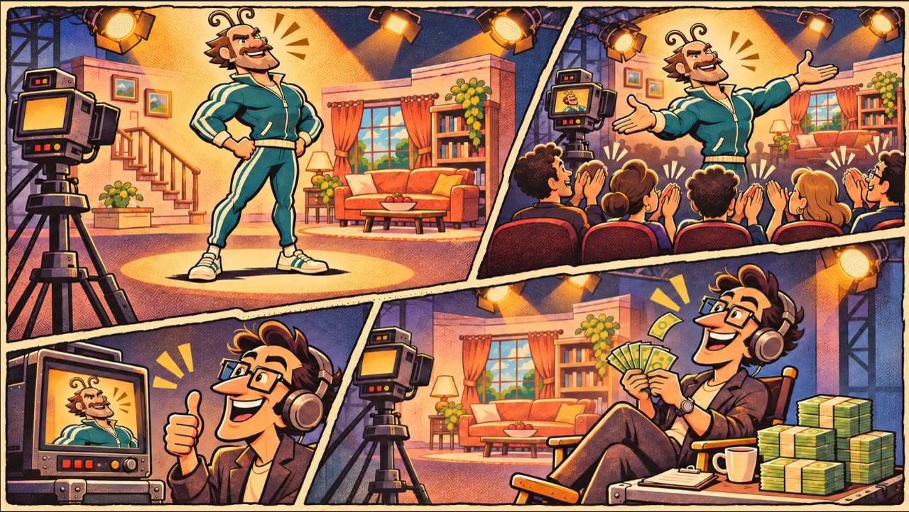
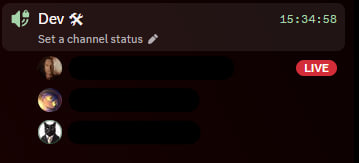
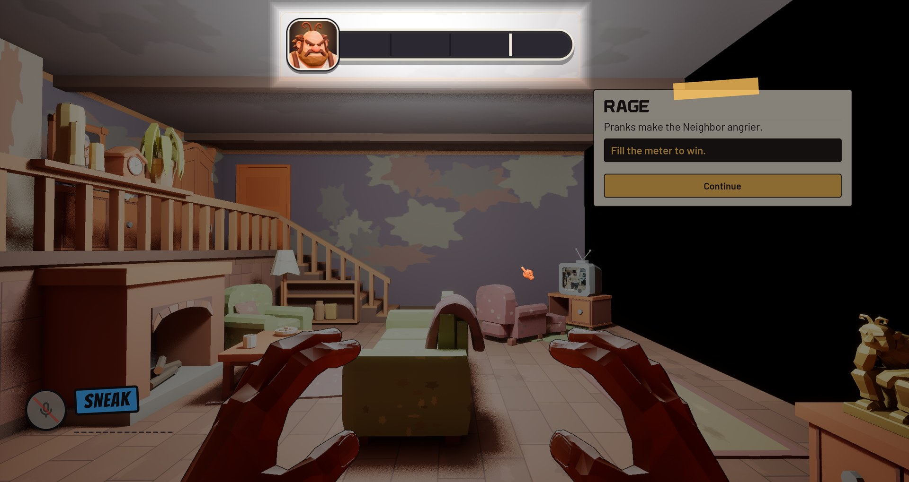
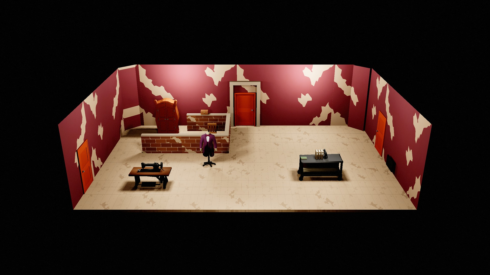
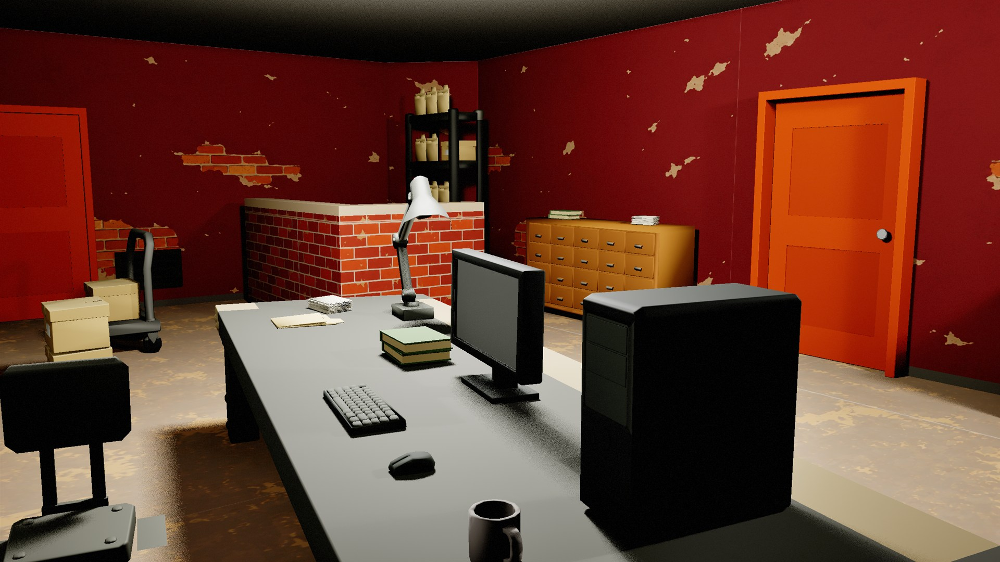
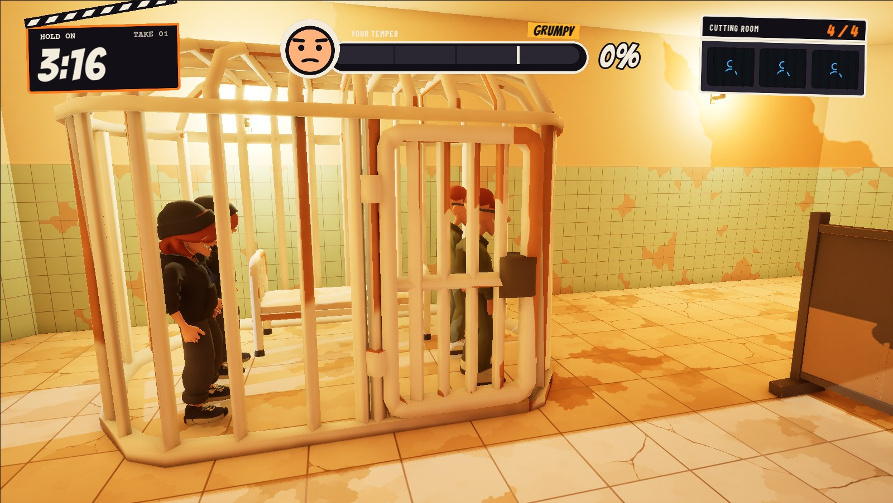
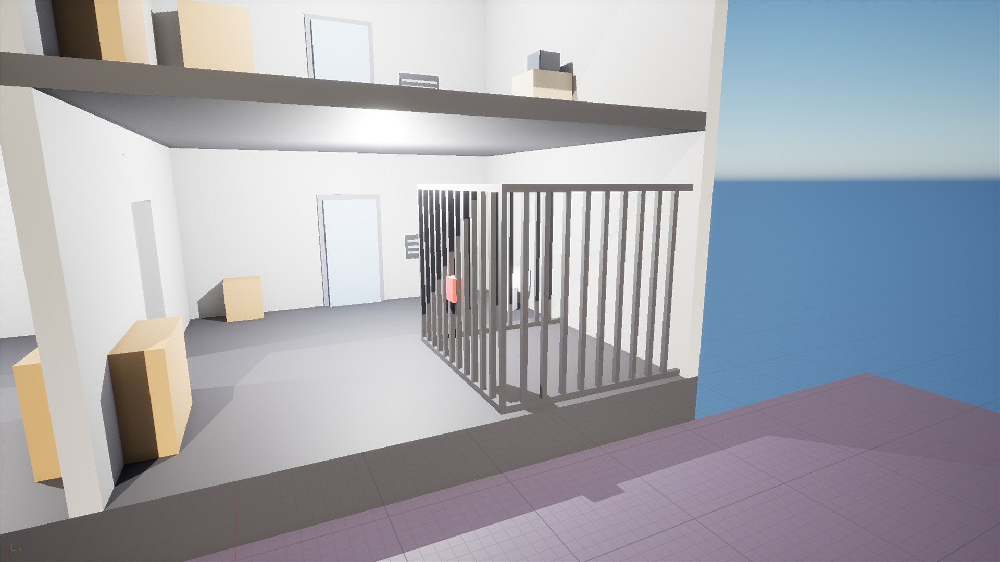
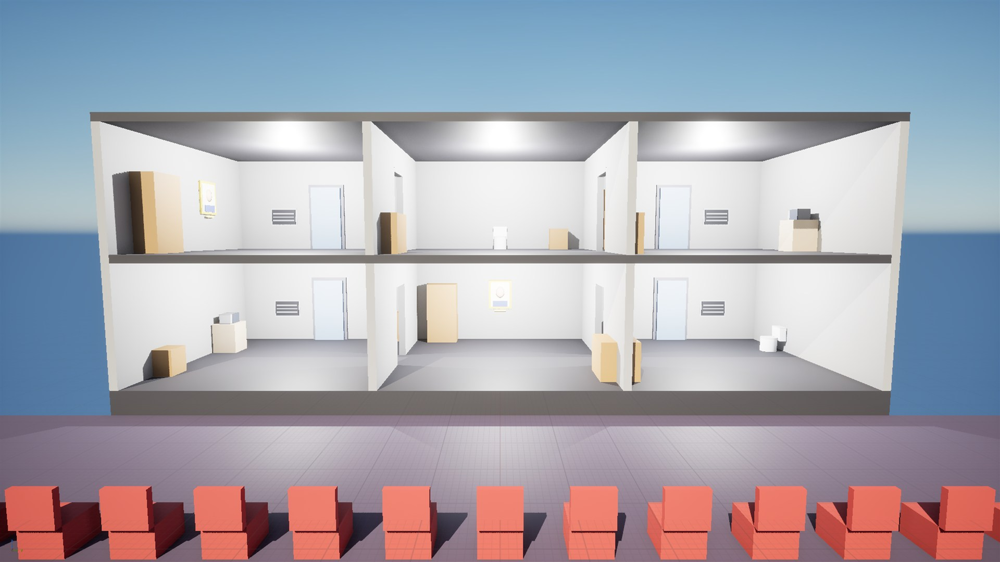

Full devlog
Every entry, newest first, as the team and its agents wrote it during the jam.
How we built Break The Cut! for the 2026 Epic AI MegaJam (theme: Director's Cut), with a team of three humans and AI agents. Newest entries first, under a day heading ## YYYY-MM-DD. Each entry: what we did and why, what we decided, what broke and how we fixed it, what's next. The tag [A] / [B] / [C] is the team lane (online & match / gameplay / set & show).
Everything dated 2026-11-11 happened before the jam started (git tag pre-jam): tools, agents, MCP and planning only, no game code. The entries below were first written in Ukrainian and translated to English when we learned the jam requires English (Official Rules 7(i)).
2026-11-15
- [C] Director's Cut replays vents and the set as they were. A vent trip jumps the ghost from hatch to hatch instead of sliding through walls, hidden players' ghosts hide, the vent's used look, drawers, doors and the cage are posed to each clip's time and restored after the reel, and the downloaded video's audio is normalized (about -16 LUFS, -1 dBFS limiter).
- [A] The lobby scene drops its default sky and lights. Saved the remaining lobby-map cleanup: the DirectionalLight, SkyAtmosphere and SkyLight actors are removed. The five player starts, four static meshes and text actor retain their serialized actor metadata. A fresh headless load verified the saved map and its actor composition. Readback.
- [C] An open door no longer opens a way off the set. The black pockets behind active doors now block players on all five faces. A permanent invisible barrier at the threshold keeps a bystander inside while someone else opens the leaf, so closing it cannot trap them outside E range. Room placement and safe arrivals still use the room shell's bounds. The Editor build, all 233 native tests and 32 two-player PIE checks passed: side and rear doors stayed solid through opening and closing, the pushing player stopped 44 cm inside the threshold, and both players could still travel with E. The native swing fixture also needed an explicit BeginPlay in its GameMode-free test world. Review. MP4
- [A] Eight minutes on the call sheet. New lobbies now start with an eight-minute take instead of six, through the existing project tuning. The host can still change the length, and travel retains the chosen value. All 231 existing native tests passed; a fresh-process two-player lobby review confirmed 480 seconds and 08:00 on both host and client. No C++ or asset rebuild was needed.
- [A] Your look is your choice. Choosing the Girl used to reserve her while another look was free, so another player could not choose her. The lobby now accepts duplicate looks and keeps both buttons available. In a three-player review, two players chose the Girl; changing one to the Boy left the other unchanged on every client. Game/Editor builds, all 204 native tests and 145 PIE checks passed, including each player's selection ring and the absence of Taken badges. The headless RPC fixture first ignored every request because its actors were not initialized; initializing its world fixed the test. Review evidence.
- [A] Casting labels fit their cards. Incoming role trades now read ALLOW SWAP, without a nickname extending beyond the button. The host's random-cast option reads SURPRISE US, including its enabled state. The build recipe and prototype use the same wording. Game build and native card-layout previews passed; all 230 tests passed against the existing Editor binaries. The shared editor will load the captions on its owner's next rebuild.
- [A] The tutorial gets the game's lettering. Replaced the plain entry title with a transparent TUTORIAL wordmark generated from the existing logo: slanted orange-to-red letters, dark cuts and a cream outline. The title stays centered, keeps its proportions and follows the existing fade before both first launch and replay. The texture survives map travel and garbage collection; returning to the menu has no title. The Editor build, all 230 native tests, fresh saved-texture readback and a standalone entry/return/replay review passed. Artwork and prompt, review. MP4
- [A] The nickname backdrop reaches the bottom. On taller screens, the dark fade ended at the centered 16:9 frame and the studio reappeared as a strip below it. We continued the fade's opaque bottom color beyond that frame. The artwork, form and existing gradient stay in place. Native before/after renders cover 16:9, 16:10, 21:9, 32:9 and 4:3; pixel comparisons confirm only the exposed bottom band changed, with the main menu unchanged. Fresh saved-UMG readback, repeat-patch checks and all 218 native tests passed using the existing Editor binaries; no C++ changed. Review.
- [C] Both showcase GIFs fit the 3 MB limit. The room tour keeps all 16 rooms at 960 × 480 by holding one frame per room. The Director’s Cut montage keeps the eight-second sequence at 960 × 540 and 6 FPS. Both files decode and measure under 3,000,000 bytes.
- [C] Clean room stills. The hallway, garage and cage card stills were greybox captures (debug captions such as "Corridor F1 C2 CenterCorridor.1"); they are now crops of the lit room tour (Corridor_2, garage, prison), imported by
Tools/ui/import_room_stills.py; living room, bedroom and kitchen were already clean. - [C] The Director's Cut sounds like the room it shows, and its cards show their own clips. Four bugs from the playtest are fixed. - Walls: the replay played every recorded voice and sound unmuffled, as if all of it came from the shot's room. It now uses the live game's room rules from the clip's listener (the first-person player, else the moment's room). Gameplay sounds stay in their room; speech carries one or two rooms by loudness and is muffled through walls with the same low-pass and gain as live voice. - Leaks: a clip's sounds sometimes played again in an unrelated clip. Recorded events now play only inside their clip's window and room, and a cut stops the clip's sounds and resets each ghost's voice completely. - Download: the offscreen export after a skipped finale used to play the reel's sounds aloud over the results screen. Its sounds now go only into the recording. The engine applies "output to bus only" just to a sound that is already playing, so the route is set after Play. A recording of the host's own output during the export showed RMS 0.03-0.05 bursts following each clip before the fix, and a flat ~0.005 after (the PIE device being unmuted for the capture); the file's audio peaked at 0.04. - Cards: each card now shows a frame taken from the replay at its clip's moment, by the reel camera, so it shows the right time, room and view. One-shot captures came out nearly black because a fresh scene capture has no exposure history; the card capture now renders through the clip so its exposure settles first. The hallway room art turned out to be a greybox debug capture with an editor caption, and moments on the stage used it, so it is never shown; a card without any picture is a plain dark frame. New tests
Jam.Reel.ReplayHearsLikeTheGameandJam.Reel.CardShowsItsReplayFrame; all 232Jam.tests pass. Verified in a two-player match onL_Stagewith voice from another room, a skipped finale and a download; replay stills measured 0.09-0.22 brightness where they used to be under 0.05. - [C] The focus outline holds on to its item with DLSS on. The outline material read render-resolution custom depth with a display-resolution UV, so below 100 % screen percentage it drew a shrunk copy toward the top-left; it now converts a viewport UV per texture. Checked in isolated PIE at TSR 100/67/50/33 % and DLSS 50/33 % (
Tools/Vfx/review_focus_outline_pie.py). - [C] The Corridor_3 table pickup survives the merge. When we merged features-3, its version of BP_Corridor_3 won the conflict, which put the old table pickup point back: the item sank into the helmet prop and only its outline showed. We reran
Tools/Items/place_item_spawn_points.pyfor that room alone, and the point is back at (630, 177) on the 75 cm table top. An isolated PIE audit over seeds 7/42/99 shows no pickup buried in furniture (worst sink 1.6 cm). The full run currently stops on Corridor_6: itsUtilityBench_UtilityBenchsupport component is gone after the merge. The review script's still now prefers a point that is actually showing an item. - [C] A 720p Director’s Cut GIF. We rendered the same montage from the original footage at 1280 × 720 so the Watch Again button and result cards read more clearly. The eight-second loop uses 12 FPS to keep the file just under 10 MB. Updated montage.
- [C] The Director’s Cut montage gets a wider frame. We recut the two earlier GIFs from their higher-resolution recordings. Watch Again leads into the whole set and a first-person close-up, then the living-room shots show both pranksters as the Star arrives. The new loop is 960 × 540 at 16 FPS and 8.06 seconds.
- [A] Every room on one reel. A one-second-per-room tour of all 16 registered room modules: the ten rooms (living room, kitchen, laundry, bathroom, bedroom, office, garage, dressing room, costume room, prison) and Corridors 1–6. Each is shot from the audience side through its open front, lit by its own authored lights plus one soft studio key, on the black soundstage.
Tools/Set/capture_room_tour.pyreads the room list from Project Settings → Jam House and runs in an isolated offscreen editor, so the shared editor is untouched;Tools/Set/make_room_tour.pycrops to 2:1, adds the room name and makes the GIF, mp4 and contact sheet. Gotcha: a SceneCapture2D in that offscreen editor drew every material instance in its parent's default colour (grey rooms, orange doors fading to grey), while the viewport's high-res screenshot through a CameraActor renders the real look, so the tour uses the latter. Video: room-tour.mp4, contact sheet: room-tour-sheet.jpg. - [C] Trailer cards speak the logo's language. Made five transparent PNG title cards for the trailer using the menu logo's bold slanted lettering, warm gold-to-red colors, dark cuts and cream outline. Each card keeps the requested phrase; the final HELP EACH OTHER! card was regenerated with a wider gap between EACH and OTHER for readability. The artwork and generation/review records are kept with the title-card set, ready for the editor to place over black frames.
- [A] Open the drawer before taking the marker. The tutorial's marker used to appear loose on the floor. It now waits inside the living-room table drawer: E opens it, then holding E takes the revealed marker. The instruction and objective follow those two actions. Closing hides the same item until reopening; the lesson advances only after pickup. The Editor build, all 218 native tests and 18 standalone PIE checks passed, including the real held-E pickup and the later lockpick lesson. The existing room assets and twenty-one-cue route remain intact. Review evidence. MP4
- [A] Feet on the floor, measured on the skin. The Girl still looked like she was floating. Bone heights were the wrong yardstick: each model's sole sits differently around its foot bone. A new dev command,
Jam.Character.Feet, CPU-skins the current pose and logs each character's lowest vertex above the floor. At idle it read Girl +0.2 cm with her toes tipped up, Boy -0.8 cm and Neighbor -1.6 cm. The Girl'sFloorOffsetwent from 3.25 to 4.25 cm, so all three now sink a hair into the floor instead of hovering. Checked with low PIE close-ups of every character. - [A] Feet on the floor, part two. Still hovering after the capsule fix: the retargeted animations lift the whole body about 3 cm above the bind pose (the foot bone 13.6 cm instead of 10.5 cm on the Neighbor).
FJ_CharacterVisualgained a per-lookFloorOffset(Neighbor 3.1, Boy 3.2, Girl 3.25 cm, set byTools/Characters/create_gameplay_pawns.py) that lowers the mesh and ACharacter's cached base offset, so crouching and network smoothing keep it. In PIE the foot bones now sit at their bind-pose height. The real fix would be in the retarget; this is the cheap one. - [A] Feet on the floor. Characters hovered slightly: the mesh sat on the capsule bottom, but CharacterMovement keeps the capsule 1.9–2.4 cm above the floor.
AJ_Characternow places the mesh 2.15 cm below the capsule bottom; a PIE probe measured the mesh root within 0.05 cm of the floor for the Star and the pranksters. Reel ghosts copy the recorded mesh transform, so they follow. - [B] A locked wardrobe still shows up. During the five-second lock after a hider leaves, pranksters now keep the outline and the "Hide" prompt, with the E faded and unusable, the same as a door leading back into the room you just left. Previously the prompt simply disappeared, so the wardrobe looked broken.
- [A] Noise suppression and "Hear myself". Your voice is the throttle, so a fan or a hissing laptop mic used to nudge the pawn forward and went out to the other players' rooms too. Each microphone stream now runs a small real-time suppressor (
FJ_NoiseSuppressor): a 90 Hz high-pass, then a short FFT where a slowly tracked noise floor (the quietest moments of the last 1.6 s) sets a per-frequency gain, and steady noise drops to a -20 dB floor while speech goes through. It sits right after the mic gain, before the movement level and the voice encoder, and adds about 11 ms at 48 kHz. We wrote our own 512-point FFT, so the module needed no new engine dependency. Headless tests: steady white noise drops by 19.9 dB, and a voiced burst over the same noise keeps its level (-0.01 dB) and shape (0.998 correlation with the clean signal). The Sound page has two new switches under Mic gain: Noise suppression (on by default) and Hear myself (off). Hear myself plays your processed mic back only to you, as a local 2D sound in the Voice class, in the menus, the lobby and the match. It is never sent over the network or recorded into the reel. Both are saved in[Jam.Microphone], reset by Defaults and available as console commands (Jam.Mic.NoiseSuppression 0|1,Jam.Mic.MonitorSelf 0|1). - [B] No more wardrobe hopping in a chase. A prankster could leave a wardrobe and dive straight back in. Now, after a hider leaves on their own, that hiding spot stays locked for five seconds, like a room door you just walked through (
AJ_HidingSpot::ReenterLockSeconds, replicated server time). The Star can still Check it while it's locked, so the lock gives nothing away. Leaving because you were caught or because the match ended doesn't lock the spot. Covered byJam.Hiding.EnterAndLeave. - [C] How the Director's Cut replays a take. When a match ends, the clapper calls "CUT!" and the take's best moments replay before the results. Every machine records the whole take while it is played: where each player went and what they said, the hall's reactions, and every show moment (pranks, catches, cage openings). The director picks the clips and replays them with ghosts in the players' own bodies, with name labels that turn to the camera. Moments in a room replay first person through the player who made them; a prank clip swaps the object to its pranked look with its VFX. Wide shots of the house cut between the clips. The results screen then lists the clips as cards with real captured stills. This clip is a staged two-player take on
L_Stage: the mirror in the dressing room is pranked with a ghost standing beside it, then a catch and a cage opening. It was recorded withJam.Media.Clip ... uifrom the host's window, and the cheats ran throughJam.Test.Unguardedso both machines recorded them. (mp4) - [C] From the win screen to a room full of trouble. The Director’s Cut GIF now holds on the results screen with Watch Again highlighted, then shows the replay opening. The group shots come from the November 14 playtest and show the two pranksters by the TV before the Star walks in. Updated montage.
- [C] Director’s Cut in nine seconds. We cut six shots from the team’s November 15 replay recording into a looping GIF. It starts on the full set, cuts inside the rooms and closes on the pranksters’ results screen. Playtest chapter.
- [C] The Director's Cut, from a real take. Cut from a 4K recording of a real playtest match: the results screen, the reel opening on the whole cutaway house, ghosts replaying the players' own runs through the rooms, and the take's last moment at the cage. Every machine records its own take and replays it with its own camera, so each player gets a slightly different cut: (mp4)
- [A] The girl wears the boy's hands, with a black cuff. In first person the girl prankster now uses the boy's arms: his mesh, his idle / walk / pickup / small and large hold animations, and with them his calibrated item grips (the grip is picked by the hands mesh's name). The only difference is her sleeve:
Tools/Characters/FirstPersonHands/build_girl_cuff.pycopies the boy's base-colour atlas with the olive sleeve texels turned to her black sleeve colour (folds and cream stripes kept) and buildsM_FP_GirlCufffrom the boy material's graph;M_FP_Boyis untouched. A hands look can now carry per-slotMaterialOverrides(Project Settings → Jam First Person Hands); the Girl entry points at the boy's mesh and animation blueprint plus that material. Her old hands mesh and animation set are no longer used. New testJam.Characters.FirstPersonHands.GirlLook; all 226Jam.tests pass. A 3-player listen PIE on L_Stage (review_girl_hands_pie.py, run by house-generator) gave the girl a marker and then toilet paper through the real dev RPC: every stage reported SK_FP_Boy + ABP_FP_Boy + M_FP_GirlCuff (the boy kept M_FP_Boy), with the small and large holds in the boy's grips. The game camera crops the wrists, so the cuff colour is shown on the mesh itself (boy left, girl right). The large hold is one-handed for both, as authored for the boy. - [C] Results cards show the real moment again. The stills were dark for another reason: room culling hides every room but the local player's own on each machine, so a still of any other room filmed an empty, unlit void (house-generator's find; the video export had the same problem). A still now unculls every room for itself (
UJ_RoomCullingSubsystem::SetShowAll, one reason per still), captures a few frames later and lets culling resume. In the four-run review the talk and room moments came back as real first-person room interiors;StillMinBrightnessdropped to 0.05 so a slightly dim still (0.067) is kept. Still open: prank-moment stills still measure about zero and show the room's art instead. - [C] Results film strip: cards keep their size, no black or smeared stills. With one clip, the Director's Cut card stretched across the whole strip and its still was squeezed into a band about 10:1, which read as colour smears on black. The strip is a five-column uniform grid, and a uniform grid sizes only the columns in use; empty cells now keep every card at its column's width, left-aligned (two columns for the studio cut's deleted scenes). A still fills its card at its own aspect, cropped, never stretched. The stills themselves were mostly black: they were shot from the reel's old wide framing outside the house front, which is now a dark studio. They now use the reel's own first-person view of the moment (that player's body and held item hidden from the capture) with the export's +1 stop, and a still darker than
StillMinBrightness(0.08, Project Settings → Jam Reel) is dropped so its card shows the room's art still; "On Stage" moments show the frame art. Checked with real match ends at 1, 3 and 10 clips plus a studio cut (Tools/ui/review_results_strip.py, four runs): no black or smeared card; testJam.Reel.StillBrightness. Still open: in those runs even the first-person captures measured 0.04-0.06, so cards nearly always show art; the capture renders darker than the live view and needs its own look. - [C] Director's Cut name labels face the camera. The ghosts' names in the reel were fixed toward the audience side, so in the first-person replays they read edge-on or backwards.
AJ_ReelGhost::FaceLabelTonow turns each label toward the reel's camera every frame (yaw only, so it stays upright), after the camera is placed; the exported video films through the same camera. A label stays hidden until it has been turned once, because the review caught one frame at the old yaw when the reel started. Verified by numbers, not by eye: five 2-player PIE runs ofTools/Reel/review_ghost_labels.pycompared every visible label with the bearing to the view camera (up to 140 checks per run, worst 0.02°), andJam.Reel.GhostLabelFacesCameracovers the rule. No run captured a close frame with a readable name: the reel shows these moments as wide house shots or first person from the other player. Along the way the review found that L_Stage had lost its audience (the reel recorded no moments; now carried by a stand-in, f38f611d) and that scripted cheats needJam.Test.Unguardedfor client reels to record moments (27e056c3); the review uses it. - [C] Cast photos follow each prankster's look. The HUD roster showed the boy for everyone, girl or not: its photos were whatever the widget was built with, and nothing set them per player.
FJ_CastPortraitnow picks a prankster's photo by the look they wear (AJ_PlayerState::GetSkinIndex), with the pawn's own rule when no look is picked yet, so photo and body always agree. The roster sets the normal and the caged photo of every row each frame, so a look that replicates late (or a late join) shows up at once. The caged girl got her grey photo, made like the boy's (make_cast_images.py, imported alone byimport_cast_looks.pyso no locked style texture is touched). The role reveal card has a girl version too, and the call sheet's "A Prankster" card shows the look you picked. The lobby monitors already followed the look; the results and reel cards show no prankster photos. Checked in a 3-player PIE (review_cast_portraits.py): each prankster's roster shows the boy and the girl right, and the caged girl turns grey behind bars in every window; testJam.UI.CastPortraitByLook. The role reveal card itself was not captured in that run. - [C] The "client reel misses every prank" bug was in our test scripts. In scripted two-player runs the host's Director's Cut had pranks, catches and cage openings while the client's had none, and the audience reacted only on the host. It looked like the audience's reliable multicast was being dropped. The audience actor was replicated, always relevant and awake on both machines. The real cause is an editor rule: our review scripts fire cheats from Python, and every RPC called under the editor's script guard runs only locally. The match ending reached both machines because
Jam.Test.MatchActionalready drops that guard. The new dev commandJam.Test.Unguarded <command>does the same for any console command. With it,Jam.Reel.Dumpbefore the ending shows the same five moments on host and client (catch, prank, catch, prank, cage opening), and both Director's Cuts play. No gameplay change was needed. The gotcha is now in AGENTS.md, so review scripts wrap their cheats. - [C] The Director's Cut no longer needs an audience in the hall. liemander removed the audience hall from
L_Stageon purpose (the map is now 27 KB). But show events (pranks, catches, "Action!", the ending) only reached the reel recorder through theAJ_Audienceactor, so every Director's Cut came out with 0 clips. I first rebuilt the map withbuild_l_stage.pyto bring the hall back; the team reverted that, because the empty stage is the intended look. The fix is in code instead: on a house map without a placed audience, the server spawns a hidden, replicated stand-in with no seats or visuals. It carries the show events to every machine, and the reel recorder and the show music bind to it as soon as it arrives. The crowd's murmur and reactions still play from in front of the house; both the sound switch and that position are tunables (Jam Audience -> Stand-in). New testJam.Show.ReelRecordsWithoutAudience; all 223Jam.tests pass. A two-player match on the hall-lessL_Stagenow ends with a 5-clip Director's Cut on the host and a 3-clip one on the client, including a prank and an escape clip. - [C] The Director's Cut plays without live chatter. Players heard the take's recorded voices and their teammates talking live over them at the same time. While any reel plays (on screen, or the offscreen video export), every live voice (pawn and lobby) now has gain 0 on that machine: arriving packets are dropped, already-buffered speech stops, and the local mic is not sent. The reel's ghosts replay the recorded speech on their own path, so they are untouched, and the exported video holds only recorded voices. Live voice returns by itself when the reel ends or is skipped. New test
Jam.Audio.LobbyVoice.ReelMutesLiveVoice; all 221Jam.tests pass. A 2-player listen PIE on L_Stage (Tools/Reel/review_reel_voice_mute.py) had the client talk with a synthetic mic. In the same room before the reel the host heard 75 packets; during the reel, 100 arrived and 0 were heard while the ghosts' speech played; afterwards 75 were heard again. The client still sent during the reel because the check ran from the host's reel alone. The receiving mute is what keeps it silent. The first run's silent baseline came from the take start respawning both pawns into different rooms, and the review now places them together. - [C] No more empty outlines on the Corridor_3 table. In a playtest, aiming at a pickup on a table drew the white focus outline as an empty shape over bare wood. The outline is a custom-depth mask drawn through the scene, and the pickup itself was buried. Corridor_3's table spawn point had drifted to x 500, inside the chair beside the table, and its original spot is now inside the astronaut helmet prop on the tabletop. The outline and the uniform item scale were both fine.
Tools/Items/place_item_spawn_points.pygets aREFITlist for known-bad points and puts this one on the table's free back corner (630, 177), 0.2 cm above the top. A PIE audit (Tools/Items/review_item_outline_pie.py) stocks every spot over five house seeds and checks each shown pickup against the surface under it and the room meshes around it: 48 pickups, none buried. Only the garage welding bench point sits 16 cm above the bench's collision, but it rests on the rendered top. - [C] The downloaded reel is saved at the game's own quality. The Director's Cut video used to be a fixed 1280 × 720 at 30 FPS and 8 Mbps. It now records at the viewport's real output size, after the upscaler and post-processing, whatever the DLSS / FSR / TSR mode, screen percentage or Windows scaling. The size is kept even and capped at 4K, the rate at 60 FPS (or the presented frame rate), and the bitrate scales with the pixels: about 20 Mbps at 1440p. If the encoder refuses a size, it logs that and drops to the next 16:9 size (1440p, 1080p, 720p). The 1440p checks found a second bug: a skipped finale is recorded offscreen with the view still on the player, so room culling hid every room but the player's own and the video went black after a few seconds. The export now asks the culling to show the whole house while it records. Verified in two-player PIE at 2560 × 1442 with DLSS Ultra Performance, finale and offscreen, plus 1600 × 902 with DLSS Quality and off: full frames, sound throughout, a finished recording saved in 0.01 s and an offscreen one in about 19 s. The results screen stays lit and still while it records (frame-to-frame difference is confetti only). Still open: black host thumbnails on the results strip, and a finale that sometimes finds no clips at match end.
- [C] Download video without watching the reel again. Pressing Download video used to replay the whole Director's Cut on screen to capture it. - Now: the finale reel is recorded while it plays the first time. A scene capture of the reel camera (the replay only, no overlay or results) is read back without stalls, mixed audio is recorded, and a worker encodes into
Saved/ReelExport. Download just copies that file to the Desktop asBreakTheCut_<six digits>.mp4: 0.00 s after the click in a two-player PIE match end, with no replay. - Encode still finishing: the progress bar waits for it. - Skipped finale: its incomplete recording is dropped. Download then replays the reel offscreen (the results stay on screen, the view does not move, its sounds are heard) and saves it when done: 8.6 s for a two-clip reel. - No leftovers: the temp recording is deleted when the world ends. - Bug found in testing: two recordings in one process silenced each other. The first to end put the sharedau.DisableAppVolumeback, so that setting is now held until the last recording ends. - Checked: host and client each record their own reel. Both files have AAC audio throughout and 1280×720 H.264. A newJam.Reel.DownloadWithoutReplaytest covers the download decision and the Desktop copy. - Brightness: the scene capture renders darker than the screen, so the video gets a tunable +1 stop. - [C] Prank fixes kept through the features-3 merge. The merge took features-3's office and costume room modules to keep its new room lights, which dropped the office's mirrored copy of the computer picture. Reran
Tools/Pranks/Computer.py(andRoomPranks.py, whose costume copy already matched) on the merged modules. PIE on the generated house: the costume stays whole when pranked, the picture reads the right way and fills the glass, cleaning restores both, and the new room lights are on. - [B] Every item lies at one size; the middle workbench drawer opens. The centre middle drawer could never be used: from standing height its sight check hit the DrawerFocus box of the upper drawer next to it, so focus skipped it and opened the upper one instead. Sight checks for cabinet drawers now ignore that cabinet's own drawers, while other furniture and walls still block. Items lying in the world, on spawn points and in revealed drawers, now share one world scale,
UJ_ItemSettings::WorldItemScale(1.333, the earlier 2× workbench size reduced 1.5×). Each point's own scale, DisplaySize and offset scale no longer change it; the workbench's temporary 2× item scale was removed. The editor build passed. Tests and PIE were skipped at the user's request; existing size-fitting tests may need updating for the global scale. - [B] Workbench side drawers and bigger loot. In the workbench's left and right columns the upper drawer now opens 24 cm, half of the 48 cm lower one; the centre column is unchanged. Items revealed in the workbench drawers are now twice their authored size, because at authored size they were hard to see in such a large piece of furniture. Saved values were read back; tests, PIE and media were skipped at the user's request.
- [B] Workbench drawers come out further too. The prototype workbench's travel is also 1.5 times longer, keeping its 100% / 70% / 30% ratio: lower 48 cm, centre middle 33.6 cm, upper 14.4 cm. Only the right lower drawer needed to grow while opening (to about 1.06 times its length) to keep 8 cm inside; the others are deep enough. Items moved with the trays. Saved Blueprint and map values were read back; tests, PIE and media were skipped at the user's request.
- [B] Dresser drawers come out further. At the user's request the orange dresser's drawer travel is now 1.5 times longer, keeping the lower:upper ratio at 100%:50%. Lower drawers slide 45 cm and upper drawers 22.5 cm. A 44.5 cm lower drawer would have left its 49 cm body completely, so drawers can now opt in to growing longer while they open (
DrawerOpenStretch). The lower drawers grow backward from their front face to about 54.5 cm, keeping 8 cm inside the body. Closed, they keep their original size. Items keep their place on the trays. The editor build passed and the saved Blueprint values were read back. Tests, PIE and media were skipped at the user's request. - [B] Lower drawer loot can be picked up. Two earlier fixes failed because loot in an open drawer sits behind and below the drawer's front panel. Looking down at it missed every front, so focus fell back to the upper item's 30 cm pickup sphere. Open drawers now select loot by the shown item's actual mesh bounds, with a 3 cm aim margin, and no longer fall back to the pickup sphere. The front panels are used only to open closed drawers. The sight check ignores the cabinet's own open parts, while other cabinets and walls still block it. The editor build and the three
Jam.Interaction.Furnituretests passed; the fullJam.suite was not run. One real two-player PIE test passed on the stocked orange dresser with all four drawers open. Client1 looked steeply down at a lower drawer's item and only that item was outlined. Holding E moved it into Client1's hands on both server and client, and the other three items stayed put. - [B] Correct the workbench travel and lower-front selection. Playtest feedback showed that the previous change added workbench ordering but left every drawer's travel unchanged, and the first upper DrawerFocus box still prevented lower targets from being considered. Owned prototype drawer copies now use 32 cm for lower drawers, 22.4 cm for the centre middle drawer and 9.6 cm for upper drawers, with loot offsets adjusted to the trays. Replaced the first-hit targeting workaround with independent selection of each moving drawer front by aim position, retaining unrelated occluders and each drawer's own pickup. Source and regression tests are uncompiled and unrun; no PIE or media capture was performed at the user's request.
- [B] Reach the lower drawers. Changed interaction focus so an open drawer selects its own revealed item and upper pickup spheres do not swallow precise aiming at lower drawers. Revealed-loot sight checks ignore the same cabinet's open parts while retaining unrelated blockers. Added independent bottom-up ordering for the workbench's left, centre and right stacks, with saved prototype tags. Kitchen and folding cabinet bodies now ignore the interaction trace while retaining pawn collision; their interactive fronts still block it. Saved property readback confirmed the collision settings and workbench tags. Native regression tests were added but not run; the code still needs compilation, and no PIE, build or media capture was performed at the user's request.
- [B] Clear obsolete prototype storage. Removed 36 mock actors from L_Prototype: ten cube item tables including ItemTable_LivingRoom_Portrait, six greybox search spots and twenty associated item endpoints. Kept the authored cabinets, their twenty gameplay slots and the prank fixtures. Updated the prototype builders so rebuilding does not restore the removed mocks. Saved without tests, PIE or media at the user's request.
- [B] Separate prototype drawers from their cabinets. After the placed cabinet bodies appeared without drawers in game, replaced their child-actor setup with body-only prototype wrappers and 20 attached replicated level actors using the original gameplay assets. Saved attachment and moving-mesh property readback passed. Client-local child-actor hiding is the suspected cause, not a confirmed diagnosis; PIE and multiplayer verification remain skipped at the user's request.
- [B] Furniture belongs in rooms. Moved the prototype furniture variants out of the test gallery into existing rooms: living-room cabinets, the kitchen cabinet, Laundry drawers and folding cabinet in Bathroom2, the workbench in Study, and the hiding wardrobe in Bedroom. The prototype has no separate Laundry or Garage. Removed the temporary gallery platform and lights while retaining prototype-only loot filling. Saved without tests, PIE or media at the user's request; placement remains unverified.
- [B] A stocked furniture gallery. Replaced three old prototype test cabinets with nine furniture families, including the Laundry drawers, providing 20 gallery loot slots. A prototype-only map tag fills remaining accessible loot spots after normal stock allocation without adding extra keys or changing production maps. Final verification and media capture were stopped at the user's request. An initial full test run failed on the new test world's transient package; the fixture was corrected but not rerun, so the work remains unverified and uncommitted.
- [B] Longer breathing room for voice movement. Increased the movement-only speed hold from 0.25 to 0.75 seconds after quieter speech or silence. The 0.45-second decay, 0.35 walking floor, fast attack, microphone meter, mouth, room audio and no-mic keyboard controls are unchanged. The editor build and all 205
Jam.tests passed; the focused tests cover the new boundary and default. PIE verified the real Star component at 0.75 seconds, extended holds for quieter input and silence, subsequent release, recovery and W movement; loaded Star and prankster Blueprint defaults also read 0.75 with no serialized override. This diagnostic capture shows the synthetic-input review, not a room-art review. Video - [C] Prop edits reach the playable rooms without replacing their lights. Applied the author's latest MakeupRoom, Garage and CostumeRoom placements to their existing gameplay modules: 21 component poses and two new costume-room curtains. The in-place transfer keeps the modules' hand-tuned lights, ready gameplay furniture, prank art and garage door-clearance fix. All exposed light properties and their attachment transforms matched before and after saving; a fresh offscreen generated-house review checked the saved placements and 283 runtime components across the three rooms. The garage passage retained 251 cm clearance, rerunning needs no further edits, and all 206 native tests passed using the existing Editor binaries. No packaged build was made. Verification.
- [C/B] Furniture gets its own Foley. The five supplied drawer and wardrobe recordings now accompany real furniture motion: drawers open and close on E, while wardrobes sound when hiding, leaving or completing a Check. Closing/reopening retains the original loot and never refills a searched drawer; a separate consumed-state flag also protects a pending reveal during stock redistribution. Closing sounds reverse the supplied drawer motion, and all seven variants are shortened to fit their animations. Empty and occupied wardrobe checks use the same sound set. Source and preparation record the supplied files; their generator/license was not identified in the handoff. Game and isolated Editor builds, all 210 native tests, fresh saved-wave readback, 118 two-client PIE checks and 16 native recordings passed, including zero PCM for cancelled checks, another room and Master/SFX mute. The new timer tests initially advanced fewer seconds than requested because Unreal clamps long frames; substepping fixed the fixtures. Packaged acceptance remains separate; the active authoring editor was preserved and needs a full rebuild/restart to load the new classes.
- [C] Shadows get their temporal filter back. The settings page said TSR, but only changed render resolution: the project still disabled anti-aliasing, exposing the random samples in soft shadows. Enabling it also required handling the renderer's higher project-setting priority. TSR now runs at native and reduced resolution, including fallback from unavailable DLSS, and PIE restores the editor's prior AA method. Added adjacent virtual-shadow pages around the camera view to reduce missing shadow data at its edges. Authored room lights stay intact. Game and Editor builds and all 206 native tests passed. Seven room types and a controlled center/edge shadow produced 33 native viewport stills and two four-second pans; high-frequency variation in the sampled penumbra fell about 85%. The exact original playtest camera was not recaptured, and packaged/hardware acceptance remains separate. Review. The renderer-default contract is a separate commit; the other lanes should pull it. Before | after, from the game viewport: Camera comparison.
- [C] Bathroom lights reach the playable module. The newly placed RectLight existed in BP_Bathroom, while the generator loads BP_BathroomModule, so the game never received it. Copied that light with its authored properties and transform into the module without regenerating the bathroom or changing its gameplay components. Added a scoped script that copies only missing lights and keeps existing module light edits. The source's identity DefaultSceneRoot maps to the module's native RoomOrigin. The module was compiled and saved; native builds, tests, PIE and media capture were skipped at the user's request. Future lighting edits belong in BP_BathroomModule.
- [C] No generated ceiling or fill lights. Removed the
RoomLightCeilingandRoomLightFillspawner completely, including its greybox and tutorial fallbacks. Rooms now use only their authored lights regardless of the old automatic-light settings; the optional legacy mode can tune existing shadows but cannot create lights. Updated the existing tutorial expectation. Build, tests, PIE and media capture were skipped at the user's request; rebuild and restart the Editor to apply the code change. - [C] Room lighting belongs to the room author. Real room Blueprints now default to manual lighting: the match and tutorial keep their own lights and shadow settings without adding a studio key or fill. The brightness-normalization script skips those rooms, and registration stops before replacing a manually lit module from a changed assembly source unless replacement is explicitly requested. All sixteen registered lighting Blueprints and the Movable/channel-0 workflow are listed in Room lighting. Build, tests and PIE were skipped at the user's request; a full Editor rebuild and restart are required to load the new native property.
- [A] No more seeing through the Neighbor. Up close you could see the floor through the Star: two white triangles on his forearms, a thin crack in a sock, and a strip between shirt hem and trousers that opened whenever he moved. The cause is the Tripo mesh, not the import: it has open holes, and Unreal draws faces from one side only. Worst of all, the torso skin under the shirt is missing from the trouser top up to the shoulder blades. The new
Tools/Characters/close_neighbor_holes.py(Blender, idempotent) finds open edges on welded topology without welding the mesh, so lips and UV seams stay split. It fills 21 small holes in a colour matching their surroundings, and adds a hidden skin band inside the shirt and trousers that takes its skin weights from the nearest body vertex, so any gap now shows belly.reimport_neighbor_mesh.pybrings it intoSK_NeighborTripo_PBRand keeps the skeleton, materials, the 12 face morphs and the 4 LODs. Checked with the real walk, run, crouch, pickup and door animations exported from Unreal: no background shows through. Below: a stride with the arm spread, old (left) vs new (right) in each pair; green is see-through. - [C] The computer prank reads the right way and fills the screen. The "LOSER!" picture on the office monitor read backwards and sat off-centre, with a grey strip at the top left and the picture running past the glass at the bottom right. The office is authored mirrored (its plan axes scale X by -1), which flipped the picture box; the box was also an 80 × 46 cm guess for an 87 × 55 cm glass. The picture is now drawn at the glass's own aspect (1024 × 650,
Tools/Set/make_prank_looks.py) and the box is measured from the monitor's screen faces, so it fills the glass edge to edge with no stretching. The office module's child copy of the art mirrors the box back; the prank class stays right for unmirrored rooms (Tools/Pranks/Computer.py). A gotcha on the way: a struct read from a Blueprint default's map in Python is a live wrapper, and editing it changed the class too. The script now builds a fresh copy. PIE on the generated house: prank → the picture, clean → the plain screen. - [C] The Star walks barefoot, pranksters on carpet. The user picked per-role footsteps from the TFPMovement pack: the barefoot cue for the Star and carpet V2 for pranksters. They are tunables (
StarStep/PranksterStepin Jam Footsteps), and the six wood steps stay as the fallback. Every step now plays on our own audio component with the SFX class set before it starts, so the vendor cues stay unedited and still follow the SFX fader. The cue folder is cooked throughDirectoriesToAlwaysCook, because a config reference alone would not package them. Own steps 2D, others 3D under the room rules, gait loudness and cadence are unchanged. A 2-player PIE take with a cast Star recorded the host: Star walk −58.5 dBFS on the barefoot cue (3 steps), the prankster heard −58.1 dBFS on carpet (6 own, 5 heard), Star run −50.5 dBFS (7). Turning each walker around fixed the earlier flaky client phase. All 208Jam.tests pass. - [C] The wrenched bike lies wrecked on the garage floor. After the bike prank, the bicycle hung in the air past the room's open front, tilted over the black void. The pranked look was the intact bicycle rolled 72° about its length and lifted by its bounding box: the handlebar tip touched the floor, the rest floated, and it fell toward the open side. Now
Tools/Pranks/PrankLooks.pybuildsSM_BikeWreckedin the bike's own mesh space with Geometry Script: the frame flat on its side, the front wheel torn off its hub, bent into an oval and lying beyond the fork, everything resting on the floor and centred where the bike stood.RoomPranks.pyuses it at the bike's own transform, in the prank Blueprint and the garage's child copy. A PIE cheat prank shows the wreck inside the room; cleanup puts the upright bike back. - [C] The torn bed loses its floor slab. The pillows prank's pranked look, lane A's generated torn bed, came with two artifacts the concept never had: a flat white sheet slab lying on the floor under the bed (its review says "no floor slab") and feather-white paint on the bottom 4 cm of the foot posts and the skirt under the rails, which read as broken white legs.
Tools/RoomAssembly/Bedroom/unreal_torn_bed_cleanup.pyeditsSM_BedTornState's mesh description in place: it deletes the slab's 9 large floor faces and moves 42 frame faces to the DarkOak slot. On import the slab's corners weld to the foot posts, so it is found by its faces, not as a loose part. The feathers around the bed and the torn pillows stay; materials and build settings are untouched. The package FBX still carries both artifacts, so the script must rerun after a reimport. PIE on the generated house: prank → the torn bed with feathers, clean → the made bed. - [C] You hear footsteps again. Players reported no footsteps: you didn't hear your own, and nobody else's either. There was simply no footstep system. The TFPMovement animation copies are stripped of the vendor's footstep notifies, and nothing replaced them. Now
UJ_FootstepSubsystemruns locally on every machine and steps each walking character by the distance it covers. The stride depends on the gait: crouched is a quiet sneak, walking is the voice throttle's floor, and a louder voice runs, so voice speed sets the cadence. Your own steps play in 2D; others play in 3D with a short falloff, only where the room rule lets you hear them. Hidden, airborne and teleporting characters make no sound. The sounds are six TFPMovement wood steps (the pack is already in the project), processed and imported asS_Step_Wood_01–06. Tunables are in Project Settings → Jam Footsteps. New testJam.Audio.Footsteps.Rules; all 208Jam.tests pass. A 2-player listen PIE recorded the host's real output: own walk −51.8 dBFS (3 steps), the client's steps heard in the same room (1), own run −46.8 dBFS (6 steps). In both host phases the pawn reached a wall after about a second, which is why the counts are low. The first two recordings were digital silence because PIE mutes unfocused instances and the editor's app volume. The review now holds both open (Jam.Footsteps.ReviewUnmute,au.DisableAppVolume). - [C] The microwave egg explodes and the washer powder spills. Two pranks looked broken in playtest. - Microwave: it ended up standing open and empty. The authored pranked microwave only tinted its cavity pale yellow; there never was an egg in it. - Washer: a clipped wedge of powder floated in front of one washer's door. The powder model sat mostly behind the opaque hatch, so only its front sliver poked out. - Fix: a new idempotent
Tools/Pranks/PrankLooks.pybuilds both looks with Geometry Script and points the prank Blueprints at them. - The microwave's pranked mesh gains an egg-white puddle with a yolk dome on the plate, shell pieces, and yolk / white splats on the walls, ceiling and front lip, in three flat egg materials. - The washer gets a powder dome over the hatch glass, lumps squeezed out around the door seal, a cascade down the front and a pile on the floor, all touching the washer or the floor. It uses a flat matte powder material, since the authored powder texture smeared unrelated details over generated shapes. - Checked: the PIE cheat prank shows each look, and cleanup restores the clean appliance. - [C] The pranked costume stays in one piece. After the spray-paint prank, the star's tailcoat fell apart into floating teal, lime, pink and yellow panels with the gloves hanging in the air. Lane A built the paint as a translucent overlay meant to be drawn over the coat, shirt and bow tie. Our prank Blueprint used it to replace material slot 0 (the whole coat), so only the paint blobs of the coat were left.
FJ_PrankArtgetsPrankedOverlaySlots: the pranked mesh keeps every slot's own material and draws the pranked material as a per-slot overlay on just those slots.Tools/Pranks/RoomPranks.pysets the costume's three cloth slots by name, in the class and in the CostumeRoom module's child copy. A PIE run on the generated house (Tools/Pranks/review_room_pranks_pie.py) checked prank → a paint-stained coat on the stand, clean → the plain coat. New testJam.Pranks.ArtOverlaySlots. The pranked bed matches lane A's torn-bed model exactly, including a white sheet slab on the floor that the concept rules out; that needs a model fix in lane A's pipeline. - [C] Tell the jam through the playtests. The illustrated devlog now opens each chapter on a moment from the game or a problem the team faced. The scenes carry the story from a five-player microphone check to a replay that accidentally filmed its own results screen.
- [C] More of the November 13 playtest. The illustrated devlog now shows the cast at its intended scale, the greybox cage and assembled prison, the office at player height, visible prank results and the F3 test panel. Two clips show the cloud hiding a prank’s visual swap and a film card replaying the computer prank. November 13 gallery.

- [C] A fresh wide shot of the whole set. We photographed all 25 rooms of the current
L_Stagehouse from the audience side, with seed 43 so the shot can be repeated. It now sits next to the greybox and early windowed house in the stage comparison.
- [C] From six rooms to a studio set. The November 12 chapter now compares the vent prototype and early windowed stage with the latest wide shot of the open-front set. The team’s early reel capture and prankster win screen show how the match ending started. Stage comparison · Early Director’s Cut.

- [B] The Star checks a wardrobe in two seconds. At the user's request the Star's Check hold is now 2 s instead of 4: still offered on every hiding spot, the same hold whether or not someone is inside, and no cooldown. The wardrobe Blueprint already used 2 s; now the native default
AJ_HidingSpot::CheckDurationand theJam.Hiding.StarChecktest agree. All 206Jam.tests pass. - [C] The November 14 chapter opens up the set. The illustrated devlog now shows the cutaway house, makeup and costume rooms, with playtest comparisons for the lighting pass and the TV that rendered black for guests. The chapter explains what went wrong with room lights, mirrored props and the garage passage. Room overview · Lighting comparisons.

- [C] The opening comic leads the November 13 chapter. We used a frame from the Star’s heyday as the poster and paired it with the game’s original comic clip, so readers can see the panel reveals and hear the soundtrack. Watch in the illustrated devlog.

- [C] From the mic to the replay. We expanded the illustrated devlog with the cage rescue, our own recorded character reactions, the room-discovery minimap and the work behind the hand poses. Two excerpts from the team’s November 14 playtest capture show the live microphone meter and the Director’s Cut replay. Both keep the original audio. Playtest clips in the illustrated devlog. Microphone and movement, 0:00–0:02 · Living room replay, 2:43–2:49
- [C] Path Tracing in the Graphics settings (experimental). A new toggle in the NVIDIA RTX block beside Ray Reconstruction puts the engine's path tracer on the game view: bounce light softens and warms the rooms (left raster, right path traced). It is off by default, saved, put back in every new world, and greyed out with the reason on a PC without hardware ray tracing. It runs in real time at one sample per pixel and three bounces: the path tracer denoises only the frame that reaches its sample count, so with one sample every frame, moving or not, goes through the NNE denoiser (OIDN on DirectML) and stays clean. DLSS Ray Reconstruction can't help here: UE 5.8's DLSS plugin has no path tracing hook. The first review found the player's own head filling the screen, because the path tracer ignores "owner no see"; the local bodies and held items now leave the ray tracing scene while it is on. HUD, hands, minimap and the settings booth draw normally over it. Not yet checked: the studio sparkles and VFX under it, and the frame rate.
- [C] Fifteen hours in the dev call. The three of us spent more than 15 hours together in Discord, sharing screens, testing builds and working through bugs to get the game playable. Behind the scenes.

- [C] The hand references join the illustrated devlog. The November 14 chapter now pairs our seven phone clips with the in-game first-person grips so readers can see how the filmed poses informed the animations. Each chapter folds a pair of behind-the-scenes notes into an expandable card, with a link to the full entry. The four cards opened and closed at desktop and mobile widths in Firefox, and both MP4s decoded successfully.
- [C] Garage workbench drawers sit flush. The seven opening drawers on the garage workbench looked broken: trays showing through, fronts uneven and shaded differently, a lighter right foot. Not the recent material, LOD or width changes. The authored model the drawers were cut from never had closed fronts on some drawers. Centre-middle and right-upper had only a handle, and the others had partial plates at slightly different depths. The right front foot also carried the lighter Wear material. - Fix:
integrate_screenshot_drawers.pynow gives every drawer one full front plate in the bench's Teal (Geometry Script, a 1.5 mm reveal), just proud of the carcass and behind the handle, so it opens and closes with the drawer. It turns the foot's 59 Wear triangles Teal and moves the body, drawers and trays to the room's material instances like the rest of the converted Garage. It reruns idempotently (a fix tag on each mesh).verify_screenshot_drawers.pychecks the tag and still counts every original triangle. - Checked: the two-client review opens all seven with the client's own E, on server and client. The fresh-process saved readback is ok (10 drawers, no original triangle lost). - [C] Behind the Cut. The illustrated devlog tells the jam story in four short chapters. We picked stage and lighting frames from the local masters and reused the audience, rehearsal and reel clips from the original entries. The page links back to the full notes and works from a local checkout. Firefox verified the desktop and mobile layouts and the date links.
- [B] Rage marks wait for rage. The yellow exclamation mark now appears only while the rage meter has a positive value. An empty meter hides every mark, including before its first update and after a reset. Updated the existing visibility expectation. Build, tests and PIE were skipped at the user's request.
- [C] Louder studio cameras. Increased the native camera movement, idle and background shutter gains by 2.5 times, to 0.40, 0.30 and 0.20, and updated the audio documentation. Verification and recording were omitted at the user's request. The Editor build did not run because the previous editor process had not exited; the new defaults require a rebuild.
- [B] Checking wardrobes takes two seconds. The Neighbor's Check now lasts two seconds in the shared wardrobe Blueprint, whether it is empty or occupied. Its builder saves that timing on every rebuild, and the integration and review scripts expect it. The Game build and all 205 native tests passed; a fresh process read back the saved value, all 13 wardrobes in a generated house inherited it, and an actual E hold in PIE used a two-second timer and completed. The older full living-room asset verifier stops earlier on an outdated furniture-transform assertion, so this change remains uncommitted. The editor's existing unsaved L_Stage was preserved. Gameplay clip.
- [C] No doors to nowhere. Rear doors could stay visible even when the generator left them without a floor connection, so they looked usable while E and the minimap correctly offered no exit. Unused doors now become solid walls. Rooms without an authored closed-wall variant fill the opening with their own panel mesh and materials. All eleven rear-door room variants passed paired/unpaired checks and 99 physical closure probes; the Editor build and all 200 native tests passed. Two-player PIE verified 30 real E transitions across Small, Medium and Large houses, matching door geometry on both machines and the local minimap arrows. The scenario now walks into range after a furniture-avoiding arrival and waits for the existing return cooldown. Verification. The editor GPU-budget warning remains visible; this checks doors, not performance.
- [A] The menu cast loses its backdrop. Cleaned the Neighbor and pranksters' group cutout and removed the orange glow and dark halo added by the menu baker. The three characters now sit directly on the studio background; their framing and lower fade stay the same. Only the shared cast texture was imported, with uncompressed transparency. Native menu and nickname renders kept identical text layouts and widget trees; a fresh process verified the saved texture, and all 200 native tests passed with the existing Editor binaries. Review. Before: After:
- [B/C] Vents only where a designer put one. Corridor_3 kept getting a working vent that nobody could see in its Blueprint. The cause was an old script,
Tools/Vents/place_vent_actors.py: it had stripped theSM_Ventmesh from every room module and left invisible tagged markers, and the house spawned vents from those markers. Now the only vent source in the generated house is oneSM_Ventmesh component placed by hand in a room Blueprint (AJ_RoomModule::FindAuthoredVent).Vent/VentVisualtags mean nothing anymore, greybox rooms never get a vent, and the old script is gone.Tools/Vents/restore_authored_vents.pycopied the designers' grilles back into ten derived modules (corridors 4-6, kitchen, bathroom, office, bedroom, garage, makeup and costume rooms);register_room_modules.pyruns it after every re-derive. LivingRoom, Laundry and Corridor_1/2/3 have no hand-placed vent, so they get none until someone places one. A paired grille is hidden in its room and drawn by the replicated endpoint at the same transform (including the used look); an unpaired one is removed. Map-placed endpoint pairs are unchanged. All 200Jam.tests passed. A user PIE run on L_Stage built 7 pairs (14 endpoints) on both server and client, with no skipped pairs. - [C] The lobby-to-match cover is airtight. For about a second a random scene showed between the call sheet and the match: the cover lifted as soon as the match left its loading phase, before this machine had built the house from the seed and had its pawn placed.
UJ_TravelCovernow waits until the local pawn is possessed, the house is built here and the pawn stands in a house cell, held still for 0.3 s (a teleport restarts the wait; a 10 s fallback after the match starts). The role card used to play out unseen behind the longer cover, then the room flashed before it, so the card now starts as the cover fades and the cover crossfades straight into it. Checked frame by frame in a 2-window PIE (Tools/ui/review_travel_cover.py, a capture every 0.25 s): call sheet, cover, card, own room, and nothing else in either window. Not yet checked in a packaged build. - [C] The tutorial is lit like a match room. The tutorial looked far too bright. Its builder added three 7000-unit fill lights and forced manual exposure -4 on the whole map, while its hand-placed rooms never got the match's studio key, because the house builder never set them up. Now
build_tutorial.pyadds no fills, sky or exposure volume, and onL_Tutorialeach room module adds the match's own studio key and shadow policy at BeginPlay, at the project's default exposure. Match maps are unchanged. Same cameras, before | after: the prison went from near white (mean 161/255, 1.8% clipped) to 104 with hard key shadows, the living room from 113 to 68 with the furniture casting shadows. New testJam.House.TutorialRoomStudioKey; all 203Jam.tests pass. Next: the corridor camera inreview_lighting_stills.pysits above the ceiling and needs a better anchor. - [C] The downloaded reel has its sound, and only the reel. A check of two downloaded MP4s found three faults. Both files were digitally silent. One recorded 21 s of the results screen instead of the replay. The other held every fifth frame twice (a 25 fps game written into a 30 fps grid). Fixes: - Sound: the mix is recorded at full volume even when the window is unfocused. The app volume, the device's transient volume and its PIE mute are lifted for the recording and restored after. A log line now reports how many audio buffers and what peak the mix delivered. - Picture: only the replay is filmed. Every other viewport widget and the cursor step aside. The overlay keeps its bars and "Playback · The Director's Cut" header but drops Skip, the clip counter and the timeline. - Smoothness: each rendered frame keeps its real time instead of being snapped to a 30 fps grid. There are no padding duplicates; a new
Jam.Reel.VideoCadencetest covers this. - Checked: host and client downloads from a real match end in PIE. Both files have sound throughout (silencedetect finds nothing; peaks -13.5 / -14.6 dB) and audio within 0.03 s of the video. There are 0 frame holds inside motion, against 30 in the old file, and no tearing at the clip cuts. Nine seconds of the downloaded MP4, with its sound. - [C] No more white seams in any room. After the Corridor_4 fix we checked all 16 registered rooms and corridors. A headless audit (
Tools/Set/audit_room_seams.py) reads each module's walls, floors and ceilings, their UVs and every texture their materials sample, and measures each texture's edges. Cause: most of the generated room textures carry a 2-4 px lighter frame, and in Kitchen, CostumeRoom, Office, Bedroom and Garage the outermost column or row is pure white. Every wall piece showing the texture edge, and every world-space repeat (Garage, Corridor_5, MakeupRoom paint), drew a thin white line. UVs and gaps were not the cause.Tools/Set/heal_room_textures.pycrops only the light lines per side (dark tile grout is kept) and reimports the 38 textures in place with their settings (Bedroom, Corridor_1/2/3, Corridor_5 walls, CostumeRoom, Garage, Kitchen, MakeupRoom, Office), so every material instance picks them up with no new materials. Bathroom, Laundry, LivingRoom, Prison and Corridor_6 had no light frames; Corridor_4 keeps its own fix; Corridor_5's framed floor art is already cropped by its paint and the Garage floor art is pixel-mapped, so both stay as they are. Offscreen stills of every room (Tools/Set/capture_room_seams.py: eye level, 30 cm low, side walls, ceiling; 112 before / 112 after) confirm it. All 201Jam.tests pass. - [A] Six more meshes keep only LOD0. After the editor released them, the doors, the book, the crumpled paper and the jammed washer's interior were stripped too, so 405 meshes are now LOD0-only.
SM_EndTable(33 KB) is still held open by a running editor. - [C] Shipping playtest fixes: native borderless, the tutorial over Settings, host-only Surprise me, the second rehearsal's mic. Four bugs from the Shipping playtest of b008d859. *Borderless on a fresh save* came up at 2560 x 1440 on a 4K monitor at 150 %: the engine default makes the game DPI-unaware, so Windows hands it a display-scaled desktop. The game is now DPI-aware (
bAllowHighDPIInGameMode; the engine divides the UI scale by the platform DPI, so layouts are unchanged), andUJ_PlayerSettingsputs a borderless window at the monitor's largest mode on every start, which also repairs saves written at the scaled size (testJam.Settings.NativeResolution). *The tutorial's cue card* (WALK, its progress bar and the spotlight dim) was drawn over the pause menu and the Settings booth and covered the MICROPHONE row: the overlay now steps aside while that menu is open and comes back on Resume; the paused lesson keeps its progress. *Surprise me* is host-only, so guests no longer see a greyed card; they keep the short "Host picks at random" note. *A second rehearsal from the main menu found no microphone* in Shipping. It did not reproduce in PIE (both rehearsals hear the mic,Tools/ui/review_tutorial_mic_again.py), so the fix is defensive and unconfirmed in a packaged build: HOW TO PRANK closes the menu's MIC CHECK capture before the travel, and each rehearsal re-reads the saved device and opens a fresh capture. - [A] Room meshes keep only LOD0. Every imported room and prop mesh carried four authored LODs, but the game never shows them:
r.ForceLOD 0pins static meshes andr.SkeletalMeshLODBias -10pins characters. A headless audit found 412 multi-LOD meshes under/Game/Game. The new idempotentTools/Set/strip_mesh_lods.py(dry / apply / verify) removed LOD1-3 from 399 static meshes, cutting them from 34.9 MB to 15.4 MB on disk; a fresh process reads every one back with one LOD. The rest wait: 7 meshes (doors, a book, crumpled paper, an end table, the jammed washer's interior) were held open by a running editor, and the six character meshes keep their LODs because their mouth morph targets are remapped per LOD. Before/after stills: the Prison is identical to the pixel, and in CorridorLeft and the Makeup Room the props are unchanged; only wall and floor textures that another session is editing at the same time differ. Gotchas: UE 5.8'sStaticMeshEditorSubsystemhasremove_lods, notset_lod_count; a skeletal mesh's LOD array isn't reflected to Python (the MCP plugin'sJamCharacterAuditLibraryreads it). Each file was git-lfs-locked first, this time with carriage returns stripped from the path list. - [C] Players hear each other in the lobby. Voice chat rode on the pawns and was gated by rooms, but the call sheet on
L_Lobbyhas no pawns and no house, so the lobby was silent. In a networked lobby the server now gives each player a small always-relevantAJ_LobbyVoiceowned by them. It reuses the match's microphone capture and Opus path, with room gating off: everyone hears everyone in plain 2D at the voice level, and nobody hears themselves. The saved mic, "No microphone", input gain and mute apply as before; a solo menu never opens the microphone, and match voice keeps its room rules. New testJam.Audio.LobbyVoice.NoGating; a 2-player listen PIE (Tools/Audio/review_lobby_voice_pie.py) sent a synthetic tone each way: the client heard 92 host packets, the host 70 client packets, own voice 0. All 201Jam.tests pass. - [B] Voice speed eases off instead of dropping. When a player suddenly went quiet, voice-driven speed fell almost at once (a 0.18 s release), so every pause between syllables braked the character. Movement now has its own envelope: louder voice still speeds up within 60 ms; after a drop, speed holds for 0.25 s (
MovementHoldSeconds), then eases exponentially toward the new level (0.45 s time constant), whether that is quieter speech or the walking floor. The microphone level, the mouth and room voice stay unchanged. Frame-rate-independent automation tests cover the hold, residual-frame release, recovery, reset and invalid input. A PIE review drove the real component with a synthetic target (Jam.Voice.TestMovementLevel) and W held: full speed held through a short gap, then eased to quieter speech and to the 0.35 floor; voice recovery stayed responsive. All 180Jam.tests passed. Both values are open tunables for playtesting. - [C] Both sides of the menu merge in one widget. The features-3 merge kept our
WBP_DesignedMenubinary, so liemander's centred join panel and the lobby's Ready states lived only in the script. Rebuilt the designed menu widgets from the mergedTools/ui/build_main_menu.py. The off-screen renders, the 3-player lobby PIE (one Star, a trade, Surprise me, Ready, travel into the match, results) and a 2-client door-transit run on the generated house (12 E-key transits with the new safe arrival, 38/38 checks) all pass. - [B] A louder temper in the corner. Enlarged the exclamation sprites by 25% and moved them to the portrait's upper-right corner. Each rage stage now shakes and rocks faster and further around the existing 15-degree tilt; an empty meter rests. The Editor build, all 194 native tests and 173 two-client PIE checks passed, including measured increases in both players' motion ranges. Recorded 270 native UI frames at 30 FPS, trimmed one incomplete leading buffer and checked the encoded marks across 269 frames. Runtime and media review. Nine-second native HUD video.
- [C] A different room through every door. The room draw now checks left/right neighbours and the actual floor-door partner while preserving required pranks, prison counts and authored doors. Corridor variants also avoid repeating the same Blueprint across a door; rooms elsewhere may still repeat. The Editor build, all 193 native tests, 3,100 room-type layouts, 1,500 authored-module layouts and 58 two-player PIE checks passed, including seeded rebuilds and server/client agreement. The old independent corridor picks produced 3,761 repeated door pairs on the same layouts; the new selection produced none. Verification; door rules. Native 1440p house still with room culling temporarily disabled.
- [B] Three signs of a bad temper. Added the three approved transparent ImageGen sprites above the Neighbor's rage portrait: a yellow exclamation mark, an orange pair and a red trio, all tilted 15 degrees. They switch at one-third and two-thirds fill and step back down when rage falls. A small native layer follows the portrait's existing punch and shake, with enough top margin for both. The Editor build, all 193 native tests, fresh saved-texture readback and 145 checks in two-client PIE passed; both roles were rendered at all three levels. Runtime review; sources and prompts.
- [C] A bicycle that belongs to its room. The reported bicycle in the black space beside a corridor was still inside the Garage: the client hid the room, but its separately replicated prank actor did not inherit that visibility. Hidden rooms now exclude their attached props from the local camera, including nested and late arrivals, without changing gameplay state or collision. Entering the room, watching the full house or disabling culling restores the view. The Editor build, all 187 native tests and eleven scripted checks in two-player PIE passed. Diagnosis and verification. Packaged two-machine acceptance remains separate. The native review uses a temporary camera offset to inspect the gap and the restored prop; the visible GPU-budget warning is outside this visibility check.
- [C] Metal hatches at both ends. Imported the user's four AI vent-opening takes, trimmed exterior silence and balanced them toward -20 LUFS with a -3 dBTP ceiling. A successful vent trip now plays a random metallic opening at each hatch for listeners in that room, through the existing Master/SFX controls and reel recorder. Cancelled holds and used or rejected ducts stay silent; lane B's hookup was authorized. Fresh saved readback and repeat-import hashes passed, along with 78 two-client checks and eleven native PCM recordings, including exact hatch positions and zero output for unrelated rooms and muted Master/SFX. The Editor build and all 187 native tests passed. The blocked-arrival fixture was corrected after Unreal safely moved its pawn on top of the original test obstacle. Sources, prompt and processing measurements: manifest; runtime and PCM review.
- [C] Floor doors stay in their column. The generator used to pair a center door with the nearest available column, which could send the player diagonally between floors in both directions. It now plans reciprocal vertical links before placing room modules. Unmatched authored doors stay closed without E focus; the small house reserves its required room templates before adding redundant links. The Editor build, all 187 native tests and 4,000 generated layouts passed. Two-client PIE checked 30 actual E transitions with 240 presses across all three house sizes, including returns from the real arrival point and closed doors. Independent review found no issues. Findings and verification; compact results. Native round-trip recording. The editor GPU-budget warning remains visible; this is a functional check.
- [C] A map without captions underneath. Removed the entire minimap footer, including “Using vent…”, the “Vent” legend and room captions, following the marked screenshot. The saved widget, its builder and the concept agree; the vent progress bar remains inside the panel. The Editor build, all 183 native tests, fresh saved readback, idle/vent renders and two-player PIE passed. Verification.
2026-11-14
- [C] The Join layout's final check is clear. The later full Jam run passed all 182 tests after the authored-door fixes, clearing the earlier gate on the centered code-entry card. Its five aspect-ratio checks and saved readback remain valid; the layout is now saved with the remaining reviewed HUD and target-art work.
- [C] Ready has two clear states. The lobby button now stays fully grey with “Not Ready” until pressed, then keeps its existing red light with “Ready”. A second press returns it to grey. The narrow patch preserves the rest of the menu. The Editor build, fresh saved readback, 54 two-player checks and the latest full suite of 182 tests passed. Verification.
- [A/B/C] Doors arrive on free floor. MakeupRoom kept its 20.4 m width inside a 15 m house cell, so its exits crossed into neighbouring cells. The approved 22 m spacing preserves the rooms and separates their collision. Doors now check visible, inward-facing free floor before departure and again on arrival, avoid other players, and refuse a blocked destination. One pawn can have only one pending transition, including instant doors; capture and hiding retain their own state. Doors also wait until the match has loaded. The reported group return to menu was not reproduced, so online failures now record their type, world and reason. The Editor build, all 182 native tests and 38 two-client checks passed: twelve transitions with 96 E presses, matching server/client arrivals and no menu return. Packaged two-machine EOS reproduction remains open. Findings and verification. Eight-second native recording. The editor GPU-budget warning remains visible; this checks door behavior, not performance.
- [A] Just the target and the words. Removed the carrying hint's backplate, frame and shadow at the user's request. FIND, the transparent target icon and FOR PRANK stay in the same position beneath rage, with the same gentle pulse. HUD rebuilding, the native offscreen UMG render and fresh saved readback passed; gameplay and animation code are unchanged. Verification.
- [C] Put the show code in the center. The join card used a fixed upper-left offset even though its size comes from its contents, leaving it above and left of the screen center. Center anchors and half-size alignment now position the complete code-entry card. Only that saved UMG slot was patched; the builder carries the same layout. Blueprint compilation, fresh-process saved readback and rendered pixel checks passed at 16:9, 16:10, 21:9, 32:9 and 4:3 (within half a raster pixel). The full suite passed 180/182; two concurrent authored-door tests failed, so this change remains uncommitted pending those fixes.
- [C] A clear view of the replay. Removed the entire striped take/scene-and-caption slate from both replay cuts, following the team's screenshot. The saved widget and its builder now omit the panel, and the prototype and render fixtures agree. Results-card descriptions remain available. Widget compilation/save, fresh-process readback and native PIE checks of both looks, clip transitions, timeline and native Skip passed. The full suite passed 175/177, with the previously recorded house corridor-count and vent-endpoint failures. Verification.
- [A] Find a target with the item already in hand. The pickup-attached icon was too cramped, so the follow-up puts FIND [target] FOR PRANK on its own plate below rage. It stays with the carried item when the player looks away; empty hands, the key and the Star show no hint. The pickup action is just E / PICK UP. The plate gently pulses between 76% and 100% opacity over 2.4 seconds, with both values exposed on the HUD Blueprint, and does not inherit the rage meter's shake. The real Editor build, nine UI tests, fresh saved readback and 106 native checks across eleven items in two-player PIE passed; measured opacity was 0.761–0.999. Full tests remain 175/177 with the two previously confirmed house/vent failures. The clip is a native game-viewport crop; one incomplete leading FrameGrabber buffer was trimmed. Verification. Native animation clip.
- [A] Hands that follow the reference. The earlier item calibration passed numeric checks but looked wrong, so the team's seven real-hand videos became the visual reference. Both pranksters now have a closed small-item hold and a wider supporting hold for the carton and toilet roll, with separate thumb posing for Girl. We refitted all eleven first-person items, then corrected Girl's lipstick and USB again when her thumb hid their working ends. Meshes, skeletons, materials and nail atlases stayed byte-identical. The Editor build, clean FBX readback of eleven clips, fresh saved-asset readback, 44 native views and 88 contact/size samples passed; an independent reviewer checked all 22 first-person views. Full suite: 175/177, with the existing house/vent failures. The paired clip below shows Boy left/Girl right; it uses thirteen native frame pairs at their recorded game-time durations, so it demonstrates sampled contact stability rather than smooth transitions. Video, all items and verification.
- [A] A pickup prompt with one picture. Removed the item name, “Use with”, target name and paper tile from the interaction prompt, following the marked screenshot. It now shows E, PICK UP and a transparent render of the actual target prop. Ten native model renders replace schematic symbols; the key has no target, and the Star gets no prank hints. Regeneration preserves the PNG sources and their alpha. The isolated Editor build, all nine UI tests, fresh saved-asset readback and 112 checks across eleven items in two-player PIE passed. The full suite passed 175/177; the house corridor-count and vent-endpoint tests fail identically with the original binaries. The viewport crop below shows the USB pickup; the second image shows all ten target cutouts. Recipe, verification.
- [C] No applause when the take starts. The hall clapped on every match start, before anything had happened; the user cut it.
TakeStartedkeeps driving the reel, the ON AIR sign and the music, it just has no hall reaction now. - [C] Correction: 12 locked room assets restored. The material batches above also rewrote 11 room Blueprints (Bathroom, Bedroom, Corridor_3, Kitchen, Laundry, Office, each original + module) and
SM_VentUsed, which a teammate holds LFS locks on. Our batch list had Windows line endings, sogit lfs locklocked paths ending in a carriage return, and the real locks never refused. Those 12 files are back to their previous versions. Their overrides use the old materials, which still exist, so nothing changes on screen. They are converted once the locks are released. The lock helper now strips line endings. - [C] Room materials as instances: Bathroom, Prison, CostumeRoom, Corridor_5, Corridor_6, set props and reused parts. 174 more materials converted, 97 assets repointed, and the A/B stills are again 0 px different (60 views). With this, 604 of 667 room materials are instances of two masters. Still to do: Corridor_4 and LivingRoom, which have open work by their owners.
- [C] Room materials as instances: Laundry, Kitchen, Corridor_3, Corridor_1, Bedroom, MakeupRoom, Office. 318 more materials moved onto the two masters (189 meshes and Blueprints repointed). In the offscreen A/B stills, original vs instanced, all 84 views are 0 px different. Lane B's search / screenshot furniture keeps the old materials, which stay in place, until lane B repoints it.
- [C] Room materials become instances of two masters (pilot: CorridorLeft, Garage). An audit found 825 standalone materials in the set and almost no instances. 614 of them are one flat colour with fixed roughness / metallic, and 134 are one texture, so every room compiled hundreds of tiny shaders.
M_Room_FlatandM_Room_Textured(/Game/Game/Set/Materials/Masters) now carry those two graphs.Tools/Set/convert_room_materials_to_instances.pymakes oneMI_<name>per material with the exact values and repoints mesh slots and Blueprint overrides. It converts only exact graph matches, and only files we hold an LFS lock on. Custom-HLSL paint and special materials are left alone, and the old materials stay until a playtest. Check:Tools/Set/capture_room_material_stills.pyshoots each room module offscreen with the original materials swapped back in memory and with the instances, thendiff_room_material_stills.pycompares them. All 24 BaseColor and lit views of both rooms are 0 px different. Gotcha: the first diff showed 2 % on a plant, from texture streaming. The stills now run withr.TextureStreaming 0. Other rooms follow room by room. - [C] Corridor_4's white seams, for real this time. The user's point was the thin white lines cutting the walls and floor, not the camo pattern. The mirrored repeats from the entry below were the wrong fix (a kaleidoscope look) and are gone. - The cause: lane A's three Corridor_4 textures (camo, wainscot, floorboards) have a light border, with the rightmost pixel column pure white. The room's paint repeats them (walls every 400 cm across and 160 cm up, the floor every 600 cm), so that border drew a white line at every repeat. Seen from the side, the floor line ran diagonally. - Ruled out first: panel gaps (the lines sit on the repeats, not the joins), toon lines, shadows and mip jumps. - The fix: in lane C's module copy only. - Healed copies of the textures, border cropped off (
Tools/Set/heal_corridor4_textures.py, PNGs inSourceArt/Set/Corridor_4). - Material Instances of two small masters (walls, floor): lane A's projection with the panel frame as parameters, gradient sampling and a slight edge inset. -Tools/Set/fix_corridor_wall_tiling.py, a post step of every re-derive. - Checked: after stills from the front and from the user's low angle, taken by the editor owner. What remains is the camo itself not lining up at a repeat, which is not a hairline. - For lane A: removing the border from the source textures would fix the original room too. - [C] The FPS counter counts Frame Generation frames. With DLSS Frame Generation on, Show FPS now reads the presented rate from Streamline (
GetDLSSGFrameTiming, the same reading as the NVIDIA bench). It shows it as e.g. "414 FPS (FG 4×)", with the rendered frame's ms beside it. It shows that only when the reading is plausible (more than one frame presented per rendered frame, above the rendered rate), and otherwise falls back to the plain count. A dev commandJam.Nvidia.FrameGen <0..6>switches the chip without saving, andTools/Nvidia/bench.ps1 -FpsCountertakes stills with FG 4× and off. Not run on hardware: the user skipped the visible bench, so the "(FG N×)" display is unverified. The plain counter (FG off) is unchanged, and the widget rebuilt and rendered. To check it, turn Frame Generation on in Graphics with Show FPS on. - [C] Seamless camo in Corridor_4. The user saw vertical breaks in the wallpaper of a floor-4 hallway (camo walls, boots on a pedestal). - Not what it looked like: each wall panel had its own paint material, but the room coordinates baked into each one matched its panel exactly. - Diagnosis: a scripted PIE pass with the toon lines off, then the room shadows off, then flat-colour walls (
Tools/Set/review_wall_seams.py, run by the editor owner). Only the flat walls lost the seams. So the camo texture doesn't tile: the paint repeats every 400 cm across and 160 cm up, and the pattern jumps at each repeat. - Fix: lane C's module copy gets mirrored-repeat copies of the paint, at the same scale. The pattern now folds back at a repeat instead of breaking (Tools/Set/fix_corridor_wall_tiling.py, a post step of every re-derive). Lane A's original room is untouched. - A wrong first guess, undone: a world-projection rewrite of the older corridors, made before we had the screenshot. It streaked their side walls and was reverted. - Still left: a faint line where the left wall's front edge meets its pilaster, which is geometry and not the texture. - [C] You see your own run dust. In first person your own dust puffed right under the camera and blew backwards, so looking down while running showed nothing. Nothing was hiding it; it was simply placed where you can't look. The local player's own puffs now land a little ahead of the feet along the motion (
OwnRunDustLead, 75 cm), alternating left and right of the path (OwnRunDustSide, 22 cm), always on the floor and never near eye height. Everyone else still sees each player's dust at their feet as before. In a two-player PIE, glancing down 40° while running shows the puffs on the floor just ahead, below the hands. The testJam.VFXrules now cover the offset. Headless tests: 177/177. - [C] Call sheet, box office and results fixes from the playtest. - Call sheet. - A SETTINGS button beside LEAVE SET (and Escape) opens the settings booth over the lobby. The call sheet hides under it, and Back / Escape return. - "Your look" works for everyone. With two looks a worn one was refused for good, so nobody could switch once both were taken. Now a worn look is refused only while a free one remains (
FJ_MatchRules::CanPickSkin, contract 8cdf3a98), and the server and the chips share the rule. - The cast Star sees no look picker. - The host's sign reads START. - Box office. JOIN follows the code alone: 8 valid characters, a nickname, not in a lobby, no join in flight. A passing busy flag or the field's focus no longer dims it, and a click on the tiles puts the cursor back in the field. - Results. - The Studio Cut's WATCH AGAIN / DOWNLOAD sit bottom right beside lane A's Back / Leave, and the deleted scenes are capped above them. - A deleted caption is one clipped line under a real 3 px strike. The "bar" was an image whose 3 px size never held, so it covered the text. - A tungsten progress line above the buttons follows the video export: preparing, recording the reel N %, writing the file, then "Saved to Desktop" + OPEN FOLDER for 10 s. It readsUJ_ReelExport::GetProgress(). The results screen hides while the replay records, so the bar shows around it. - The black thumbnails were house-generator's fix (opaque stills, 30a24610). - Checked. -Tools/ui/review_lobby_pie.py: looks pressed per window (Jam.UI.Presstakes a window index now) give host 1 / guest 0 / guest shares 1. -Tools/ui/review_results.py: both endings at 16:9 and 21:9 with real moments. -Tools/ui/review_join_code.py.
2026-11-14
- [B] Keep the top drawer's loot inside. Moved the Laundry cabinet's upper pickup 25.725 cm deeper, to the measured center of its interior floor, without changing drawer travel or other pickups. The first isolated save failed because the live editor held the package; after an authorized PIE stop, the owning editor saved only the upper drawer. Fresh-process readback confirms the saved center. No new runtime visual review was performed.
- [B] Laundry drawers open in tiers. The three-drawer cabinet now opens 32 / 22.4 / 9.6 cm from bottom to top (100 / 70 / 30%). Its focus resolver prioritizes reachable, visible closed lower drawers in the same cabinet; opened drawers retain pickup/recovery focus. The Game build and fresh saved-asset readback passed, and two-client PIE confirmed independent client-E opening and matching replicated travel. The new native focus ordering still needs an Editor rebuild and its regression test: this PIE used the previous editor DLL. No commit yet.
- [B] Longer pause before returning. Increased the return-door cooldown from three to five seconds; the E prompt remains faded until the cooldown ends.
- [A/B] Gameplay branch merged into the renamed project. Merged
features-2intomaster, retaining theBreakTheCutmodule rename and both branches' devlog entries. The added drawer regression test follows the renamed source directory. Merge/static checks passed; no new build or PIE run was performed for this integration. - [C] Microphone gain starts at 3×. The default input gain is now ×3 instead of ×1 (the user's call: most mics were too quiet for the voice throttle). A player who already saved a gain keeps it; only a profile with no
[Jam.Microphone] InputGaingets 3, and the Sound page's Defaults resets to 3.Jam.Voice.InputGain.Persistchecks the missing-value case and the new default. - [C] Reel download: the reason a failure happens is now written down. Playtesters saw "Retry download" again and again in the packaged game. In PIE the native export works end to end: in a two-player listen game it replayed the reel and saved an MP4 to the Desktop, both called directly and from the results screen after a real match end. The packaged attempt left its temporary folder empty, and Shipping keeps no log, so the cause can't be read anywhere; the button only shows that it failed. Each download now appends its outcome (saved path, or the exact error such as "MP4 encoder unavailable (0x…)" or "Video interrupted…") to
Saved/ReelExport/last-download.txtnext to the encoder's files, in every build including Shipping. The next packaged try will name the failing step. TheBrakeTheCut_<digits>.mp4file name stays: it is the requested spelling. - [C] The results cards show their moment again. The film strip's stills came out black, for two reasons. A scene capture writes alpha 0 and Slate draws such a texture as nothing, so the card's black background showed through.
UJ_ReelRecorder::GetStillnow hands out an opaque copy (alpha 255), made once, the first time the results ask, so the GPU read never stalls the take; the raw capture is still there asGetStillTarget. Also, the fixed still exposure (manual, physical camera) rendered the dim house near black, while the capture's own auto exposure reads well, sobStillManualExposureis now off. In a two-player PIE the director's-cut results showed the Hallway prank's picture on its card. A moment framed on the darkened stage still comes out black. New testJam.Reel.PlaytestDefaults. - [C] The replay skips on Space, cuts its sounds and shows the catch. Three playtest notes on the Director's Cut replay. Space did nothing: only the overlay widget listened for it, and in game input mode it rarely holds keyboard focus. The reel player now checks the player's own key state every frame (Space, or the gamepad's bottom face button), so Space ends the replay wherever the focus is. A clip's sounds ran on into the next clip: the hall's laughs were fire-and-forget and the players' replayed sounds auto-destroyed, and a looping one (the new prank/clean loops) never ended. Every sound a clip starts is now tracked and faded out at each cut and when the reel ends or is skipped (
ClipAudioFadeOut, 0.12 s). Effects: prank and clean-up moments already replayed their cover cloud and burst (UJ_VfxDirector::PlaySwapShow), but catches and cage openings replayed nothing; they now play their effect at the moment's place and time. In a two-player listen PIE the director's cut replayed the microwave prank's show, the log showed "cut: stopped 2 clip sound(s)" at the cuts, and a Space press mid-clip skipped the reel. Headless tests: 177/177. - [C] Plainer mic and tutorial words; the RUN card without a mic. - Mic button. The mic check's "No microphone" button now reads "I want to play without mic", and so does the Sound page's device tape. - "Tutorial" everywhere. The way into the tutorial says TUTORIAL instead of REHEARSAL: the entry cover and HOW TO PRANK's pop. - RUN card without a mic. It reads "Hold Shift to run." / "WASD + Shift · 3 s", with no voice wording. The playtest showed the voice copy after the no-mic button. A new scenario takes the player's real path: HOW TO PRANK, the mic check, a press of the actual button (
Jam.UI.Pressnow also reaches the tutorial's card), then the RUN step with Left Shift held while strafing. It shows keyboard mode staying on and the step completing with Shift (Tools/ui/review_nomic_run.py). The voice copy did not reproduce on the current build. - [A] Jam is now BreakTheCut. The project, the C++ module, both targets and the packaged executable carry the game's name:
BreakTheCut.uproject,Source/BreakTheCut,BREAKTHECUT_API,/Script/BreakTheCut,BreakTheCut.exeandSaved/Logs/BreakTheCut.log. Rather than resaving all 2,079 game assets (and colliding with everyone's locks one day before the deadline), a single+PackageRedirectsline inDefaultEngine.inimaps the old/Script/Jamreferences; a fresh headless editor loaded every package under/Game/Gamewith no failures, and all 176Jam.tests pass. TheJ_class prefix, theJam.console commands and tests, and the repo folder stay as they were. Teammates: pull, delete your oldJam.sln, and rebuild. - [C] The house cells are 22 m wide, and the garage's left door opens again. Since the f2 merge the rooms keep their authored width (no width fit), and several no longer fit the 15 m cells. Measured collision widths: garage 21.2 m, makeup room 20.4 m, bedroom and costume room 15.3 m, the rest 6–14.4 m.
CellSize.Xis now 2200 (the native default inUJ_HouseSettings; there is no ini override), the smallest round width that holds the garage with room for the side corridors.Tools/build_l_stage.pyreads the cell size and rebuiltL_Stage. It also deletedM_DoorVoidas an "unused tint": the doorway pockets load it from C++, which the asset referencer query can't see. The material is restored and the script now skips it. At authored width the garage's left chevron partition met the left wall on both sides of the left door, so that door opened into a closed pocket (the fit used to hide this). The newTools/room_authored_fixups.py(a garage post step inregister_room_modules.py, idempotent, lane A'sBP_Garageuntouched) moves the partition in the module copy until the passage along the wall is 85 cm. Walkability: every door connected in all 16 rooms, and every spot reachable except the kitchen'sVent_RightFront, whose marker sits at the room origin (older, unrelated to this change). A two-player listen PIE over 10 seeds had no overlapping rooms, host and client matched, there was no greybox, and the side doors of the garage, makeup room and bedroom led to their neighbours. Headless tests: 176/176.
- [C] Garage module after the f2 + f3 merge. The merge kept f3's
BP_GarageModule(with the seven screenshot drawers) at the old fitted width, while f2 had switched the width fit off.register_room_modules.pyre-derived only the garage fromBP_Garageat its authored width (21.2 m outer bounds, the same as the source) and reran its post steps, includingintegrate_screenshot_drawers.py.verify_screenshot_drawers.py: 7 garage drawers and the 3 laundry drawers present, laundry untouched. Known consequences of authored width (f2's choice), not of this merge: the garage overlaps a neighbouring cell in every seed of a 6-seed PIE (server and client match, no greybox), and its right door opens into a pocket cut off from the main floor by the curtain partition (check_room_walkability.py: doors not connected), which the width fit used to fix. - [B] Drawers slide out, not into the cabinet. The reported sideboard bug was real: its mirrored placement made both GallerySideboard drawers travel 40 cm into the body. Rotation-only actor forward ignored the signed scale, and caching the direction before replicated attachment settled could make clients disagree with the server. Sliding now follows the signed local front through the current hierarchy on every pose update, retaining the configured world-centimetre travel; swinging doors are unchanged. The old review measured travel length without checking its direction, so it now rejects inward motion. The editor build and all seven search tests passed, including the new signed-scale/late-attachment regression. Twelve native interactions across two two-player generated-house runs passed signed outward travel, intermediate animation, server/client agreement and stationary-sibling checks; all four Corridor_3 dresser drawers also passed their 15/30 cm travel. These were NullRHI measurements, not rendered visual acceptance: a previous D3D12 crash kept media capture out of this pass. The full automation run also exposed corridor-part-count and initial-vent-count failures outside this fix; no commit until the verification blockers are resolved.
- [B] Lower dresser drawers open farther. The four-drawer dresser now opens its lower pair by 30 cm, twice the unchanged upper pair's 15 cm. Revealed items follow the longer travel; opening time stays 0.45 s. Fresh-process saved-asset readback passed for all four drawers. Runtime animation and media remain unchecked: the shared editor exited before review.
- [B] No instant door ping-pong. After walking through a room door, any door leading straight back into the room you just left waits 3 s (
UJ_InteractionComponent::DoorBackCooldown, open tunable). The prompt stays on screen, but the E key cap fades to 30 % until the way back opens; doors into other rooms work as soon as the general 1 s door cooldown ends. The client gates the full 3 s; the server keeps its own record of the room left (AJ_RoomModule::GetDoorTarget) with 0.25 s latency slack. Covered byJam.Interaction.Doors.Cooldown. - [B] All ten pranks and their items on the prototype.
L_Prototypehad twelve graybox prank points, with the portrait and the microwave each placed twice. They are now the ten realBP_PrankPoint_*Blueprints, two per room: Kitchen has the microwave and bike, Living Room the portrait and TV, Bedroom the pillows and costume, Bathroom the toilet and mirror, Study the computer and washing machine. Each piece is turned to face the room and snapped to its wall and floor by its actual art bounds. The microwave, computer and TV sit on graybox stands. The TV's screen faces its local +X, so it gets a 180° turn to face the audience. Beside every prank there is a small table with twoJ_ItemSpawnPoints that preview its item in the editor. With these 20 points and the 20 search spots, the item subsystem has room for 23 items: two per prank plus three keys. PIE check:placed=23 requested=23, and 16 items lie visibly on the tables. Rebuild withmain_pranks()inTools/build_prototype_house.py; it touches only the pranks, stands and tables. - [B] Wide rooms keep their authored width for now. The room-width fit (
fit_room_width.py) is switched off inregister_room_modules.py(FIT_ROOM_WIDTH = False), and the four wide modules were re-derived unsqueezed: Garage 21.2 m, MakeupRoom 20.4 m, Bedroom and CostumeRoom 15.3 m. Squeezing Garage and MakeupRoom by a third changed them too much; the rooms get resized at the source instead. Until then the house cell is still 15 m, so in a generated house these rooms overlap their neighbours (about 3 m each side for Garage and MakeupRoom). - [B] Room modules re-derived from the updated originals.
register_room_modules.pyrebuilt every module whose original changed (Corridor_4–6, Prison, Kitchen, Office, Bedroom, Garage, MakeupRoom, CostumeRoom), then re-placed vents, search spots and item points. Four things broke on the way. Read-only LFS files on this clone stopped saves; the clone now haslfs.setlockablereadonly false. The editor kept the old module's file open; the script now resets that loader before deleting it.fit_room_width.pycrashed on the garage's empty chamfer pivots, and moved furniture by pivot even when placement edits had put the mesh metres away. It now moves kept-size parts by where their meshes are, and refits the garage's two new diagonal rear walls as chamfers. One garage crate was attached under another crate's pivot 17 m away; it now hangs from the room axes at the same place. The garage now fits in one pass (21.2 → 14.9 m). Open: the walkability check finds the garage's right door sealed off by the new rear wall line, with its vent, bicycle and three search spots unreachable. The originalBP_Garagealready has this. - [A/B/C] Ten drawers and a stocked set. The Garage workbench's seven drawers and the Laundry cabinet's three drawers now open independently, with a separate pickup inside each. The workbench keeps every original face, UV and normal; new trays give its shallow fronts an interior. A whole-bench collision box was intercepting E, and oversized loot spheres covered neighbouring fronts, so the new drawers use clear front traces and smaller revealed items. Locked source rooms remain intact; the generator uses gameplay module copies. Every take starts with three rescue keys and two matching items per installed prank, including repeated and completed pranks; carried and revealed items count once, and consumption replenishes the stock. Vents now match the selected rooms' preset openings and remove unmatched ones. Native startup checks caught floor queries running before collision was ready: endpoints now wait a tick and retry missing pairs without resetting used ducts. Editor/Game builds, 140 headless tests, fresh saved readback, all ten real client-E openings and the initial house plus six two-client size/seed cases passed. Recipe and verification. Packaged and two-machine EOS acceptance remain separate. Native opening clip.
- [A/B/C] Keep tasks on their starting branch. Agents now finish and commit each task on the branch already checked out when it began; creating or switching branches requires an explicit user request.
- [C] Let the loudest rooms own the cut. The ending now favors the Neighbor sharing a room with pranksters, then groups without him, then loud solo players; pranks, cleanup and prison openings fill the remaining places. More occupants and louder voices raise a moment's value within its tier, while silence and stale microphone levels are filtered out. The user chose up to ten highlights, shown in two results grids. Download video replays the full cut and saves a native H.264/stereo-AAC MP4 to Desktop as
BrakeTheCut_<six random digits>.mp4. Repeated downloads, cancellation and menu recovery were checked. We also fixed results created before the match keeping an empty film strip. Editor and Shipping builds, all 155 Jam tests and a three-player native review passed; decoded video, colors, stereo audio and timing were verified. The controlled review uses two-second clips; the default ten-moment cut runs about a minute. Packaged runtime remains to test. Implementation and review. Controlled three-client export with syntheticJam.Voice.TestTonespeech and the game's credited audio. The editor GPU-budget warning remains visible in this offscreen test recording. Six-second MP4. - [A] Put every prop in the pranksters' hands. Replaced the same-size, center-of-mesh fit with measured grips for all eleven items, separately for Boy/Girl and owner/external views. Tools now meet the hand by their handles; small items retain their scale, and body-mesh scaling no longer changes their intended world size. The first visual pass caught nearly hidden eggs and USB drives, so the Boy grips were raised and checked again. Low-GI review made shaded carton/roll faces look missing; normal-GI and unlit comparisons proved the surfaces intact. A fresh-process check also caught a save script's missing file context before delivery; the corrected builder saved all eleven assets and all 44 profiles read back correctly. The Editor build, all 155 tests, 44 native views with 88 animated contact/size samples and an independent visual review passed. Repeatable recipe and evidence.
- [A] Hear the door when someone comes in. Added the team's three supplied door-opening WAVs as random mono SFX variants. An opening sounds in its source room, and the receiving door sounds when a player arrives; other rooms stay silent. Generated doors use their existing network events, while the Prototype's older doors now carry their own reliable sound event without requiring a map relay. Tutorial doors use the same playback. Gain and pitch variation are tunable in Jam Door Audio. The isolated Editor build, all 146 automation tests, 33 two-client PIE checks and six native audio recordings passed, including exactly zero PCM behind a closed door and in an unrelated room. The review keeps its observer away from the doorway so the Star's E action cannot accidentally catch them instead. Two-machine and packaged acceptance remain separate. Sources and preparation: AudioSources, manifest.
- [A] A balanced mix that keeps its settings. Measured 106 source sounds and adjusted 97 saved assets so music, pranks, character reactions and UI have consistent category levels; quiet studio ambience keeps its authored balance. All sounds follow Master/Music/SFX, including retained placeholders and replay speech. Master used Unreal's temporary camera-fade volume, which doors and map loading reset; it now lives in the root sound-class mix. Player speech is 50% louder in every audible room and in the Director's Cut, with the existing wall filtering and range intact. The Editor build, all 155 headless tests, fresh saved-package readback and an unchanged asset-builder rerun passed. Two-client native recordings passed 62/62 PCM checks: speech measured 1.489–1.498×, muted channels contain digital silence, fractional faders multiply once and camera fades preserve volume. Sources remain the team's recordings/generations and credited music in AudioSources.md; the comparison uses our deterministic native microphone probe. Packaged, two-machine and physical microphone-device acceptance remain separate. Calibration and measurements.
- [C] Open room fronts. Removed the generated facade panels and inset frames that covered the gaps around the rooms. The audience now sees the rooms directly; door corridors, house ends and invisible pawn blockers remain. Development Game and isolated Editor builds, all 17 house tests and 10 native PIE checks passed, including a rebuild with another seed. The full 149-test snapshot passed 147 tests; two tests in the parallel audio work failed (
Jam.Settings.Audio.Routing,Jam.Sound.EveryCueHasASound). No audio changes are included here.
- [A] Package the merged pause and corridor updates. Built fresh Windows x64 Shipping package
Shipping-20261114-152157800-602f0210cf2efrom clean master602f0210, including the merged pause/HUD and Corridor_4–6 modules. All four required maps cooked with zero errors. Archived EOS/startup settings, runtime prerequisites, ZIP integrity/SHA-256, executable hash and the SADIE license passed verification; DeepDVC files and player profiles are absent. The 515.1 MiB ZIP and checksum stay in localSaved/Packages. Game startup, two-machine online play and clean-machine/Live-sandbox acceptance remain to test. - [B] Bring used vents, furniture-resting items and dresser drawers into master. Merged
features-2into master after the pause/HUD and Corridor_4–6 work. Only the devlog conflicted, and both versions' entries were kept. The Editor build and all 150 headless Jam tests passed after the merge. No new PIE pass was run. - [B] Spent vents look spent; items rest on furniture; all dresser drawers searchable. A used duct now swaps both ends to a new
SM_VentUsed(Blender source inSourceArt/Environment/Reuse/VentUsed/) through a replicatedbUsedrep-notify, so late joiners see it too; a consumed duct refuses every player and resets on a new match. Item spawn points keep authored mesh size by default and rest the rotated bounds on the surface, so lying items no longer sink into tables;place_item_spawn_points.repair_originalsre-seats existing points on their furniture. All four FloorDresser drawers are searchable with a shorter 15 cm slide and the item mid-drawer; focus prefers a closed lower drawer of the same cabinet. Door reach tightened (120 cm, 30 cm server slack) with a 1 s, server-authoritative cooldown. Room post-step scripts honour aROOM_PATHSscope, so a single-room rerun no longer touches every room. New tests cover door cooldown, drawer focus, surface placement and the used-vent visual. - [A/C] Bring the new pause and corridors into master. Merged lane C's pause/HUD and Corridor_4–6 work while retaining the Shipping cleanup fix and lane A artwork. The only conflict was the devlog; every line from both versions was preserved in order. The Editor build and all 144 headless Jam tests passed after the merge. No new PIE or packaged acceptance was performed.
- [A] A fresh Shipping build with its files intact. Built Windows x64 package
Shipping-20261114-150556818-d1e452236255, including Lobby, Prototype, Stage and Tutorial, EOS and the Visual C++ installer. The first attempt exposed a packaging bug: Windows PowerShell 5.1 ignored a filename filter and the DeepDVC cleanup emptied the new archive. Cleanup now selects only the three exact filenames, then checks that required game files remain. A safe PowerShell fixture and code review passed; the rebuilt package's archived configuration, ZIP integrity, checksum, executable hash and license were verified. All 143 headless Jam tests passed. The 505.3 MiB ZIP stays under localSaved/Packages; game startup, two-machine online play and clean-machine/Live-sandbox acceptance remain to test. - [A] Keep the Mom cutout available. Restored the previously delivered transparent marker-painted Mom PNG and its devlog preview after the local files were absent following the repository merge. The restored 2048 x 1080 PNG matches the prior delivery's SHA-256 exactly; the retained generation, edit input and prompt are now saved with it.
- [A] Welcome the troublemakers. Added a transparent illustration of the Girl finishing white WELCOME! with a white marker, plus separate Neighbor-, Boy- and Girl-face PNGs and a microphone. The cast uses the existing portraits and costume reference; the handheld microphone follows the same matte faceted style. A targeted color edit keeps the welcome composition intact. Native pixels and alpha, exact prompts and hashes are retained. Transparency, white marker/lettering, text, silhouettes, dimensions and JSON checks passed. PNGs and prompts.
- [A] Filming our own hands for the item grips. To get the first-person hands right we filmed a real hand holding each prop: toilet paper, an egg, scissors, a USB drive, a wrench, pliers and a lipstick. Seven short phone clips side by side, used as reference for how each item sits in the hand and how the wrist turns: (mp4)
- [C] Surprise me you can't miss; one note fewer in Video. - Surprise me on. Turning on the host's "Surprise me" used to make the Star and Prankster cards simply vanish. Now: - those cards stay in view, greyed (40 %) and inert; - the Surprise card is lit, reads "SURPRISE ME: ON" and carries an "ON" stamp; - the host gets an explicit "Cancel surprise" button under the cards that turns it off and brings casting back; - guests see the greyed cards and the line "Host picks at random". - Checked.
Tools/ui/review_lobby_pie.py(3-player listen): no Star while it is on on every world, and exactly one after the cancel. - Settings → Video. The "Borderless uses the screen's own size" note next to the greyed resolution tape is gone; the greyed tape says it. - [C] HUD prompt: the key on the left, the label centred after it. Centring the whole key + label group (9a21b65a) left the E key floating mid-plate. Now the key sits on the plate's left edge with its usual padding, and the label, with its "Use with" item, is centred in the space after the key. A long prompt still fills the plate.
- [C] Aspect-ratio pass.
Tools/ui/render_aspects.pynow renders 22 screens at 16:9, 16:10, 21:9, 32:9 and 4:3. A 1280 × 720 window is the same layout as 16:9 at 0.67 ×, soTools/ui/make_aspect_sheet.pyadds it downscaled for legibility. The screens: the menu states (main, nickname, the four settings tabs, reset confirm, box office, call sheet, pause), the HUD for both roles with a prompt and item hint, minimap, FPS counter, role reveal, YOU ARE THE STAR, results (both cuts), reel overlay, clapper and the tutorial card. The HUD stays anchored to its corners and the menus to the centred 16:9 frame; nothing clips or stretches. Two things stopped at the frame and were fixed in their own commits: the Star card's sunburst and the pause shade. Not covered by off-screen renders: the lore intro (a native widget that needs its data asset) and the travel cover (a viewport Slate layer); both need PIE. - [C] YOU ARE THE STAR. When the rehearsal swaps the player into the Neighbor, a full-screen role-change card now shows on the swap's black instead of the old "NOW YOU ARE THE NEIGHBOR" caption. It was built from Master's reference image: - dark on the left, warm sunburst rays on the right, with the angry Neighbor portrait; - a blue PRANKSTER sticker, an arrow, and a yellow THE STAR sticker; - the two-line title in the logo lettering (
make_lettering.py), one line of copy, and an orange CONTINUE command. CONTINUE, Enter, Space or Escape closes it. While it is up the fade holds, and the lesson and its runners don't move; then the fade into the Star lesson plays. - Code and builder.UJ_StarCardwithWBP_StarCard(Tools/ui/build_star_card.py). The backdrop is rendered 3840 × 1440 around the 16:9 frame, so 21:9, 32:9 and 4:3 get rays too. The card shows only once the bodies have really swapped. - Fixes during review. It first rendered under the tutorial overlay (Z 5000), so it now sits at 6000. The review scripts first stayed on the menu; they now enter the rehearsal through HOW TO PRANK and fail if they never reachL_Tutorial. - Checked.Tools/ui/review_star_card.py. The step jump has no rescued runner, so the review shows the card but not the body swap. - Lane A: pull (tutorial director). - [C] Pause in the rehearsal; text-only main menu, bright MIC CHECK. - Rehearsal pause. ESC in the rehearsal (in play, on a card or the mic step) opens the same pause side menu as the match. It freezes the game, and Resume gives the step back its own input. The leave button reads "Main menu": it returns to the menu and saves the rehearsal as seen, for the first launch after the comic as well as from HOW TO PRANK. The first run has no nickname yet, so the menu forces the pause panel in the tutorial world. The contract change (ESC while paused,
PressEscape) is its own commit.Jam.Test.Keysends keys through Slate when a UI-only input mode ignores the viewport, so scripts can press ESC on a card. Checked withTools/ui/review_tutorial_pause.py: paused in play and on a card, unpaused after Resume, back onL_Lobbywith the save slot written. - Main menu. The clapper buttons are text only; at the user's request the label starts at the body's left inset. - MIC CHECK. The bars looked brown because their brush was tinted the dark rule colour and the C++ multiplied the level colours by it. The brush is white now: the prototype's blue, then tungsten from 45 %, then temper from 70 %, with grey idle dashes. - Pause on wide and tall screens. The pause shade now reaches the screen edges on 21:9 / 32:9 and in the 16:10 / 4:3 bands. - Lane A: pull. - [C] Tutorial card above the spotlight, one-line movement cues, centred prompt plate. The first spotlight cut-out was sized to the card's shadow and tape, so the card looked double-framed. The dim is now its own widget,
UJ_TutorialDimLayer, the first child of the tutorial canvas: the card, its tape and the marker paint above it, and only the highlighted HUD element keeps the soft-edged clear area. The highlight frame also ignores drop shadows now, so around the prompt it fits the plate. Movement cues are concise: "WASD to move · 3 s" and "WASD + speak louder · 3 s" ("WASD + hold Shift · 3 s" without a mic), with a separate small "M: microphone" line (DT_TutorialCuesresynced). A short HUD prompt such as "E PRANK" now sits centred in its 248 px plate instead of leaving a gap on the right. Lane A: pull (tutorial files). - [C] The lore comic in 4K. On a 4K monitor the three 1672 × 941 slides looked soft. We upscaled each one 4× with Real-ESRGAN (fal,
RealESRGAN_x4plus), then took it down to 3840 × 2160 with Lanczos. The approved originals stay untouched;Tools/LoreIntro/build_intro.pynow imports theSourceArt/UI/LoreIntro/4K/copies, compressed as BC7 instead of raw BGRA (about a quarter of the memory, ink lines stay clean). The panel masks are normalized, so the cuts did not move. Before (left) and after (right), the same crop: - [C] A title card marks the tutorial role change. The game currently turns the camera toward the Neighbor after the cage rescue and swaps roles under a fade. The browser concept makes that moment explicit with an animated Star portrait, a warm spotlight and a full-screen role announcement. Continue leads into the first capture lesson. Firefox verified the route from the cage to the Star lesson.
- [C] The nickname screen, redone from the prototype. The first-launch nickname card (a clapper slate with a "Welcome to BREAK THE CUT!" headline and a lore paragraph) is replaced by prototype
V.profile: - The curtain-stage backdrop with its own darkening toward the right. - The logo with the three characters on the left, as on the main menu. - On the right, a tilted orange "YOUR NICKNAME" in the logo lettering over a dark card with an orange left edge: label, a 70 px field, the 1-24 hint and an orange "Save nickname" command. The button greys out until the nickname is valid, and the hint turns red and explains what's wrong. - Lane A's widget names (ProfilePanel,NicknameInput,SaveNicknameButton) and their logic are unchanged. - A bug: on a fresh start the screen showed "Connection to the host was lost." with "Sign in again" at the top right. The nickname screen no longer shows the top-right sign-in at all (saving the nickname signs in), and the lost-host notice now sits under the card only if this run of the game has actually been in a lobby or match. The main menu hides a stale lost-host line the same way. -build_style.pynow fully loads its fonts as well as textures before re-importing, after a held font package failed to save between review runs. - Built byTools/ui/build_main_menu.py(profile_panel()), art frommake_lettering.pyandmake_style_images.profile_images(); render checkTools/ui/review_profile.py. - [C] The tutorial card stays bright under the spotlight. The first version of the spotlight also dimmed the cue card (MIC CHECK, RAGE and the rest), so the card the player has to read looked greyed out. The cause: Slate paints a user widget's children before its
NativePaint, so the dim landed on top of them. The dim now cuts out the card's drawn box (shadow and tape included) on every step, next to the soft-edged cut-out around the highlighted HUD element. - [C] One prompt for a prank item. Playtesters read the item hint as two separate things: the prompt plus a floating "Use with" plate under the item. Now the pick-up prompt carries it all in one line, "E PICK UP MARKER | Use with [portrait icon] Portrait". The floating plate is gone, and the prank prompt is a plain "E PRANK" with no item chip, so each fact shows once. It is still pranksters only (the Star gets no hint). Checked in the HUD render; in PIE only the server player can be teleported, so the prankster's view is covered by the render (
Tools/ui/review_prank_prompts.py). - [C] Tutorial spotlight. A tutorial step that points at a HUD element now dims the rest of the screen to about 45 % around a clear cut-out with a soft 28 px edge. The cue card stays bright because it is painted after the dim. The amount is tunable with
Jam.Tutorial.SpotlightDim(0 turns it off), and the dim goes away when the step ends. Playtest ask: the old ring alone was easy to miss.
- [C] Lore comic to the rehearsal without a flash of the menu map. On first launch the comic's fade-out used to reveal the bare lobby map, and its greybox sky, for a moment before the tutorial loaded. Now the tutorial subsystem puts up an opaque black "REHEARSAL" cover as soon as the comic starts to exit (
UJ_TutorialSubsystem::CoverForEntry, one hook in lane A'sJ_LoreIntroSubsystem.cpp). It loads the lesson under that cover and fades in only once the director reports the player is placed (AJ_TutorialDirector::IsReady) and the card has stayed up for 1.2 s. If no rehearsal starts, the cover lets go after 5 s. Checked in a scripted PIE run (Tools/ui/review_rehearsal_entry.py): every frame from the exit to the lesson is either the black card or the room. Lane A: pull (tutorial and lore-intro files). - [C] Tutorial doors fade like the house's. In the rehearsal, taking a door cut straight to the next room:
AJ_TutorialDoorasked the director to teleport the pawn at once, while the generated house fades the walker's own screen to black (UJ_DoorFadeSubsystem). The tutorial door now starts that same fade and asks the director to move the pawn only once the screen is black (afterDoorFadeOutSeconds, 0.2 s), so the jump never shows. Without a fade (someone else's pawn,Jam.House.DoorFade 0) the move happens at once, as before. The director's own door logic is untouched.BeginTransitnow says whether a fade started (MoveDelayForturns that into the wait). In a standalone PIE on the corridor door step, the pawn moved at 0.21 s with the fade at alpha 1.000, then faded back in. New testJam.House.DoorFadeMoveDelay; the tutorial and house tests still pass. - [C] The nickname screen joins the new menu style. The HTML prototype puts the cast and game logo beside a compact form with the current title lettering and amber Save button. When the connection-loss state is selected, its message and retry action sit together beneath the form. Firefox verified empty, invalid and valid input, the simulated retry and the transition to the main menu.
- [C] Prank item hints on the HUD (lane B's HUD, please pull). From the prototype's newest passes: - Required item: when a prankster aims at a prop that isn't pranked yet, the E prompt adds the item it needs: a thin rule, the item's icon on a paper tile, and its name. - "Use with" plate: aiming at an item puts a small plate under it on screen, "EGG Use with [microwave] MICROWAVE". - The Star sees neither: no prank hints, ever. The 20 item and prop icons are rasterized straight from the prototype's SVGs by
Tools/ui/make_prank_icons.py, a small Pillow SVG renderer, since no SVG library is installed here. They're keyed by the item each prank point requires (FJ_PrankIcons, with a headless test that every prank is covered once). Renders match the prototype, and in PIE the Star correctly shows nothing at a prop. The prankster's view couldn't be shown in PIE, because a client player can't be teleported in front of a prop by script, so that path is checked in renders only. - [C] No room name under the minimap. The user struck it out. The map badge, the FLOOR tag and the grid stay; the caption slot now only says "Using vent..." during a vent hold. Checked in renders and PIE.
- [C] A cleaner role-reveal slate. Per the user's markup: - Gone: the small PRODUCTION / SCENE / TAKE labels; their values stay. - Gone: the DIRECTOR / "[classified]" cell, so Scene and Take share the row. - Gone: the role description, and "Click the slate to skip"; a click still skips. YOUR ROLE, the portrait, the role name and ACTION IN 3 stay. Seen in PIE right after the travel cover.
- [C] The FPS counter moved to the top-left corner. It sat on top of the HUD timer; the top-left is free above the crew roster. Checked in a PIE match.
- [C] A real loading screen between the lobby and the match. Nothing covered the travel.
UJ_TravelCovernow puts a full-screen cover on the viewport: - What it shows: the logo with a breathing "Rolling to the set". - When it starts: a seamless travel (packaged builds) or a hard map load (PIE) out of a lobby. - Why it survives the map change: it's Slate on the viewport, not a world widget. - When it lifts: it fades once the match leaves lane A's loading phase, or clears if the travel falls back to the lobby, or after 60 s. The first PIE test showed nothing, because PIE never travels seamlessly; the hard-load hook fixed it. A 2-player PIE lobby then logged "Cover off after 4.3 s (match ready)" on both machines, straight into the role reveal. The two small follow-ups weren't re-run in PIE: no cover on the way into the tutorial, and the caption pulsing instead of growing dots, since Splice Display has no "." glyph. - [C] Settings and main-menu fixes from the playtest. - Tab icons: they were nearly invisible. The builder had tinted the icon brushes, and the menu multiplied its own colour on top, so the Sound glyph came out backstage × tungsten. The brushes are white now; tungsten on the dark squares, ink on the open tab. - Apply: it worked, but silently; the button now reads "Applied". - Name: a refused name change (inside a lobby, or while signing in) now says why under the field. - Resolutions: the reported desktop size can come back divided by the Windows display scale. Borderless and the windowed list now use the monitor's largest real mode (3840 × 2160 on the test PC), and fullscreen lists only the usual shapes. - MIC CHECK: the main menu's box showed static dashes, because nothing drove it. A small preview capture (no pawn there) now lights it and the settings' level bar. - No microphone: "No microphone (Shift runs)" closes the Sound page's device list. Checked in PIE on L_Lobby.
- [C] Tutorial fixes from the playtest, and a "No microphone" way through. - Highlight frames: they now hug what a widget draws rather than its layout box. The rage bar overflowed its canvas, and the roster's box included empty slots. - Mic check: - M goes back to the mic check from the walk and run lessons, so a bad mic pick can't lock anyone in. - A "No microphone" button turns on the keyboard fallback: Left Shift runs. It's saved in
[Jam.Microphone] KeyboardFallbackfor matches too. The sound and mic checks are skipped, and the run lesson says "Shift runs". - Loot diamond: it sits on the visible item. - Becoming the Neighbor: a fade with "NOW YOU ARE THE NEIGHBOR" replaces the jump cut. - Ending: "THAT IS A WRAP" holds for 3 s before the fade. - Way in: black with "REHEARSAL" over the end of the comic, instead of a hard cut. Checked in PIE through the review steps; the travel and tutorial captures are below. Lane A, please pull:J_TutorialDirector.h/.cpp,J_TutorialWidget.h/.cpp,J_TutorialSubsystem.h/.cpp,J_TutorialTypes.cppandDT_TutorialCues(synced with yourupdate_cue_copy.py). The voice component (Voice/) gained the fallback API. - [C] Back doors lead straight up or down. Playtesters went up from floor 3 and the minimap showed them a column or two to the side. The minimap was right: the generator paired the floors' center (back) doors at random, so a door that leads up could come out anywhere on the next floor. A 25-room walk plus side and back door transits on host and client confirmed the minimap always highlighted the real room. Now each up door is paired with the nearest free down door on the floor above, the same column first (
FJ_HouseGenerator::PickFloorLink; the link counts per floor and the seeded randomness are unchanged). Over 60 seeds 475 of 600 links go straight up, and in a two-player PIE every back door on floors 2 and 3 of a test house led to the same column one floor up or down, with the minimap following on both machines. New testJam.House.FloorLinksStraight. - [A/C] One random Neighbor, a host's Surprise me and trading places. Playtest notes: picking a part per player made lobbies argue, and the cast should be the Neighbor plus up to four pranksters. Now nobody picks: the lobby keeps exactly one random Neighbor (
AJ_GameState::RefreshLobbyCast, re-drawn when the Neighbor leaves and after every match). The host's "Surprise me" is one setting for everyone: on, nobody is cast until the start, which then draws the Neighbor. A prankster can ask the Neighbor for the part, or the Neighbor can offer it to any prankster; the other side accepts, both go back to not ready, and every other open request is withdrawn. The call sheet's three cards became those controls (Ask for the Star / Take the Star, Offer the Star / Swap with ..., the host's Surprise me) and the big monitor shows the cast Neighbor. The old per-player pick stays in the network surface but casts nobody. Rules inFJ_MatchRules(RepairCast,ChooseCastStar,CanTrade) withJam.Lobby.CastingRules/CastingFlow(152/152). The lobby PIE review, run by the editor owner with real button presses on three players: one Neighbor on every machine, the pranksters ask, the Neighbor accepts, Surprise me empties and re-draws the cast, and the match starts with exactly one Neighbor; it also caught a stale request left after a trade, now cleared. - [C] Pranks and cleaning now sound while they happen. Before, the held action itself was silent: a prank or a clean-up only made a sound when its bar finished. Now
UJ_CharacterSoundswatches every character's replicated held action, and while it targets a prank point it loops a sound at that character. A prankster gets busy fiddling (rustles, clicks, a marker squeak, tape) and the star gets brisk scrubbing. The loop fades out (0.15 s) the moment the hold ends or is let go, and the finish cue and voices follow as before. It goes through the room-audibility gate like every world sound and starts once per hold, so the Director's Cut recorder logs one sound per action. Searching, vents, hiding and wardrobe checks stay silent. The team's recordings had nothing that fits, so these are fal placeholders (ElevenLabs Sound Effects v2, text prompts only), turned into 3.5 s mono loops with a 0.5 s crossfade byTools/process_audio.pyand listed inDocs/AudioSources.md. Tunables are in Jam Sounds → Characters (PrankWork,CleanWork,WorkLoopFadeOut). In a two-player listen PIE, holding E on a toilet prank point startedS_Work_Prankon both machines and releasing stopped it; the star cleaning it did the same withS_Work_Clean. New testJam.Audio.WorkLoop. - [C] Players start on free floor, facing the room. Playtesters spawned in walls, inside furniture or staring at a wall. A start used to be the room's generated spot (a point off the room's collision-box centre), nudged to the nearest free floor, and that box is padded by door pockets and front blockers. Now a start is found from one of the start room's doors, whose exit is walkable floor in every room: the nearest free floor in plain sight of that door at waist height and on the room's side of it, so never behind a wall or back through the doorway. Players already standing there count as obstacles, and several players in one room begin at different doors. The start then faces the widest clear view (16 directions sampled at eye height) instead of the skewed box centre. The prison is still never a start. A two-player listen PIE over 10 seeds placed every player in a real room, on the floor, with no wall or furniture overlap. New tests
Jam.House.StartRoomSide(the room-side rule and the view pick);Jam.House.StartsInRoomsstill passes. - [C] Ten prank pairs get matching icons. The browser HUD preview now covers every prank in the approved roster. Focusing a pickup shows the prop it goes with, and focusing the prop shows the item it requires. The microwave keeps its kitchen scene, while the other nine pairs share an icon preview. Firefox verified every pair in both directions and confirmed that the Star receives no cues.
- [C] The egg points back to the microwave. The browser prototype places an egg on the kitchen counter. Focusing it shows the destination prop by icon and name, and focusing the microwave still shows the required egg. Firefox verified both directions and that the Star gets neither cue.
- [C] The prank prop gets a focus cue. A browser test scene places a small blue marker over the kitchen microwave. Aiming at the prop reveals the interaction and required egg, and looking away cancels the hold. Firefox verified both states and that the Star receives no hint. The static preview uses pointer focus to demonstrate the in-game aiming idea.
- [C] The prank prompt shows the required item. The browser HUD pairs the microwave action with an egg icon and name, so the crew can see what to bring when they approach the prop. Firefox verified the hint, hold progress and role visibility.
- [C] Pick your microphone and its gain in Settings. The Sound page has a microphone column next to the three faders, in the prototype's "Mic & voice" look: a paper tape with the device between arrow keys, and a "Mic gain" fader (0 to 4x, default 1x) with the live level under it while you are in a match. The gain is applied to every captured sample before the level is measured, so it drives both the walking throttle and the voice chat. It is one value the audio thread reads once per buffer, live while the fader moves and saved in
[Jam.Microphone] InputGain. In the main menu there is no pawn, so the device choice is saved for the next one; in a match it switches the capture at once. A new device starts its calibration over, as before, and Defaults resets to 1x and the system default. The PIE runs caught three bugs on the way: - a widget name clash that crashed the editor in our UI builder, which now refuses duplicates instead of crashing; - a long device name clipped at both ends of the tape; - a fit that fed its own "..." back until every name read "...". - [C] The new pause, minimap badge and timer sticker in the game. The prototype's three passes from this afternoon are now in Unreal: - Pause: a side menu over a shade that leaves the set visible. "PAUSE", Resume as a tilted tungsten sticker, then Settings and Leave match. - Timer: the microphone's badge style, a stopwatch disc and a tilted Bangers sticker, red for the last 30 seconds. No more REC label. - Minimap: the same badge with a folded map and a tilted FLOOR tag over a dark-edged panel. Its rules are unchanged. Lane A's pause logic and button names stayed. Two things broke on the first PIE run and are fixed. Settings opened from the pause showed nothing, because the settings booth lived inside lane A's main-menu panel, which a match hides; it is its own layer now. Escape in that booth closed the whole menu, because lane A's controller toggled it first; a one-line contract hook (
UJ_OnlineMenu::ConsumeEscape) lets the menu go back to the pause instead. A scripted PIE run checked open, Settings, Escape back and Resume. - [C] Three more corridors in the house. Lane A's new Corridor_4, Corridor_5 and Corridor_6 now come up in generated houses next to Corridor_1..3. They are standalone Actors, so
register_room_modules.pyderives lane C module copies (their originals stay untouched) and registers them as Corridor with their real doors: centre + right, all three, centre + left. Two corridors now share every door set, so the builder no longer takes the first match: each corridor cell takes a seeded pick (UJ_HouseSettings::RoomModulePick, house seed + cell index), the same on every machine. In each copy the wardrobe became the hiding wardrobe, three search spots and two item points went onto the benches, plinth, boots and shelf, the vent is tagged, and the lights sit at the house level (Corridor_6 shipped 36x brighter). The ghost trap's lid has a knob, so its item point moved to the bench. Walkability: every door is connected and every spot is reachable. A two-player listen PIE over 12 seeds: all six corridors show up, server and client build the same house, no rooms overlap, no greybox, and E on a side door of each new corridor takes the pawn to the neighbouring cell. 144/144 headless tests pass. - [C] Fewer labels on pause and the timer. The browser preview now reads Pause, and the team crossed out the status captions beneath the pause actions and the countdown. Both roles keep the stopwatch icon and countdown, including the urgent color.
- [C] A side menu and HUD badges. The browser pause design moves Match Menu to the left over a gradient that leaves the set visible. Resume gets the amber highlight, with Settings and Leave Match below. The timer and minimap borrow the gameplay microphone's cream icon badge, dark outline and tilted amber label. Firefox verified the pause navigation and both screens were captured in the browser.
- [C] Match menu and Mic Check HUD study. The browser prototype pairs the minimap and timer with Mic Check's dark translucent panels and condensed labels. Escape opens a match menu with a live countdown, Resume, Settings and Leave Match. Firefox verified opening and closing it with Escape, returning from Settings and leaving the match preview.
- [A/C] Keep audio provenance and voice credits together. Reconciled the audio branch's replacement-source notes with the newer binaural voice documentation. The obsolete WeLoveIndies credit is removed, while SADIE's attribution and packaged license stay. Both branches' devlog entries are preserved; the resolution was checked against the audio-source manifest and license staging. The Editor build and all 143 headless automation tests passed after the merge.
- [A] Put the marker prank in one cutout. Prepared a standalone PNG of Mom with the supplied crown, spiral glasses, moustache, whiskers, goatee and bow tie. A second ImageGen pass removes the portrait backdrop, leaving only the mother and marker ink on true transparency. The 2048 x 1080 PNG, native stages, prompts and hashes are retained; dimensions, exterior alpha and visual checks passed. The original textures and runtime assets stay intact. Transparent PNG.
- [A/B] Keep rehearsal restrictions and door cooldown together. Merged the tutorial's input and target gates with the existing door cooldown and focused-door tracking, preserving every devlog entry from both branches. The Editor build and all 138 headless automation tests passed, including door transit/fade and the tutorial rules. No new visual or multiplayer acceptance is claimed.
- [A/C] Living-room and corridor edits through the module script. Committed the team's edits to
BP_LivingRoom,BP_Corridor_1,BP_Corridor_3andL_Prototype, then reranregister_room_modules.pyfor every room. Every step reported ok, and the edited rooms needed no changes. Only the bedroom module and the prison cage were resaved. Gotcha:ROOM_TYPESset by an earlierexecute_pythoncall persists in the editor's globals and silently limits the next run to those rooms. Clear it (ROOM_TYPES = None) before a full run. - [A/C] The bedroom's end table opens, and the key looks like a key. The bedside table in the original
BP_Bedroomwas decorative. It is now the existing searchableBP_Search_ThinkerTable, which uses the same model with a sliding drawer. The table and drawer match the old art exactly (0.0 cm deviation). The swap is done byTools/Furniture/integrate_bedroom_end_table.py. Following the team's new rule (edit only originals, then rerun the module script),register_room_modules.pyre-derived the module. The rerun moved no other component, and the script now runs the vent, search-spot and item-point steps at the end of every run. The key item now uses the goldenSM_CageKeymodel instead of the lockpick. Checked by readback in a fresh process; no PIE run. - Still open: the bedroom keeps a hand-placed search spot at the same table, so the table can probably be searched twice. Code review also found failure handling to fix: failed module steps still report ok, and a module can be derived from an unsaved, half-edited original. - [A/C] Room post steps no longer overwrite what a room already has. The user: rerunning the module scripts must not force-write points, wardrobes and the like that a room already has.
place_room_spots.pyandplace_item_spawn_points.pynow only fill a room with no spots or item points of that kind. They no longer move, delete or re-tag existing ones. The one remaining tag edit removesSearchSlotfrom a hiding wardrobe's anchor. This also stops the item script failing on the living room.integrate_room_hiding_wardrobes.pyleaves a room that already has aBP_HidingWardrobe. Points authored in the original therefore survive a re-derive. In the four fitted rooms,fit_room_width.pynow moves each point with the furniture it stands on or in front of. It uses that furniture's full transform, so a squeezed piece moves its points proportionally. - Check: we force-re-derived the bedroom, garage, makeup room and costume room. All their item points and search spots matched the previous fitted placement within 3 cm. On current rooms, all three placement scripts left every room asset byte-identical. - [A/C] Re-derive every room module from the updated originals. At the user's request, we reran
register_room_modules.pyafter the module edits moved into the originals. The run overwrote the Bathroom module's uncommitted edits, as the user chose. Seven modules were rebuilt with their prank, wardrobe, back-door, width-fit and light post steps; the prison was already current. The run first stopped on a read-onlyBP_PrisonCage. Locking that package made it writable and the rerun passed. - Follow-up scripts. The re-derive dropped the vent markers and moved fitted rooms' points back to unfitted coordinates, so we reran the vent, search-spot and item-point scripts. This also restored the Bathroom and Kitchen search spots that had been missing since the prank-point re-derive (4e01741d). - Placement updates. The Bedroom's old dresser is now two interactive drawers, so its dresser point and search spot were removed. The original's new stool point follows the fit onto its pier cap. The item script now uses the hand-placed Bathroom and Kitchen coordinates instead of moving them back. - Checks. All 17 module item points are supported by furniture across their footprints. A fresh process read back all eight saved modules unchanged from the live editor. The item script still fails on its ownLivingRoomentry (FloorDresser_Meshwas removed by the living-room interactives work), so it was run for module rooms only. No PIE run this time. - [A/C] Bring room-module placement edits back to the originals. Audited all eight derived rooms and transferred 28 item/search points and 18 prop-component transform edits into seven original room Blueprints. Fitted-room points were mapped through their supporting furniture rather than copying squeezed coordinates. Kept every Module unchanged, including the existing Bathroom edits, and preserved the original Bedroom's newer drawers and prop layout. Two obsolete dresser points were deliberately held back to avoid duplicating the replacement drawers. All seven saved Blueprints compile; isolated fresh-process readback verified the intended changes and preservation of 706 existing components. Reapplying the reviewed allowlist changes nothing. The inherited Bathroom ledge point remains narrow at its edge; this transfer preserves placement rather than redesigning it. No new multiplayer or room-walkthrough acceptance is claimed.
- [B] Merge the edited corridor without losing its canonical name. Resolved the room's binary merge in Unreal: transferred the edited Blueprint to BP_Corridor_1 and retained the old-name redirector. Explicit compile/save and a fresh-process check passed parity for all 99 authored component templates and defaults, with no missing or temporary dependencies. This verifies asset migration, not new gameplay or visual acceptance.
- [C] RTX Dynamic Vibrance is out. The "DO NOT DISTRIBUTE" stamp from the bench still is not just the engine plugin's copy: the public Streamline SDK 2.14.16 production
nvngx_deepdvc.dllcarries it too, and lifting it takes NVIDIA's app approval, which can't come before the deadline. Rather than ship a greyed-out promise, we removed the feature: no control on the Graphics page, no settings, and theStreamlineDeepDVCplugin is disabled. StreamlineCore stages the DLL into every package anyway, so the package script deletes it. DLSS, Ray Reconstruction, Frame Generation and Reflex are unchanged. - [C] NVIDIA numbers, and a watermark we can't ship. First runs of
Jam.Nvidia.Benchlied twice. Frame Generation never ran: Streamline only turns DLSS-G on while the game window has focus, and Windows opened the bench window behind everything. The launcher now brings the window to the front, and every line reports how many frames DLSS-G really presented per rendered frame. The real run, on an RTX 5080 at 1440p: Multi Frame Generation takes the screen from about 95 to 190 fps at 2x and 414 fps at 6x. DLSS upscaling cuts the GPU's work by 17% (Quality) to 28% (Performance), but frame rates barely move: our render thread (about 10–11 ms) is the limit in this editor-binary run, not the GPU. Table inDocs/NVIDIA.md. The bench still showed a surprise: the engine plugin's DeepDVC library stamps "DO NOT DISTRIBUTE - CONTACT NVIDIA" on the picture. RTX Dynamic Vibrance had been on by default, so every player would have seen it. It is now greyed out and forced off until we have NVIDIA's release DLLs (developers:Jam.Nvidia.AllowVibrance 1). Also learned: a green game-target build doesn't prove the editor DLL links (the game links monolithically); that's a new AGENTS gotcha. - [C] NVIDIA RTX in the settings. For the RTX award, the Graphics page got an NVIDIA RTX block, and DLSS works for real now. A playtest build had shown DLSS greyed out with "needs an RTX card" on an RTX 5080. Its first launch had saved TSR, and Shipping keeps no log to say why. The likeliest cause was the support check running before NVIDIA's plugin could answer. Now the check waits until the engine is running and switches DLSS on once for players of those builds. Every launch also writes the real reason for each feature into the player's own
GameUserSettings.ini(DlssStatus,FrameGenStatus, ...), so even Shipping tells us why something is off. New controls: - DLSS Ray Reconstruction (cleans up Lumen's hardware ray tracing). - Frame Generation: Off / Auto / 2x to 6x. The chips come from what the Streamline plugin (SL 2.14.16) reports for the running GPU, so a card that can't do a mode never sees it. The 5080 offers all seven, and Auto is DLSS 4.5's dynamic multi frame generation. - Reflex Off / On / Boost. It can't be turned off while frames are generated. - RTX Dynamic Vibrance, with intensity and saturation sliders, on by default as a subtle boost. Anything a PC can't run greys out with its reason (old driver, no RTX card, GPU scheduling off, capture tool). All of it goes through reflection, so a teammate without the plugins still builds and runs.Jam.Nvidia.Dumpproved it on the 5080: DLSS on, screen percentage 66.7 (Quality), Reflex and Vibrance active. Headless tests cover the mode mapping, the Frame Generation cap and the Reflex rule.Jam.Nvidia.Bench(Tools/Nvidia/bench.ps1) is ready for the DLSS on/off frame rates, which need a visible game window, so they come in a later entry. Submission notes are inDocs/NVIDIA.md. - [C] Our own sounds only. The user: we don't use any WeLoveIndies assets. 27 shipped sounds still came from that library, so all of them were regenerated before a single credit line was touched (removing the credit while their sounds play would have broken the licence). - Hall, cues and pranks: the laugh, applause, cheer, "aww" and murmur loop, the six show cues, the ten prank sounds and the clapperboard are now fal sound effects (ElevenLabs SFX), from text prompts only. There are two candidates per slot; the closer-to-prompt one ships. - Music: the take theme and the Director's Cut fanfare are fal music in a 1970s-sitcom style. The match fallback is the team's spy jazz. Afternoon Toon is gone: the adaptive score was the real match music anyway. - Kept as they were: asset names, so no config or code changed; levels (same LUFS targets); the ending's −7 dB. - Credits and docs: with nothing of theirs left in config, code, tools or assets, WeLoveIndies left
Credits.md,AudioSources.md(every replaced row names its fal model, job and prompt),AGENTS.mdand the tools. - Checked: in the editor owner's PIE the pranks, theme, fanfare and the hall's reaction all play.Jam.Audiotests 6/6. - Next: the user picks by ear onSaved/AudioReplacement.html. - [C] Pitch-black interactables on clients: inside-out art in mirrored rooms. On a client the TV, the search furniture, the hiding wardrobes and the prank props rendered black, while the host saw them lit. Lighting channels, culling, the studio rig and the client's inert duplicate copies were all ruled out one by one in a scripted two-player PIE. Neither hiding nor removing the duplicates changed a pixel. The tell was a same-camera comparison: the client was seeing the far, inner faces of the TV. A client spawns each replicated gameplay actor first and attaches it to its own room module afterwards (attachment replication). In a mirrored room assembly that attach turns the actor's transform left-handed, but the renderer keeps the triangle winding it cached when the meshes were registered, so the art draws inside out. The host never sees it, because its copies are created already attached. A new client-only
UJ_MirroredArtRefreshSubsystem(lane C,House/) watches the actors attached to the room modules and rebuilds an actor's render state the first time it sees it and whenever its handedness flips. That costs nothing once the house has settled; the off switch isJam.House.RefreshMirroredArt 0. The rule has a headless test (Jam.House.MirroredArtRefresh). Checked on three fresh houses (the TV correct every time, and the kitchen cabinet and the garage bike too); 123/123 tests pass.
- [C] A lit 70s set: the light comes from the audience, and no more black furniture. Three playtest notes in one pass: flat rooms with a glowing band under the ceiling, pitch-black tops and sides on furniture, and a costume with black holes. - The band and the flat look: the generated lights assumed the open side is the module's +Y. Rooms registered with Yaw 180 face the other way, so their "front" fill hung under the ceiling against the back wall. It burned a band into the wall and lit the room from behind. Both lights now follow the real open side. - The new key: toward the audience, a little off centre, tilted −65° to the back with barn doors. It is 180 lm against a 70 lm fill, so every room has a direction, a falloff into the corners and one hard shadow per object. Key + fill stay at 250 lm, the level
Tools/room_light_levels.pyscales lit rooms to. - The black furniture: the meshes were clean (closed, outward, identical LODs). The shadow was the problem. A real room's brightest own light cast the room's shadow, but it sat inside its own lamp shade, so most of the room fell into the lamp's shadow, and the toon pass turns unlit surfaces black. - Now every room gets the studio key as its only shadow caster, and a room's own lights light it without shadows, as authored. - The costume: an open, single-sided cloth shell, so its back faces vanished. The coat, shirt, bow and the pranked paint are now two-sided (Tools/Set/fix_cloth_two_sided.py). - LODs off: the whole project draws LOD 0 ([SystemSettings]; it holds in Shipping), because some lower LODs are inside out. The living room costs 81.6 → 80.7 fps. - For lane A: the headless audit (Tools/Set/audit_mesh_faces.py) flags a few meshes for a re-export: - the kitchen dresser and sink cabinet, the low dresser, the diner booth and the makeup storage box; - several props whose lower LODs are inside out. - Checked: scripted before/after runs by the editor owner in the hall, costume room, laundry, bedroom and living room, plus the five pieces of furniture at LOD 0 and auto LOD.Jam.Housetests 15/15.
- [B] Preserve the team's current room edits together. At the team's request, checkpointed all eleven modified room/map packages, including L_Prototype, without rebuilding or changing their contents. These packages combine authored model updates and furniture integration; this commit records the current saved state, not new runtime acceptance. The preceding features-2 merge into master was reverted separately; the feature work remains on features-2.
- [C] Readable room shadows. The user: "something's off with the shadows, it's not readable". A potted plant threw a huge, soft shadow far up the back wall, the floor was speckled, and nothing grounded the pot. - Cause: since room lights cast shadows, every local light did. That included the generated front fill, which threw the shadow up the back wall, and every authored light of a real room, so shadows overlapped. The generated ceiling light's source was half the room, metres wide, so the virtual shadow maps sampled a huge penumbra and left grain on every edge. - Fix (Jam House → Lighting): one key shadow per room, the 70s-stage look. Only the room's brightest light casts (
bRoomKeyShadowOnly); the fill lights the room without a shadow (bRoomFillLightShadows). The key light's source is a near point: 4 cm for the generated ceiling light, any authored source clamped to 2 cm. - How we picked it: two scripted PIE runs in three real rooms (garage, laundry, bedroom), run by the editor owner. They compared the old look, a 60 cm source, a near-point source, and both with VSM's soft-shadow sampling off. The near-point source alone gave clean, hard, grounded shadows, without touching the global shadow settings. - A contact shadow added nothing but dither, so it ships off (RoomKeyContactShadowLength, still a tunable). - Test:Jam.House.RoomKeyLightcovers the key-light pick.
- [C] The makeup room and the costume room complete the house. Lane A's two newest rooms now come out of the generator as lane C module copies:
BP_MakeupRoomModule(the dressing-room type) andBP_CostumeRoomModule. Lane A's own Blueprints stay untouched. The bulb mirror is nowBP_PrankPoint_Mirror; its pranked look is big lipstick drawings on a thin box over the glass (a heart, a horned grin, "DIVA!", a crossed-out "STAR"), drawn reproducibly byTools/Set/make_prank_looks.py. The star's costume is nowBP_PrankPoint_Costume, wearing lane A's paint-stained material when pranked. Both swaps hide behind the cover cloud. Both wardrobes became hiding wardrobes, and each room got three search spots, three item points and its vent. The makeup room is 20.4 m wide and was fitted into the 15 m cell: shell, back wall, service spine and pipe runs squeezed, furniture kept full size, and a trolley nudged off the vanity. The costume room needed a 3 % squeeze. Side door leaves open inward in both. The first PIE look burned both rooms out to white. They ship with lights at their isolated-review strength, about 21 000 lm, while every other room runs the generated 250 lm, soTools/room_light_levels.pyscales their own lights to the house level and keeps the layout. The lipstick also first came out mirrored and was fixed with a flipped box. The renamed corridors (BP_Corridor_1/2/3, lane A's rename) kept their door slots, spots, collision and walkability exactly. The oldBP_Corridor*packages are 2.5 KB redirectors. Our room scripts already point at the new names. While checking, I found that my earlier garage fix had dropped the garage's search spots and item points (the scripts weren't rerun after its last re-derive); they're back. The walkability checker now ignores hits inside a thick ceiling slab, which had split the makeup room into fake islands. Two-player listen PIE onL_Stage, 8 seeds: every real room type in every house, no greybox rooms left, no overlapping modules, server and client matching. Both new pranks went end to end, E transits into each side door of both rooms landed at floor height, and the door pockets were black. 120/120 headless tests pass. - [A] Let the page show through. Removed the eight prop stickers that the page column partly hid and added an olive USB in the marked gap beside the Boy. The cast and 17 remaining decorations now fit wholly into the outer quarters. Separate high-definition side renders roughly double the source height before assembly into a 4K background. The clapperboard's wooden base now ends in chamfered corners and a closed cream outline, with flat #2E6564 at both sides instead of a full-width table strip. PNG dimensions, exact-color margins/center, script/JSON and visual checks passed; sources and prompts are retained. Artwork and export details.
- [A] Match the page's teal. The team kept the clapperboard header/cover composition. It and the cast/prop background now share the exact flat #2E6564 page color. ImageGen extracted their foregrounds to real alpha; a reproducible exporter puts them on the requested RGB matte and keeps all earlier versions. PNG is the recommended upload so JPEG compression cannot change the clear field's color. Saved dimensions, background pixels, JSON/script parsing and visual checks passed. Artwork and prompts.
- [A] Muffle voices behind walls. Listening feedback made repeated echoes distracting, so room speech now loses treble and level with distance. Adjacent and first-diagonal rooms share the former far-room sound; two rooms along an axis are duller and quieter again. Binaural direction follows the listener's head, while the original 1/5/13-cell audibility rule and room-only gameplay effects stay intact. Short speech buffers preserve consonants without delayed voice copies. Editor/Game builds and all 137 automation tests passed (17 tests emitted fixture warnings, no errors). Two-client listen PIE then recorded fifty native stereo conditions: every room in both RPC directions, head rotation, voice thresholds, room exit/re-entry, gameplay effects and the supplied personal voice from all thirteen positions. All 250 scene/RPC checks and 187 PCM checks passed, including measured head-relative transfer, stronger far-room filtering, silence outside the range and no delayed duplicates. The updated 73-second listening video and personal audio stay in Saved. Sources are the team's native broadband probe and the supplied voice; binaural measurements retain their SADIE Apache-2.0 provenance. Rules and rerun, verification.
- [A] Put the prank kit around the cast. Added the eleven supplied prop designs plus a movie camera and blank clapperboard, repeating them as 24 cream-outlined cutouts above and below the two side cast groups. The middle stays clear for the page. A separate neutral-light pass flattens the characters' colored highlight patches while keeping their expressions and rounded outlines. Reference sheets preserve all supplied designs within ImageGen's five-image input limit. The source stages/prompts, 1920 x 1080 PNG/JPG and media are retained; dimensions, border samples, script/JSON and visual checks passed. Artwork and sources.
- [A] Preserve the adventurer corridor production trail. Archived six superseded material and LOD trials for Corridor_6, with their Blender sources, FBX exports and review images. All 30 JSON reports parsed and all 102 recorded package-file hashes matched; 78 binary sources and previews use Git LFS. The accepted seven-package index continues to define the final room inputs.
- [A] Preserve the olive corridor production trail. Archived eight intermediate material and LOD preparations for Corridor_4, retaining Blender sources, FBX exports and review images. All 45 JSON reports parsed and all 146 recorded package-file hashes matched; 109 binary sources and previews use Git LFS. The accepted six-package index continues to define the final room inputs.
- [A] Tighten the rehearsal and land softly. Matched the microphone selector to the resolution arrows, fitted long device names, aligned the paper cards and softened HUD attention to a faint gold outline. Added the existing licensed spy-jazz track through the Music fader and made runners turn with their movement. The player starts beside the vent; corridor arrival now shows the Neighbor's back as he watches the dark hall. Four invisible guard walls keep him unreachable while preserving the door route. Removed the broken-vent label and spare explanation. Completion now fades to black through loading, then reveals the ready menu with input restored. Editor/Game builds, 137 tests, four UI aspect renders and a fresh lore-skip-to-menu run with 196 checks passed. Isolated stereo PCM confirmed music, complete Music-channel silence and recovery. Live voice, full player navigation/chasing and packaged acceptance remain separate. Evidence. Video with recorded game audio
- [A] Outline the cast and open the center. The new 1920 x 1080 background uses smaller cast busts with matching cream contours and rounded bases. All three silhouettes fit inside the canvas, removing the sharp edge cutoffs. The clear teal gap grows from 540 to 1,144 pixels, about 2.1x V07. Versioned PNG/JPGs, source stages and exact ImageGen prompts are retained; dimensions, boundary samples, script/JSON and visual checks passed. Latest background.
- [A] Give the opposing cast more breathing room. Moved the pranksters and shouting Neighbor farther toward the outer edges of the 1920 x 1080 background, preserving their roles and expressions. The measured clear teal gap grew from 372 to 540 pixels, about 1.45x against the requested 1.5x, within a 5% layout tolerance. Versioned PNG/JPGs, both ImageGen prompts and the fine-tuning input are retained; saved dimensions, script/JSON and visual checks passed. Artwork and spacing review.
- [A] Bring the ochre crossway into Unreal. Approved Corridor_5 V02 became an editable 12 x 12 x 3 m standalone room, with three closed doors, the left-middle pier and rearward beam, a front-left wardrobe, bench and low vent. The closed Ghostbusters trap still waits for an ordinary mouse, with cheese in front. Eleven Private Tripo jobs through Codex's built-in browser used 1,100 of the 1,500 authorized existing credits, without purchases. Two ceiling results grew unwanted cylinders and the left wall curled outward; we rejected them and documented suitable accepted floor/back-wall instances for those roles instead. Fast preparation preserved the eight accepted sources and their absent UVs, adding PBR and four authored LODs. Cheese, pier and right wall retain their preceding geometry where reduction caused visible creases. Native review caught a second FBX Y conversion that reversed the pier and bench; editable instance transforms fixed their facing, and an actual seat trace placed the mug. A test turn also hit an open door leaf: capsule sweeps identified a clear turn farther inside, without changing collision. The final Blueprint compiled, saved and read back; six actual Prankster walking cases and compact overview, player-height and automatic near/far views passed. The separate roof is restored, doors and wardrobe close again, and the isolated editor exited cleanly. Stepped source trims, repeated wear and render grain remain fast-mode limits; geometry/UV repairs and house/gameplay/vent integration stay separate. Delivery and exact evidence.
- [A] Walk the adventurer's corridor. Corridor_6 is now an editable 12 x 12 x 3 m ochre-and-sage room, with both closed canonical doors, wardrobe, vent and seven new props. Seven first-pass Private Tripo jobs used 700 of 1,000 authorized credits, without purchases or subscriptions. Fast preparation added PBR and four LODs while preserving source geometry and UV state. Actual Unreal views exposed a floating whip peg; retained mesh triangles placed it at the coil and seated the bucket and hat. The Blueprint compiled and saved, a shelf-anchor edit was restored, and the real Prankster walked through both doors in both directions, approached the wardrobe/vent and stopped at the facade boundary. Compact independent native visuals and fresh-process readback passed: 34 owned packages and 10 immutable shared/shell sources stayed unchanged. Projected wear and contact shadows remain coarse; geometry/UV repairs, generator registration and authoritative gameplay integration stay separate. Production and evidence.
- [A] Walk the original olive corridor. Corridor_4 is now a saved editable standalone Unreal room at 12 x 12 x 3 m. Six private Tripo first attempts cost 600 of the 1000 authorized existing credits. Blender preserved their source geometry and empty UV state while adding matte materials, approved artwork projection and four LODs. The room reuses the canonical doors, wardrobe, vent, mug and paper; its walls and separate ceiling instance existing meshes. The actual prankster walked through both doors in both directions and reached the open wardrobe and vent. Native compile/save/readback passed for 41 packages; 12 shared/shell dependencies stayed unchanged. A lighting check caught a black wardrobe/front and blown rear wall, so soft neutral fill and explicit capture exposure were added. The final result still has warmer contrast and more graphic projected wear than the soft original; those cosmetic differences, absent authored UVs and source defects are recorded. Generator/gameplay connections and runtime performance remain separate. The shared editor stayed with tutorial work; only the owned hidden review editor was closed. Production review.
- [A] Let voices echo between rooms. Speech now has a short reflection in the next room and a stronger, longer echo two room steps away, including diagonals. Measured binaural cues follow the listener's head and distinguish height as well as left/right. Brief breaths no longer reset the stream; a shout's echo can finish while new quiet syllables stay inside their own range. Loot, pranks and recorded character reactions keep their same-room rule. The supplied personal recording was raised to the game's shout tier with level/dynamics processing, retaining the speaker, then rendered through native Opus and the same runtime processor at all thirteen audible positions. The 89-second room-grid listening video stays private in Saved. The measurements come from the engine's SADIE Subject 002 DFC dataset under its copied Apache-2.0 license; the delay processor is ours. Game build, five focused automation tests and native stereo/outside-cell PCM checks passed. The shared Editor/PIE, real headset and network review wait for the editor's owner. Processing and reproducible review.
- [A] Turn the star toward the pranksters. The new 1920 x 1080 teal background groups Boy and Girl together at left and places the larger Neighbor at right, facing left and shouting toward them. Cast portraits and the icon anchor the identities. Versioned PNG/JPG exports, the source and exact ImageGen prompt are retained; saved dimensions, script/JSON and visual checks passed. The centered-logo banner and earlier backgrounds remain intact. Latest background.
- [A] Center the Neighbor over the title. The itch.io banner now stacks the Neighbor directly behind the middle of the logo, with his head and two curls peeking above BREAK while the title hides his lower face and body. The plain teal field and cast identity remain consistent. The 960 x 320 and 1920 x 640 PNGs, source and exact ImageGen prompt are retained; saved-size, script/JSON and visual checks passed. The background and prior artwork remain intact. Latest banner.
- [A] Rehearse both sides of the show. First launch now moves from the completed or skipped comic into a separate LivingRoom → Corridor_3 → Prison rehearsal. Players calibrate/select a microphone, walk and accelerate with their voice, loot a marker, prank the mother's portrait, hide, use a vent and free an ally. The Neighbor then appears behind them; three seconds later they control him, cage two runners, return to clean the portrait and catch the last prankster. Completion is saved, and How to prank replays the lesson. Each cue permits only its current inputs and target. The cards keep one short action and necessary context, following the team's new brevity rule. Native review caught a destination-marker array crash, an unwanted match clapper and narrow text columns; all three are fixed. Editor/Game builds, 130 tests, both comic handoffs, all 21 cues and the room/route probes passed. The run used real microphone calibration and walking, with scripted reach positions and a live-voice bypass. Device switching, voice acceleration, full player navigation/chasing and packaged acceptance remain manual checks. Existing team Neighbor recordings supply the passing footsteps/grumble and reveal shout; the wardrobe recording contains nonzero stereo PCM. Implementation and evidence. Seven-second native montage with recorded sound
- [A] Let the pranksters peek into the page. The new itch.io background keeps a clean teal field with Boy leaning in from the upper-left edge and Girl from the lower-right. A separate banner puts the angry Neighbor behind the large menu-inspired logo. Both retain the cast identities, faceted finish and simple lighting. Versioned background JPG/PNG and 1x/2x banner PNGs, exact ImageGen prompts and sources are retained; saved dimensions, JSON/script and visual checks passed. Earlier artwork and devlog media remain intact. Files and sources.
- [A] Fill the backdrop with a prank collage. The new itch.io background fills the entire canvas, including the center, with overlapping prank props at varied scales and angles. Its matte low-poly finish, simple light and repeated palette match the page artwork. Versioned 2560 x 1440 JPG/PNG exports, the original and exact ImageGen prompt are retained; dimension, JSON/script and visual checks passed. Earlier variants and devlog media remain intact. Collage and sources.
- [A] Keep the original olive corridor. The team approved the original Corridor_4 V01, preserving the shield behind muddy boots byte for byte. Its narrower illustration and extra mug handle stay documented; assembly retains the 12 x 12 x 3 m envelope and canonical one-handled mug. The 24-PNG breakdown passed independent review: Clear, six props, seven continuous structural references, five exact shared copies and five unlit color references. Shaded texture drafts were replaced with fresh flat artwork. Six new models are now being generated privately in Tripo through Codex's built-in browser, within 1,000 authorized existing credits including retries, without purchases or subscriptions. Fast-mode PBR/four LODs, editable Unreal assembly and native checks come next. Approved source, breakdown and production.
- [A] Frame the page with prank tools. The itch.io backdrop now uses an alternating border of eight low-poly prank items around a clear teal center, with gentle outer darkening, even light and repeated colors. The new JPG/PNG exports are 2560 x 1440; the original, exact ImageGen prompt and reproducible export are retained. Saved dimensions, JSON/script checks and a compact visual review passed. Earlier cover/banner/background files and their devlog images remain intact. Latest background and sources.
- [A] Put the adventurer off duty in Corridor_6. The exact fourth 12 x 12 x 3 m corridor is approved: an ochre and sage hallway where a fedora covers a cleaning bucket and its whip hangs among household equipment. The source was preserved byte for byte. Its clean room, seven whole props, seven continuous structural references and four flat color references passed independent review, with three canonical door/wardrobe/vent copies kept exact. Padding in the material references must be excluded before texture filtering and mip generation. The selected idea passed a refreshed comparison against fourteen earlier room approvals. Read-only native checks confirmed the existing shell kit, door parts and actual Prankster capsule; new shell meshes and geometry/UV repair are unnecessary. Seven Private Tripo jobs are authorized within 1,000 existing credits, including retries, without purchases or subscriptions. Model preparation and editable Unreal assembly continue in temporary fast mode. Approved source, breakdown and production.
- [A] Approve the ochre corridor and separate its pieces. The team chose exact Corridor_5 V02 R01: chipped service tiles, three closed doors, a tiled pier with its rearward concrete cap, and a Ghostbusters trap baited with cheese for a mouse problem. The approved PNG was preserved byte for byte and its sole reference registered. Earlier variants are archived without reserving their ideas. The breakdown passed independent review: four isolated props, six structural references, Clear and two flat material references, plus five byte-identical shared images. Clear restores continuous walls at all replaceable modules. Focused corrections removed accidentally retained trap/cheese from structure and matched the right/back wall proportions to the accepted left wall. Actual-image anchors also corrected an early plan's wardrobe, vent and pier positions. Ceiling finish and beam span remain inferred tunables for native checks. A room-only input gate verified exact approval, all ten model-image hashes, canonical reuse and queue eligibility without submitting anything. Tripo Private and the Smart Mesh / Quad / 500 / one / P2.0 preset were checked in Codex's built-in browser at 100 credits per generation. The ten first passes would cost 1,000 existing credits; Private-upload and credit-cap authorization is pending. Blender/PBR/LODs and Unreal assembly remain next. Approved source, breakdown, door schedule and production plan.
- [A] Give Corridor_4 five broad, neglected halls. Built five 12 x 12 x 3 m concepts with low route obstruction, moderate furnishing and strongly worn finishes: olive parquet, blue service tiles, burgundy linoleum, ochre brick and indigo timber. Every proposal keeps only a right door and a rear-center door, one wardrobe, one vent, one reference and no prank props. Reuse defaults to 5, preserving five canonical designs, with a sixth shared frame in the gallery. Independent agents inspected all thirteen initial approved room images and verified their hashes before checking the new motifs. A concurrent Corridor_5 approval then reserved the Ghostbusters trap, so V02 replaces it with a Minecraft pickaxe drying ordinary sponges and passes the refreshed fourteen-room comparison. Actual-image review caught undersized shells, an oversized divider, extra mug handles and incorrect vent slots. The final set uses broad comparable views; the brick room adopts its visible rear-right bay, and the indigo room's sole four-slot vent moves to the rear wall. Five saved 2048 x 1080 PNGs passed final visual, reuse and novelty review; exact prompts, originals, hashes and provisional door/route plans are retained. Exact image selection comes next; native dimensions, passage, swings and vent connections remain assembly checks. Generated with built-in ImageGen. Five proposals and review.
- [A] Give the left-door corridor five neglected identities. Five 12 x 12 x 3 m low-poly concepts keep one left door and one rear-center door, one wardrobe, one vent, one cultural reference and no prank props. Tobacco, slate, burgundy, ochre and olive variants pair different utility furniture with amber mosquito, ghost-trap, ruby-shoe, adventure-accessory and Companion Cube jokes. Reuse defaults to 5; canonical doors, wardrobe and grille stay consistent while broad soft light keeps neglect 8 readable. Initial renders made the shell too small relative to doors. Expanded R01 images, simpler ruby facets and whip loops passed independent actual-image, reuse, novelty and set-variety review. All five saved PNGs are 2048 x 1080; all thirteen approved-room comparison hashes remain unchanged. Parallel chats reserved corridor numbers 4 and 5, so this left-only brief owns Corridor_6. Exact selection and measured Unreal clearance checks come next. Built-in ImageGen concepts, exact prompts, originals and review.
- [A] Give the three-door corridor five neglected identities. Five 12 x 12 x 3 m low-poly concepts explore damp indigo plaster, ochre service tiles, a burgundy timber seating alcove, sage splayed corners and a concrete service bay. Each has three closed doors, one wardrobe, one vent, one cultural reference and no prank props. Broad soft light keeps neglect 8 readable; sparse furnishing and wide routes target density 4 and obstacles 2. Reuse defaults to 5, with five canonical designs and four new item designs in each proposal. Independent review checked all thirteen approved room sources and their hashes before comparing the new references and jokes. Actual-image review corrected shared plants, hinges, paper silhouettes, an orange frame and a raised right-door threshold. Two grilles needed a second edit before all four slots appeared. All five final 2048 x 1080 PNGs passed concept/reuse/novelty and architectural-variety review. Exact selection comes next; measured dimensions, swings, walking routes and ventilation clearance require Unreal assembly. Generated with built-in ImageGen; plans, exact prompts, originals and review.
- [A] Preserve the MakeupRoom production trail. Archived twelve intermediate preparation packages, including the rejected ceiling, with their Blender sources, FBX exports, authored LODs and review images. All 60 JSON reports parsed and all 204 recorded package-file hashes matched; the 156 binary sources and previews use Git LFS. The accepted 17-package index continues to define the final room's model inputs.
- [A] Give the lore skip key the gameplay HUD's key cap. The comic's ESC reminder now uses the same bevelled
T_UI_HudKeytexture and dark Courier Prime lettering as the gameplay interaction key. Holding ESC fills a tinted copy from bottom to top, preserving the texture's rounded corners and bevel. The fading reminder and hold-to-skip behavior remain intact. The Editor build, both lore automation tests and all nine fresh Lobby PIE skip checks passed, including tap/release, reminder return, hold progress and the menu handoff. Native viewport captures show the new key at rest and during the hold. Hold and menu clip, GIF. - [A] Give the corridors one numbering scheme. The three existing rooms are now Corridor_1, Corridor_2 and Corridor_3, replacing Corridor, CorridorLeft and Corridor7x8 in that order. Future corridors continue from Corridor_4. Their Blueprint assets, house registrations and active room helpers use the numbered names; historical source folders, image approvals and production evidence retain their original IDs, with redirectors preserving old asset references. Blueprint compile/save and fresh-process loading passed, with every authored component template matching its pre-rename snapshot. All three saved review maps ran in PIE; runtime LOD counts matched the source evidence and 27 door-state calls/readbacks passed. These checks cover the rename and preserve the earlier geometry, visual LOD and traversal acceptance limits. Naming registry and saved verification.
- [A] Sew the approved costume room into the set. The selected V02 became an editable 15 x 10 x 4 m room: a burgundy workshop with a low brick fitting court, three closed doors, a wardrobe and a formal costume on its mannequin. The black Falcon now keeps ordinary pattern binders upright on the fabric cart. Eight whole models were generated privately in Tripo through Codex's built-in browser. The first cart lost half its top, the second lost the whole shelf; we rejected both and accepted the complete third result. Ten generations used 1,000 of the 2,500 authorized existing credits, without purchases. Fast preparation retained the original geometry and UV state, adding broad PBR color regions and four authored LODs. The sources had no UV channels, so none were created. Costume and Binder keep their preceding geometry at the last level to preserve the coat's color regions and the binder label. Existing canonical props and immutable shell meshes remain read-only. The saved Blueprint has 76 named SceneComponents and passed compile/readback, ten prop-contact checks and eight native walking cases with a real 68 x 176 cm Prankster. Actual overview, player-height, painted-costume and near/far views passed an independent compact review. Bright paint affects clothing only, while the stand and mannequin stay clean; the baseline was restored after capture. Repeated projected wear, a rear-corner seam/shadow and coarse source details remain visible fast-mode limits. Source repair, UV work, generator registration and authoritative gameplay/vent connections remain separate. Delivery, sources and evidence.

- [A] Build the makeup room within the approved credit cap. The approved industrial V02 is now an editable 20 x 12 x 4 m Unreal room. All 22 exact references went through Tripo Private in Codex's built-in browser: 25 generations including three retries spent exactly 2,500 existing credits, without purchases. All sixteen props and the floor passed. Five structural sources failed as boxes, a tank, broken fragments or overlapping ceiling surfaces; they remain rejected. The finished walls, separate ceiling and three-piece Z spine instead reuse editable instances of the accepted same-room slab, with approved projected paint and no new mesh, repair or UV work. Source-preserving Blender preparation supplied PBR and four authored LODs; actual native counts match with no omitted faces. The first game frames exposed backward hero furniture and a hammer beside its cord. Component rotations now show eleven mirror bulbs and six drawer fronts, while native triangle/support checks put Mjolnir on the dryer coil and towels on the plinth. A misleading UE 5.8 material setter returned False after applying values, so the builder now reads the values back. Small dark door-corner edge/shadow marks remain, with sixteen rays confirming closed surfaces behind them. Blueprint compile, explicit saves/readback and the Development Game build passed. A possessed 68 x 176 cm Prankster walked both ways through the side and rear thresholds and approached the mirror, wardrobe and vent: all seven compact cases passed, with closed door poses restored. Actual overview, standing-height and near/far images were reviewed against V02. Final-layout hashes prevent an old walking result from surviving a placement edit. Source imperfections and empty UVs remain under fast mode; generator registration and authoritative wardrobe/vent/mirror-prank gameplay are separate. Production evidence, Private/balance proof.

- [A] Give the itch.io page its own set. The team approved exact cover V03 and asked for separate banner and background compositions with its simple light and repeated colors. The new 960 x 320 banner centers the title on a movie clapperboard with prank tools; the 2560 x 1440 backdrop frames a quiet teal center with curtains, film cans and a studio lamp. A 2x banner, lossless background, exact built-in ImageGen prompts and reproducible exports are retained. The cover approval binds the original and its delivery PNG by hash. We also prepared exact theme fields for the team's editor: an opaque charcoal content column, cream text, repeated gold links/headings, darker orange buttons, Barlow/Barlow Condensed and Sidebar screenshots. Solid-color contrast was calculated, and image dimensions, saved hashes, JSON and the export script passed checks; both compositions were inspected at delivery size. Upload and live-page layout/button review remain with the page setup. Files, prompts and theme values.
- [A] Put the chase on the cover. Built a 630 x 500 cover showing the furious Neighbor chasing both pranksters, using the application icon's faceted style and the menu title as references. The team then requested a visible filming camera and a simpler lighting/color treatment: the latest variant keeps the camera prominent, replaces dramatic studio lighting with even soft light and repeats a smaller set of matte colors. All three generated originals, exact ImageGen prompts and reproducible exports are retained; the saved PNGs were reopened and visually checked at delivery size. Final selection remains with the team. Artwork and sources.
- [A] Package the show for Shipping. Built a Windows x64 Shipping package with the lobby and prototype match maps, the selected Neighbor icon, EOS guest/P2P configuration and Visual C++ prerequisites. A new
package-shipping.ps1entry point prepares the local build inputs, checks the actual archived startup/online settings and records the source revision and executable hash. The archiver now supports both Shipping and Development, excludes runtime profiles/logs and produces a ZIP with SHA256. Missing private Windows configuration can be restored automatically from the team's local EOS notes; credentials remain outside Git. Both configuration preflights, PowerShell parsing and archive compatibility checks passed, followed by a complete build/cook/stage/package through the new Shipping command. The build-input audit found no missing tracked files or unresolved runtime LFS pointers. The packaged-window check was stopped with Escape before observation completed; two-machine online acceptance remains separate. Local output:Saved/Packages/Shipping-20261114-R1. - [A] Approve the industrial makeup room and separate its parts. The team chose exact V02: chipped mint tiles, a Z-shaped service spine and Mjolnir reduced to a hairdryer-cable weight. Its full PNG was preserved byte for byte and its chosen reference and mirror/lipstick prank registered. The other concepts remain archived, without reserving their ideas. All 25 new breakdown PNGs passed independent review: sixteen items, six continuous structural references, Clear and two unlit material-art references. Five shared images exactly match their catalog originals. Three experimental illustrations of already-open walls failed proportion checks twice and were archived instead of becoming model inputs. Doorways will use editable instances of accepted solid wall meshes, with no mesh cuts or hidden repair; actual reveals, appearance and native-character passage still have to pass. The room-specific queue plans 22 new models, excludes five reused designs and rejects unauthorized submission without changing state. Authenticated IAB, Private and the required preset were checked at 100 credits per generation; nothing was uploaded or spent. Private-upload and credit authorization is the next dependency. Approved source, exact inputs and review.
- [A] Dress the star in five neglected costume rooms. Five low-poly proposals interpret the 15 x 10 x 4 m brief through a teal tailoring workshop, burgundy brick fitting court, indigo ramped terrace, olive industrial pressing room and mauve color-sorting gallery. Each keeps three closed doors, one wardrobe, one vent and the intact formal costume for the agreed spray-paint prank. Reuse defaults to 5; suitable shared modules and small dressing stay canonical while each room gets a different work kit and cultural joke. Independent agents inspected all eleven approved room sources and hashes, rejected three repeated headwear jokes before production, and reviewed the actual five new images for modules, reuse, routes and set variety. Corrections moved one misplaced side door, lowered a vent, restored four grille slots and reduced an oversized hat. All final PNGs are 2048 x 1080 and passed concept review. Exact selection comes next; measured clearances, door swings, ramp and ventilation connections still require Unreal validation. Images were generated with built-in ImageGen. Five proposals, prompts and review.
- [A] Give the star five neglected makeup rooms. Five low-poly proposals explore the same 20 x 12 x 4 m brief through staggered salon walls, an industrial service spine, a ramped theatre terrace, diagonal blue-timber partitions and peach changing alcoves. Each keeps three closed doors, one wardrobe, one vent and one clean mirror for the agreed lipstick prank. Reuse defaults to 5; five canonical designs remain visible in every proposal, with the poster frame replacing the absent mug in the blue room. Independent reviewers checked all approved room images and hashes for repeated references and pranks, then the actual five new images, inventories and set variety. The first salon's Hammond cane initially just leaned against a sound vanity; the corrected image makes it replace the missing pedestal. The theatre image puts its left doorway on the shallow terrace, so its proposed threshold is recorded as raised rather than claiming all doors are at floor zero. All final images are 2048 x 1080 and passed concept review. Exact selection comes next; metric dimensions, collisions, door swings, ramp and ventilation connections still require Unreal validation. Five proposals, prompts and review.
- [B] Preserve the team's current room edits together. At the team's request, checkpointed all eleven modified room/map packages, including L_Prototype, without rebuilding or changing their contents. These packages combine authored model updates and furniture integration; this commit records the current saved state, not new runtime acceptance. The preceding features-2 merge into master was reverted separately; the feature work remains on features-2.
- [B] More furniture can carry gameplay. Added reusable TV-stand, folding-cabinet and kitchen-cabinet search assets, plus scoped room-integration and verification scripts. A two-player generated-house check confirmed matching rendered transforms, including the opened TV drawer, and inert client-local duplicates. Laundry's test interaction was rejected; its opened state, Kitchen pickup and wardrobe hide/exit remain unverified. Broad rebuilds were avoided after the team's model updates. Room packages contain mixed author edits and are deliberately excluded from this checkpoint commit.
- [B] Door focus outlines just the door; the dresser's lower drawers are dead. Aiming at a room door made the focus outline light up the whole room, because the door's focus target is the
AJ_RoomModuleand the highlight marked all of its meshes. The interaction component now remembers which door is focused, andUJ_FocusHighlightoutlines only that slot's leaf (theRoomDoor.Leafmesh and everything under its swinging pivot); greybox doors get no outline. The floor dresser's two lower drawers could also be opened:AJ_SearchSpotgot abSearchableflag (off = never focused, opened or stocked), now off onBP_SearchDrawer_FloorDresser_LowerLeft/Right, andbuild_individual_living_room_drawers.pykeeps it that way on reruns. - [B] Deeper drawers come out further, and drawer loot swaps like any pickup. Every living-room drawer used to slide out the same 30 cm. Now each drawer has its own distance in
Tools/Furniture/build_individual_living_room_drawers.py: the dresser's upper drawers stay at 30 cm, its lower drawers come out 36 cm, the deep sideboard drawers 40 cm and the side table 30 cm. The builder measures each drawer mesh (44.5 cm dresser, 48.5 cm sideboard, 43.9 cm table) and refuses any distance that would leave less than 8 cm of the drawer in the carcass. The revealed item no longer assumes 30 cm. It sits 17 cm behind the front, or in the middle of the exposed part when the drawer comes out further (19 cm behind the front for the dresser's lower drawers, 21 cm for the sideboard's). In listen-server PIE on L_Prototype, all seven drawers moved exactly 30/36/40 cm, and every revealed item was inside its own drawer's bounds. Revealed drawer loot also stopped insisting on empty hands. A prankster holding an Egg aimed at a revealed USB flash drive, got the "Pick up USB flash drive" prompt and swapped: the drive went to their hands and the Egg stayed in the drawer, on server and client alike. Found on the way: on the level-placed cabinets, a client hides the replicated drawers (it treats them as inert local copies), so remote players see the items without drawer fronts. That fix is next. - [C] The reel has the take's sound and the players' own faces. Playtest ask: replays should sound like the take and show the actual characters. Two one-line hooks in lane A's audio (contract commit) announce every gameplay sound (
UJ_RoomAudioSubsystem::PlayGameplaySound, before room gating) and every room-voice packet sent or received. The recorder keeps them per take with time, place, volume and owner: the cues, prank sounds, the characters' voice lines, the hall's laughs (noted by the audience) and the players' Opus speech (~2.5 KB/s a speaker, no new replication). Each moment clip plays its own window again in sync, a player's sounds and speech from their ghost; the opening card stays silent, and the music ducks under the film. The ghosts are nowAJ_ReelGhostactors that wear the look the pawn actually wore (mesh, materials and Animation Blueprint, so a lobby skin pick shows up by itself) and walk and run with it: the anim instance reads the ghost's velocity, set from the recorded track. The PIE check, run by the shared editor's owner, caught the first-person hands being recorded as a player's look on their own machine; the recorder now takes the character's body and never an owner-only mesh. TestsJam.Reel.RecordsSoundandJam.Reel.ReplaysSoundAndLooks(120/120); PIE (Tools/Reel/check_reel_sound_looks.py): the star as the Neighbor and the prankster as the girl, and 14 sounds replayed in the reel's clips (the TV and toilet pranks, the girl's lines, the star's catch, the hall). Not filmed: the capture has no sound, and speech was not tested live (no one at the microphone). - [C] The settings booth in its new clothes. The prototype's settings got new buttons today (
d1a2bedf), and the game now matches them in every tab: - Tabs: the selected tab is a solid plate with a cut corner, the tungsten bar and a small diamond, and each icon sits in a chamfered box that turns tungsten. - Chips: flat, with a 1 px edge and Splice lettering, tungsten when lit and no longer tilted. - OFF / ON rockers: square, the active half tungsten whether it reads OFF or ON. - Back / Defaults / Apply: chamfered command plates with a drop. Apply is tungsten, with its check in a dark box. UMG cannot clip shapes, so the cut plates are 9-slice textures drawn from the CSS numbers (Tools/ui/make_settings_images.py). One surprise: our Splice Display font has no digits, so the frame-limit chips use Barlow Condensed. Today's playtest fixes stay: no hint subtitles, our resolution tape, our FPS counter, Borderless at the screen's size, real windowed sizes. The same batch makes the minimap compact (a 3 × 3 window, the floors above and below) and lets the Star see every room on it, layout only, never a prank. The renders and a 2-player PIE ran on the editor owner's machine under the new one-editor rule. - [C] Audio playtest, round two. Three notes from the user, all fixed on the sound side. - Two scores at once: the menu music started with the map, under the lore intro's own score. It now waits for the intro, reading lane A's intro state without touching it: it starts only once no intro plays (finished or skipped) and fades out if one starts again. - A standalone launch logs it in order:
releasing menu at 33.30, then[music] Menu60 ms later, and nothing before. - The late prank sound: the code path was immediate (the cue fires onOnPrankDone, before the 0.2 s look swap). The files were the problem: up to 0.4 s of near-silence at their start, plus a first play loaded from disk. - Every prank and show cue is now trimmed to its first audible sample (silencedetect+atrim; ffmpeg'ssilenceremovehung on these mixes). - The cues also stay resident in memory, so they land on the action. - A loud ending: the Director's Cut fanfare and the Studio Cut muzak are mastered to the same −16 LUFS as the match score, but a brass fanfare reads much louder. Both are now 7 dB down, as asset-volume tunables next to the click's. - [C] Playtest batch 2: real window sizes, unsquashed portraits, the real host, looks, names and a bigger map. Six fixes from the next playtest: - Windowed listed DPI-divided sizes like 2133 × 1333 (the engine's "convenient" list). It now lists real 16:9 and 16:10 modes under the desktop size. In a standalone run, Apply switched to windowed and resized the window from 1920 × 1080 to 1920 × 1200. - The stretched Star on the lobby monitor: an overlay clamps a child taller than its slot to the slot's height, so the square art was squashed. The photos now sit in a canvas, square and cut by the screen. The role reveal, results and HUD portraits were checked and already keep their art's aspect. - "We're always the host / the star" (pt-21): the HOST tag came from join order, and the big monitor always showed the Star art. A replicated host flag (lane A contract) now marks only the listen server's player, and a player shows the Star art only after picking the Star. - Names: the Gameplay settings page edits the nickname with lane A's rules (letters and digits, up to 24) and saves it on Apply. The booth lives on the main menu, so it is not reachable inside a lobby. - Looks (pt-26): "Your look" on the call sheet picks the boy or the girl. It is unique: a look another player wears is dimmed with "Taken", and the server refuses it. The start hands free looks to pranksters who picked none (the Star always wears the Neighbor), and the match pawns wear them. With two looks, a third or fourth prankster has to repeat one until more are modelled. - Minimap: the concept's grid variant, five rooms across and the floors above and below with their numbers, at 1.1 px per unit (
ColumnRadius/FloorRadiustunables). The lines now join only rooms that exist. 3-player listen PIE, lobby →L_Stage→ results → lobby: the HOST tag sat on the right player on all three machines. Three requests for the girl gave her to the first and refused the other two. The pawns wore their looks (girl, boy; the Star the Neighbor), and the grid map followed every player. AllJam.tests pass, including the newJam.Minimap.GridandJam.Lobby.FreeSkins. The nickname field was only rendered, not run. - [A] New button shapes for Settings. The browser prototype gives the footer clipped corners and Splice Display labels. Apply uses the title's amber palette, and the selected tabs and switches use the same accent. Firefox verified tab selection, the FPS switch and the Back, Defaults and Apply actions. This iteration is a browser design preview for the Settings buttons.
- [C] First Shipping build. At the user's request, a Windows Shipping package was built and cooked from
627eb902: the same BuildCookRun as lane A's Development playtest script, with-clientconfig=Shipping, the three maps (L_Lobby,L_Prototypeand nowL_Stage) and the EOS preparation. It built and cooked successfully into a 756 MB archive (Jam.exe→Jam-Win64-Shipping.exe) underSaved/Packages/, outside git. The only warnings were two FText strings onL_Stage's stage signs ("ON AIR", "APPLAUSE"; a resave of the map clears them) and EOS notices. Not yet run: it needs a two-machine EOS check like the Development playtest; dev-only commands (Jam.Test.*, F3) are compiled out by design. - [C] The match is played in the generated house. The user's call: the host's Start now travels to
L_Stage, the stage with the house generator, instead of the authoredL_Prototype. It is a tunableUJ_GameTuning::MatchMap(lane A contract), andL_Stageis cooked and checked by the packaging script. The builder takes the match's seed from the travel URL, so every take builds a fresh house, and the lobby's house size from the game state. Players start in rooms. 3-player listen PIE, end to end: the lobby set Small and 07:30, one player asked for the Star and everyone got ready. Start →L_Stagebuilt the same 4 × 3 house on all three machines from the match seed. All three pawns were in rooms, and lane B's spawning filled it: 6 prank points (the lobby's promise for Small), 23 item spawns, 33 search spots, the cage and 2 hiding spots. The take ran 450 s, the timer win went to the Star, the studio cut played, and the host's return brought the group back to the call sheet with Ready cleared and the settings kept. No vents spawned in that small house (lane B's vent pairing skips some layouts, seen before). - [C for B] The HUD hears you: the voice meter. The prototype's bottom-left voice meter was missing from the game HUD. It is now built into lane B's HUD from the prototype's CSS: a 94 px cream mic badge with a dark edge and a drop, a tilted gait sticker and 14 level bars. The sticker reads Sneak in blue (the Star says "Mutter"), Walk in tungsten or Run in orange. Lit bars rise along the prototype's sine; unlit ones are dashes. Lane B's
UJ_VoiceThrottleComponentdrives it: the bars show the voice above theJam.Voice.MinThrottlefloor (WASD alone walks at that floor, so a silent player reads Sneak with no bars). The gait comes from throttle thresholds (tunables, below 0.45 Sneak, from 0.8 Run). With the Left Shift keyboard fallback the meter is all or nothing: Sneak, or Run with every bar lit. Without a microphone, and not on the fallback, the badge dims and gets a red stroke through it. 2-player PIE onL_Prototype: a quiet real microphone read Sneak, the fallback idle read Sneak, Shift held read Run with full bars, and the Star read Mutter. This machine has a microphone, so the struck-through badge was only built, not seen live. - [C] The call sheet gets its controls. The prototype's lobby had buttons the game lacked. Now the host sets The shoot: the take length with − / + in 30 s steps (03:00–10:00) and the house size (Small / Medium / Large). The panel also shows the pranks on set and the players out of 5. Everyone else sees the panel live and greyed out. Every player picks a part (The Star, A Prankster or Surprise me; the chosen card gets the "Cast!" stamp) and presses Ready?, which turns into Ready!. Once everyone is ready, the host's sign becomes Roll camera!. The monitors show each player's pick as a coloured bar, a green ready LED and a HOST tag, and the first Star request takes the big monitor. Underneath is a small lane A contract: replicated pick and Ready on the player state (client → server RPCs), the take length and house size on the game state (they travel in the match URL both ways), Start gated on everyone being ready, and the Star cast by preference. One Star request always wins, several draw among themselves, none draws among "Surprise me", and Prankster requests are honoured whenever possible. Lane C maps the house sizes to the generator (4 × 3, 5 × 5, 6 × 6; the builder replicates the size with the seed), and "pranks on set" counts the generator's own prank points: 6 / 8 / 12 at least. A 3-player listen PIE drove the real buttons: the host's +30 s and the Small chip changed the shoot (the clients' identical presses did nothing), the picks and Ready replicated, Roll camera! appeared for the host alone, and the match cast the one player who asked for the Star and ran 450 s, the length set in the lobby. Open: the match still travels to
L_Prototype, the authored house with no generator, so the house size is carried to the match but not built there yet. Tests:Jam.Lobby.*and allJam.tests pass. - [C] The VFX cook, too. The Vefects systems the VFX director picks from its settings, and the focus-outline material, were reached only through config, so a packaged build would have shown pranks, catches and the cage with no effects at all. Their folders are now always cooked: the headless cook lists every pick (2685 packages, no errors). A sweep of every asset path in code and config against the cooked set found nothing else the game loads at runtime outside the cook;
L_Stagestays out because the match travels toL_Prototype. - [C] The audio cook, checked. A cook-only commandlet (Windows, no packaging) now lists every one of the 103 packages under
/Game/Game/Audio: the menu and match music, the classes andSMX_Volumesare all in, so the packaged menu gets its music. The same check found two other gaps, left for their owners: the Vefects systems the VFX director picks from config are not cooked at all, andL_Stageisn't either, because the match travels toL_Prototype. - [C] Menu music, button sounds and volume channels. A playtest batch on audio. - The silent menu: in PIE and in a standalone
-gamelaunch the menu track does play: under the lore intro, and on after it (recorded in PIE: −33 dB mean with the Music fader at 0.5). What a packaged build lacked is the music itself. Every track is reached only through the Jam Sounds config, and the cooker doesn't follow soft references in settings, so/Game/Game/Audiois now always cooked. - Sound classes: Master → Music and SFX; under SFX sit Voice, Audience and UI. So the Sound tab's Music and SFX faders now really move their sounds (SMX_Volumes, the mix the settings code was already waiting for). - Every game sound gets its class by folder from one idempotent script, which every import runs again. Anything left without a class plays as SFX. - Checked in PIE: overriding Music to 1.0 lifts the menu by +6.4 dB; at 0 it goes silent. - Hover: the hover click was a 70 ms tick peaking at −14 dB, practically inaudible. It is now at −6 dB. Many buttons had lost their sounds anyway: the settings tabs, chips and results cards swap their button style at runtime and drop the sounds the widget builders wrote. A small subsystem now gives any button left without sounds the hover / click pair (48 of the menu's 74 buttons in PIE). - Click: 9 dB quieter, as an asset-volume tunable in the same script. - Defaults at 50%: a first launch and the Defaults button put every fader at half. The settings code (lane A UI) owns the faders and the Defaults button; lane C provides the classes they drive. - Not verified yet: a packaged build with the new cook rule. - [C] Playtest fixes for the menus, settings and lobby. The team played through the frontend and marked what had to go and what was broken. Cut: the status chatter ("Connected. Create a lobby…", "Connecting to the host…", the lobby's "Waiting for the host…"; lane A's status line now speaks only while signed out), the hint subtitles under the toggles, the clapper test sound and the join screen's password field. The show-code box now takes only A–Z and 0–9. Fixed: - Brightness was
r.TonemapperGamma, which shows nothing with the default sRGB output. It is now a post-process gain on every local camera (a camera modifier), live while you drag. Same seed and view, the frame's mean value goes from 153 to 187 at 150. - Windowed "did nothing" because the window was the desktop's size. Windowed now offers only smaller sizes, and Borderless greys the resolution out and uses the screen's own. - Resolution is our own paper-tape picker with ‹ › instead of the engine combo box. - Show FPS is our own corner counter instead of the greenstat fps. - Defaults resets every tab after a "Reset everything" confirm. - The Sound tab is three faders: Master, Music and SFX, each 50 % on the first launch. Music and SFX ride the sound classes the lane C loop made in parallel. The menu backdrop was the old greybox stage; it is now a drawn sound stage (curtains, follow-spots, footlights). The Star's big lobby monitor overfills its screen, so the art's cut-off shoulders sit outside the bezel. The lobby has a show line (lobby name · n/5 on set · take). The menu cast is baked at 2× for 4K. Aspect ratios: the UI scales to fit 1920 × 1080 and the screens sit in a centred 16:9 frame whose dims and backdrop reach the edges. Off-screen renders at 16:9, 16:10, 21:9 and 4:3: nothing cut. Lane A's lore intro now hears ESC through an input pre-processor (the menu behind the comic took the keyboard focus); that went into its own contract commit. The green box in one screenshot is NVIDIA's overlay (exactly #76B900), not the game. Checked: a standalone game onL_Lobbydriven byJam.UI.*(menu, Sound, Video, Reset confirm, join filterab-cd!1x9zqq→ABCD-1X9Z, FPS counter), brightness 100 / 150 onL_Stagewith seed 42, and allJam.automation tests. Not checked at runtime: the lobby show line (render only, needs an online lobby) and a real ESC key press on the intro. - [C] The garage squeezed into a 15 m cell. Correction to the entry below: the user kept the house cells 15 m wide, so
CellSizewent back to 1500 and both new rooms were fitted inside their module copies instead (Tools/fit_room_width.py, lane A's sources untouched). The bedroom (15.3 m) is squeezed by 3 %. The garage (20.3 m) has its shell squeezed to 72.9 %: floor, ceiling, back wall and the octagonal core. Its furniture and doors keep their real size and only move with it. The rear chamfer walls are refitted between their moved ends. The two chevron partitions keep their authored distance to the side walls, so the passages from the side doors stay as wide as designed and the squeeze comes out of the open middle. A wardrobe and a rack that ended up touching were nudged apart. With no padding left beside the rooms, side door leaves now open inward. In the garage's 79 cm right-hand passage the leaf opens only 40°, so it doesn't cut into the partition. The closed back door that fixes the five-side-only-cells problem moved from the garage, whose back wall is now full of furniture, to the bedroom's rear bay. Two-player listen PIE onL_Stage, 8 seeds: both rooms in every house, no two room modules overlapping, server and client matching. Both pranks went end to end, a real E transit into each side door of both rooms landed at floor height, and the door pockets were black. Two editor crashes along the way are recorded as gotchas inAGENTS.md: a Python-made render target was garbage-collected, and a probe rename collided. After a re-derive, the running editor kept a dead class in the room table until a restart. - [C] The bedroom and the garage join the house. Lane A's two newest rooms now come out of the generator: lane C derives
BP_BedroomModuleandBP_GarageModulefrom them (their own Blueprints stay untouched) and wires in the gameplay. The intact bed becomesBP_PrankPoint_Pillows; its pranked look is the assembly's own torn bed with feathers on the bedding and the floor. The bicycle becomesBP_PrankPoint_Bike, and when pranked it lies on its side toward the audience. Both swaps hide behind the cover cloud like every other prank. Both canonical wardrobes became the ready hiding wardrobe. Each room got three search spots on other furniture (the wardrobe now hides players), two or three visible item points and its vent. Two integration surprises came up. First, the garage is 20.3 m wide and the cell was 15 m, and our door leaves swing outward into the black door pocket. So the cell width (the open tunable) went to 24 m. Second, every 5 × 5 house uses each module kind once, so it always has exactly five side-door-only cells. Six real rooms now wanted one, so the garage never appeared in any seed. Its module copy got a closed back door on a free stretch of its back wall (Tools/garage_back_door.py), and it now takes a side-plus-center cell like the bathroom and the office. Two-player listen PIE onL_Stage: both rooms were present in all 8 seeds, and the server and client layouts matched. Both pranks went end to end (state on both machines, cover cloud, Rage) and the doors worked through E. Editor walkability: doors connected and every spot reachable. The bedroom brings its own component namedFrontBlocker, and creating the generated pawn blocker under that name handed back the registered one; theNetStabletest caught it. The generated blocker now takes a unique name when the plain one is taken, and 113/113 tests pass. Next: rerunbuild_l_stage.pyfor the wider house once the map's pending local edits are in. - [A/B/C] Keep voice, faces and door fades together. Merging gameplay with the current set preserved the room-voice component alongside the talking-mouth and blinking components. Generated room doors still require E; the local press now starts the existing fade before the server RPC, and direct server use also covers the listen-server player. Both branches' devlog histories and the minimap, hiding and debug-panel instructions were retained. The Editor build and all 53 focused house, character, voice, room-audio, interaction, hiding, capture and item tests passed. A new regression checks that entering a doorway does nothing, pressing E starts the hidden walk and fade, and arrival restores visibility and clears the fade. The existing prison test initially queried imported meshes before their asynchronous compilation had created physics bodies; it now waits for those meshes and creates their physics states, keeping its original clearance and blocked-position assertions. Two-client listen PIE on L_Stage checked the host and client through native E input. Both arrived at full fade alpha 1.000 and returned to a clear view; all three character components existed on both local pawns. This was a numerical NullRHI check, with no new visual capture or EOS acceptance. The temporary editor closed with no dirty packages and saved no maps or assets.
2026-11-13
- [A] Preserve earlier Garage preparation variants. Archived the existing Ceiling, Floor, LightsaberWorkLamp and Wall_Left packages with their Blender sources, input FBXs, four LODs, previews and preparation records. All 72 recorded file hashes matched, and all JSON records parsed successfully. These are preparation-history variants; the accepted package index and assembled room keep their existing selections.
- [C] Save the selected walking-camera tuning. Recorded the current project settings: a 75 cm arc radius, 400 cm/s reference speed and 3 cm/s minimum speed. The earlier camera clip documents the original settings; this saved tuning has not had a fresh build or PIE review.
- [A] Save the revised comic intertitle. Recorded the existing
Many years later..wording and the saved intertitle-duration override in the intro data asset. This commit preserves the current presentation edits; a new build and runtime review were not run for this checkpoint. - [A] Put the supplied hands into the player's view. Three bare FBX models became separate Boy, Girl and Neighbor first-person rigs, each with 37 arm and finger bones, UVs and PBR textures. All three have Idle and Loot; the pranksters hold an item in the right hand, and the Neighbor has a slow three-second Punch. We moved each arm 5 cm outward and 7 cm down and extended the proximal geometry behind the camera so cut ends stay out of view. Only the owning player sees these arms; remote and external views keep the existing full-body characters. The first black-nail paint wrapped onto the girl's finger pads and looked coarse. A separate agent rejected it. Ten dedicated charts in a 2K atlas now keep the coat inside the dorsal nail footprints, with clean skin borders and pads. Independent review inspected all ten nails and their opposite pads in 29 actual atlas renders. Native lighting exposed a white highlight on the thumb, so we reduced nail specular to 0.08 while keeping skin at 0.5; the visible coat then passed a separate game-frame review. Hands and the held prop now stay above walls and other world geometry while retaining opaque depth between their own surfaces. Two isolated captures supply final color and coverage to a local overlay below the HUD. Our first compositor compiled and saved but drew nothing: a component-mask connection silently rejected the input name. Checking connection returns and reading the graph back exposed the missing wires. The Game and isolated Editor builds, all four focused tests, 125 presentation checks, three real prop grips and native animation/foreground checks passed. The wall comparison below was checked from actual captured frames. Runtime contract and exact verification. Foreground comparison MP4 Action montage MP4
- [A] Build the approved Bedroom serpentine. After the accepted Bathroom handoff, the first Bedroom concept became an editable 15 x 10 x 4 m room with three alternating fins, a branching pier, two side doors, a wardrobe and a vent. Ten whole models were generated privately in Tripo through Codex's built-in browser for 1,100 existing credits. The first rug came back as an unrelated clock-like object, so we rejected it and retried the same reference. Blender preparation added broad reference colors, PBR and four authored LODs while retaining the original geometry, parts and UVs; six canonical designs and compatible shell meshes remain read-only. The first native view caught backward-facing furniture. Component rotations now put the bed's pillows at the rear and show the chair's folded nightclothes and five clock faces; a prepared peeling-plaster map replaced coarse block patches without UV edits. The saved Blueprint compiled and read back successfully. A real 68 x 176 cm Prankster walked the serpentine both ways through both side thresholds, approached the wardrobe, bed and vent, and stopped at the invisible front boundary: all six compact cases passed. The alternate pillow state leaves visible feathers on the bed and floor while keeping the baseline collision. Torn openings remain material approximations; source repairs, UV work, house integration and authoritative prank/vent gameplay remain separate. Production evidence, private Tripo export.
- [A] Give the cast the same polish as the game icon. The five Neighbor rage portraits, Boy and Girl portraits and the main-menu group now use refined low-poly artwork generated from the existing character renders. One finished Neighbor portrait anchors the emotion sequence, keeping his identity, lighting and colors consistent as the mouth opens from a grumble to a full scream. The menu keeps the Neighbor in front of the two pranksters. Original generated RGBA sources, references and exact built-in ImageGen prompts are retained with their hashes. We replaced eighteen existing UI textures, including the framed and captured-player variants, and kept the widget layout. A second open editor held package-file locks despite writable flags; fully loading the affected textures released its loaders, after which every package saved and passed a fresh-process check. The Development Game build passed, and native menu, HUD, role-reveal and results renders retained all 31 text boxes exactly. Artwork, prompts and verification.
- [A] The Neighbor points the way. His hairy hand now replaces the menu cursor, including over buttons and text fields. Holding the left mouse button bends the pointing finger; releasing straightens it again. We read the mouse state from Slate so a button can capture the click without hiding the change from the cursor. Separate fingertip offsets keep both drawings aimed at the actual click point. The approved transparent ImageGen originals and prompts stay with the source art. The Editor build, seven existing UI tests and eight native PIE checks passed, including a held click on a consuming button, right-click and the lost-focus reset. The loop below uses native game-window captures.
- [A] Freeze the verified Garage handoff. The final native walk crossed both doors and rejoined the two paths around the compressor core after we moved the wardrobe 70 cm back. The saved room has 33 new mesh families, four authored LODs and 138 verified component-parent relationships. We retained the full-size local masters, published the two final views and bound the native receipts to their exact files. Raw-byte Git rules now protect the layout and receipts so checkout cannot invalidate their recorded hashes. Native evidence.
- [A] Build the original Garage V03 as an editable room. The approved first-batch concept became a 20 x 15 x 7 m cutaway workshop with a compressor core, corrugated maze, two side doors, a wardrobe and a vent. We generated 33 models privately in Tripo through Codex's built-in browser for 3300 existing credits, reused five canonical designs and prepared reference colors, PBR and four authored LODs. Fast mode kept the original model geometry and UVs intact. The source FBXs and compact reviews are retained with their hashes. An isolated editor kept the team's active multiplayer session untouched. We corrected native-root and component-parent handling, guarded Slate callbacks against recursive assembly, restored the floor's gold paint mask and made thin fence backs visible. Actual character movement exposed two tight passages; component placement now leaves a route around both sides of the core and past the wardrobe. The saved Blueprint compiled and read back successfully, and the native Prankster completed both door crossings and the rejoining loop. The check used reduced input for a background editor; keyboard, voice, online and prank-art acceptance remain separate. Geometry/UV repairs and house-generator integration (20 m room versus the default 15 m cell) remain deferred. Production handoff.
- [A] Rooms become acoustic boundaries. A whisper stays in its room, a normal voice reaches the four side/up/down neighbors, and a loud voice reaches two rooms along either axis plus the nearest diagonals. The thresholds are one-third and two-thirds of normalized microphone input, before the minimum walking throttle. We share the existing capture stream with compressed Opus speech over the gameplay connection; each listener uses their pawn's room, so a camera outside the cutaway set cannot change hearing. Loot, pranks and recorded character reactions remain room-only, while the audience, director, music and UI keep their own presentation routing. Walking out of a room initially made Unreal drop an already-playing effect, so returning could not bring it back. A transient per-playback sound wrapper now preserves its timeline while muted without modifying the source asset. Exact floor borders also needed a tiny bounds snap because float mesh scales can put a nominal 420 cm slab a fraction above 420. The generated house and the authored Prototype, including the Prison column, now follow the same rules. The Game build and an isolated Editor build passed; the separate copy kept the team's ongoing model import running. All five audio tests, 128 two-client listen-PIE checks across both maps and 24 native PCM checks passed. Every forbidden microphone/effect recording contains actual zero samples. Audio acceptance uses one recording per condition, a registered isolated submix and a stable route on each transient voice wave; a one-play submix send and auto-disabled silent buses had initially made the review misleading. The waveform and short excerpt below come from the real client-to-host output, using native 440 Hz test tones through the same resampler, Opus codec and RPCs. The existing drawer/search sound is covered separately by the PCM checks. Two-machine EOS, actual-headset speech and packaged-build acceptance remain ahead. Rules, settings and rerun, measurements, existing sound sources. Listen to the ten native room-routing cases in waveform order
- [C] Give walking a speed-dependent camera arc. The player's first-person view now sways along a circular arc: faster actual movement makes both the arc and its cadence larger. Acceleration and stopping blend smoothly, with an exact return to the resting view. The effect uses horizontal walking velocity, so it works with voice throttle, strafing and reverse movement; falling does not drive it. A local camera modifier preserves the authored camera transform, mouse aim and FOV, and leaves reel views alone. Radius, maximum angle, frequency, reference speed and response are open in Project Settings → Game → Jam Movement Camera;
Jam.Camera.Movement 0switches it off. The Editor build and all four camera tests passed, including circular geometry, cadence scaling and matching 30/120 FPS timing. Fifteen checks in two-client listen PIE passed with real movement input: 150 cm/s gave about ±1.05 cm of sway, while 600 cm/s reached ±4.16 cm. Each player's camera responded only to their own movement and settled to zero after stopping. The twelve-second native first-person clip shows idle, slow movement, fast movement and the stop at the default arc settings. Settings and verification, native measurements, MP4. - [A] Give each first-person character a distinct pair of hands. The team requested separate model concepts for the boy, girl and Neighbor. Built-in ImageGen used the existing character art and in-game reference to keep their faceted low-poly style: olive striped tracksuit sleeves for the boy, a charcoal hoodie with pushed-up sleeves for the girl, and broad bare forearms for the sleeveless Neighbor. We checked that each image contains a separate left/right pair with five fingers per hand and readable clothing silhouettes. These are V01 drafts for the team's review; modeling, rigging and camera-fit checks are still ahead. All three concepts and exact prompts.
- [A] Make both prankster hands easy to read. The user changed the closing comic pose: the girl's empty left hand now rests on her own thigh while her right hand draws on the mother's portrait. Built-in ImageGen made the two arms separately visible with a small upper-body turn, preserving the cast, set, panel layout and existing portrait graffiti. The previous full page and exact edit prompt are archived beside the current source. Revision and source hashes. We reimported the third-page texture after the active play session ended. The Game build and both intro tests passed; a fresh process confirmed the saved texture's hash, 1672 x 941 dimensions and four-panel binding. The native game capture and pose detail below show the resulting placement of both hands.
- [A] Put the marker thumb on the correct edge. The team spotted a right-hand grip on the girl's left marker arm in the closing comic panel. Our first ImageGen edit changed the wrist but left the thumb on the wrong side; the user's close inspection caught it. We restarted from the original page and specified the thumb above the marker with the curled fingers below it, retaining the original arm pose and comic composition. The original page, request crop, both prompts and rejected-attempt record are preserved beside the revised source. Exact generation and revision record. The third texture was reimported through the editor after its active play session ended. The Game build and both intro tests passed; fresh-process checks verified the saved source hash, 1672 x 941 dimensions and four-panel binding. A separate game-window capture confirmed the new grip in the actual intro. The runtime source is copied directly from built-in ImageGen's second output.
- [C] Day 2 on set: the prank feels like a show now. Yesterday a prank was a number going up. Today it's a little scene, and the whole lane C day went into that: what you see before, during and after it. These four clips were played, not staged in an editor viewport: a listen server (the Star) and a client (the prankster) on
L_Stage, with the house the generator builds now made of real rooms (living room, laundry, kitchen, bathroom, office, the prison and three kinds of corridor), filmed from the prankster's window. A prank, start to finish. The prankster looks around the office. As the view lands on the computer, it gets the cream cel outline and the "E PRANK" prompt (pranksters only; the Star never gets hints). Hold E and the bar fills. Then the cartoon cover cloud pops over the desk, the swap happens behind it, and the screen now mocks the star (clown nose, "LOSER!"). The rage bar jumps, the view gives a small shake, and the hall laughs (the log says so; the clips have no sound). The rooms got real shadows today too, see the next entry. (mp4) The ending. The last prank tips the rage over the edge. The game drops into slow motion, the meltdown shakes both players' cameras, the hall bursts into applause and flowers, and the clapper slams "CUT!". Then the Director's Cut opens with its title card and replays the take's best moments through the players' own eyes, each prank held long enough to see its result. Finally the results fade in with the star's MELTDOWN polaroid and a film strip of the clips. Click a card and that moment replays on its own: here the office prank, first person, cloud and all. (mp4; the middle of the reel is cut out to keep it short) (mp4) Through the doors. Walking through a door no longer cuts: the view fades to black, the hidden corridor walk happens in the dark, and you fade in at the next room's door. An opening door shows only black void behind it, never the set's padding. Each player draws only the room they're in (24 of 25 rooms hidden), which is also what lets us afford the shadows. The minimap in the corner keeps up: three side doors along floor 3, and every room left behind stays revealed on the strip. (mp4) Not filmed: the music. The adaptive score (spy jazz, then chase when the star walks into your room, calm 10 s after he leaves) is the other big change today. Our in-game recorder captures pictures only, so it gets no clip yet. Still rough, honestly: - The final prank happened so close to the camera that its cover cloud filled the screen, and "CUT!" lands while the cloud still hides the result. The scribbled portrait only peeks through as the results fade in. - The reel replayed the office prank, the Star's cleanup and the finale, but not that last prank. - The three corridor rooms in a row look identical, so the door walk feels like déjà vu. - The shadows are a little grainy. - The clips run at the game's real 43–54 fps: the menus, HUD and reel are UMG, which only records in real time. - [C] Shadows in the rooms. The team said the rooms looked flat and sad. It wasn't the graphics settings: even at Epic, all 110 local lights in the house (the generated room lights and the lights the real rooms bring) had shadow casting switched off, so nothing in a room cast a shadow.
bRoomLightShadows(Jam House → Lighting) is now on by default and covers the real rooms' own lights too: the builder switches their shadows on as it builds. Room culling makes it affordable, since a player only ever draws their own room's few lights: in a two-player listen PIE the frame rate went from ~70 to ~66 fps (two 1600×900 windows). The rect lights' soft shadows are still a little grainy in a single frame. Off switch: the same setting. - [C] Spy jazz until the star shows up. The team picked the spy-jazz loop as the match's base music, so the adaptive score now has three states. - Base: after "Action!" everyone hears the spy jazz. - Chase: the moment the star walks into your room, it crossfades to the chase layer. - Calm: once he has been gone for 10 s, the calm layer takes over and stays until he comes back. It never returns to the jazz. - How they play: chase and calm still run in sync as one score. The jazz has its own length and tempo, so it simply crossfades with them. - The star: he starts on the chase layer, since he is the chase. - Alternatives: Afternoon Toon and Fluffing a Duck stay as the playlist used when the adaptive score is off. - Checked: the
Jam.Audio.AdaptiveMusicRuletest covers base → chase → calm (and calm stays). The two-player listen PIE log shows each switch: the prankster starts onbase, the star coming in givesadaptive -> chase, ~10 s after he leavesadaptive -> calm. - [C] Music that knows where the star is. The team brought in new tracks: a menu theme, a waiting-room theme and two match layers. - Menu and waiting room: the menu plays its theme. On joining a lobby session the waiting-room track crossfades in. - In the match: the "star chasing" and "solo, no star" layers start together and loop at exactly the same length, synced to the sample. Only their volumes move, so it plays as one adaptive score. - The switch: when the star walks into your room (the same house cell), the chase layer takes over in under a second. Once he has been gone for 10 s straight, the calm layer eases back in over 2.5 s; a re-entry restarts the count. - Per player: it's all local, so every player hears their own room's mood. The star always hears the chase. - Kept: the theme at "Action!", the endings and the rage speed-up (both layers share the pitch, so they stay in sync). - Checked: a new
Jam.Audio.AdaptiveMusicRuletest covers the rule. In a two-player listen PIE onL_Stagethe log shows it: the star teleported into the prankster's room givesadaptive -> chase, and ~10 s after he leavesadaptive -> calm.Jam.Music.State chase|calm|autopreviews it by hand. - Sources: the team's files, source TBD (Docs/AudioSources.md). A fifth track, a spy-jazz loop, is imported as a spare candidate. - [C] The minimap is in the game. The concept's floor strip is now
WBP_Minimap, built by a script from the browser page. It shows the local room and one room on either side, "Floor N" and the room's name, and sits bottom-right on its own layer over the HUD. A lane C subsystem feeds it from the generated house: the room your pawn is inside (door and vent transit move it) and the rooms you visited this take. Unvisited rooms stay dark tiles. Visited ones get their colour and landmark, and arrows where a center door leads up or down. The landmarks are the concept's own SVG paths, rasterised by a small Python path renderer, since the editor can't read SVG. Pranksters also see vent marks and a "Vent" key; the Star sees rooms and exits only. In a 2-player PIE onL_Stagethe vent system skipped every duct it could not place, so the marks come from the vents that actually spawned, not the layout. Otherwise the map would promise a vent the room doesn't have. The numeric check found Slate's Barlow line box 1.3 px taller than the browser's, which had stacked to 2.8 px; a line-height tweak fixed it, and all three labels are now within 2 px. Over the bright set walls the cream labels were hard to read with UMG's hard text shadow, so they sit on a soft dark band, like the concept's blurred shadow. Not yet seen in PIE: the "Using vent…" bar (the scripted vent start was rejected at the test spot), so that state is checked on the render only. Off switch:Jam.Minimap 0. - [A] The minimap follows a vent trip. The browser demo shows a brief progress bar while the prankster uses a vent. On arrival the map switches floors, moves the yellow outline and remembers the exit room. Cancelling leaves the player in the source room. Firefox verified both directions, cancellation and the role restriction on both demo sizes.
- [A] The minimap follows the player and remembers rooms. The HUD now shows the current room and at most one room on either side. An unvisited room is an empty tile. Entering it reveals its landmark and local exits, which stay revealed for the rest of the demo. A yellow outline marks the player in both roles. Firefox checks confirmed that the window keeps its size on a 100 × 100 sample and that discoveries survive moving between floors.
- [C] Matte props: no toon gloss on the set. A playtest screenshot showed a purple-grey, glossy, almost inside-out toilet and a see-through monitor. - Ruled out: the meshes and materials were fine. Every prank object sits in a mirrored room and still renders correctly, and the focus highlight's custom depth didn't change it either. - Cause: ToonStudio's toon specular and rim light (preset
01_Toon) caught the rooms' lilac ceilings and made ceramic and plastic look like lacquered metal. - Fix (the team's call): both are now off in01_Toon. The toilet is cream-white again, the monitor matte grey, and outlines and toon shadows stay.Tools/ToonStudio/configure_indoor_presets.pysets it, so a reinstall of the pack gets it back. - Tooling: the close-up review script now really frames each object; it failed silently on a Python class name before. - [A] Rooms become landmarks on the minimap. Matching boxes made it difficult to tell rooms apart. Each room now has a small illustrated landmark, such as a sofa, a washing machine or a bicycle, with a room color and a separate player marker. The preview opens on the floor strip, where the larger icons can be read at a glance. Firefox verified that the room labels, floor controls and role-specific vents still update across the variants.
- [A] Three minimap treatments on the same HUD. The filmstrip still felt too prominent, so we tried a dark monitor that echoes the timer, a cutaway framed by the house silhouette, and a compact strip that shows the current floor and links up or down. The browser preview keeps the filmstrip available for comparison. Firefox verified variant switching, floor selection and role-specific vent visibility.
- [A] The minimap gets a filmstrip frame. The first version felt disconnected from the HUD. We revised it with a perforated filmstrip border, a Splice Display label and blue or orange player markers. The browser preview puts the map alongside the existing Rage and timer widgets and lets us check both roles and all five sample floors.
- [A] A map drawn like the set. We mocked up a HUD minimap as an audience-facing cutaway with five rows, room links, the local player's room and a prison symbol. The role toggle previews dashed vent connections for pranksters and a navigation-only view for the Star. Firefox verified the role and floor controls. The layout is an illustration for visual review.
- [C] The computer and the portrait finally show the prank. Playtesters couldn't tell a pranked computer or portrait from a clean one. - The computer: after the USB stick it now shows a mocking CRT picture of the star: our own render with a clown nose, "LOSER!", a crossed-out "STAR OF THE YEAR?" and scanlines. A script draws it (
Tools/Set/make_prank_looks.py) and it plays as an unlit, glowing screen. - The portrait: after the marker it gets the team's marker overlay (crown, spiral glasses, moustache, whiskers, bow tie). The overlay lies on a copy of the canvas mesh 1.5 cm in front, so it matches the painting exactly. - One switch for every case: both looks live in the prank points' own art. The cover-cloud delay, cleanup and the reel's localShowLook()all switch them, the same way on every machine. - Gotcha: the rooms' child-actor templates keep their own copy of the prank art, soTools/Set/prank_looks.pyupdates those too. - Checked: in a two-player listen PIE both looks appear on both machines when pranked and vanish when cleaned. The computer's screen was checked by eye on a review stage. - [C] The reel holds on the prank. Playtest ask: a bit more time per clip, to see the prank's effects and its result. Clip windows are now per kind of moment (Jam Reel → Clip Timing): a prank gets 1.75 s of lead-up and 4 s after, a cleanup 1.5 + 3.5 s, a catch stays snappy (1.5 + 2.5 s), the finale holds 4 s; the reel cuts clips (
MaxClips) rather than holds. Clips no longer stop at the end of the recording, so the last prank, which ends the match, gets its full hold (the ghosts stand at their last sample). And the reel now replays the prank itself: it used to show today's world, with the TV already broken in the lead-up. Now a prank clip shows the object as it was, fires the same cover cloud, effects and sound at the moment, swaps the look at the cloud's peak and holds on the result. Every object goes back to its real look when the reel ends; lane B'sAJ_PrankPointgot a local-onlyShowLookfor it (contract commit). TestJam.Reel.ClipTiming(94/94). PIE (listen server + client,L_Stage): the living-room TV prank first person and the bathroom toilet from the audience side, both clean, then the cloud, then the pranked result held on screen. Below, the client's view. (mp4) - [C] Only black void behind an open door. When a door swung open you could see what lies behind a room: the padding of its block, the end of a dark corridor, a corner of the studio. Now every room module builds a black pocket behind each active doorway (side doors and the back door). It's open toward the room, unlit (
M_DoorVoid, fromTools/Set/build_door_void_material.py), and has no collision, no shadows, no light channel shared with the room or corridor lights, and no reflection-capture presence. It's deep enough for the leaf to swing inside it, and clamped so it never leaves its own block. It belongs to the module, so it's local on every machine, sits behind the facade and disappears with its room when the room culling hides that room. Tunables live in Jam House → Door Void: on/off, depth (0 means the swing plus a margin), margin and colour. Checked in a two-player listen PIE onL_Stage: host views of every active door of the living room, laundry, kitchen, bathroom, office, prison, the three corridors and a greybox room, each half-swung and fully open; plus client views of a corridor and the living room. Every doorway reads as clean black. The back-door leaves stay shut by design. - [C] Pranksters see what they can use. The one thing a prankster is targeting right now (lane B's interaction focus: aimed at, in reach and usable, or the target of the action being held) gets a thick cream cel outline with a thin ink edge and a faint tint. It pulses toward tungsten while the action is held. Pranksters only: the Star, and a player without a role, never get an outline, so the Star still gets no hints. The new local subsystem
UJ_FocusHighlight(Vfx/) reads lane B's focus every frame and switches custom depth on that actor's visible parts. A post-process material it spawns locally draws the stroke only around the visible part of the object, so nothing is outlined through walls. The material is built byTools/Vfx/build_focus_outline.py. No contract or config change: lane B already exposed the focus, and custom depth was on. Tunables are in Project Settings -> Jam Highlight; the off switch isJam.Highlight 0. Gotcha: a Custom node'sSceneTextureLookupof the scene colour reads black unless the graph has a scene-colour SceneTexture node of its own. Checked in a 2-player PIE match on L_Prototype: the prankster (client) aimed at a wardrobe search spot gets the outline, and the Star facing the same wardrobe gets none. On L_Stage the Star view and the no-target case were checked, but I could not script the prankster onto a reachable search spot (spawn points share names across rooms), so the outline itself is not yet seen there. - [C] The replay is first person now. The user wanted the reel's best moments seen through the players' own eyes instead of one camera from the audience side. The recorder now also samples where each player looks (
GetBaseAimRotation, known on every machine, so no new replication), which track is the star's, and the eye height. Each picked moment is replayed through the right pair of eyes: a catch through the star who made it, a prank, a cleanup or a rescue through the player standing nearest it at that moment (within 9 m), at a 90° field of view. The view eases after the 10 Hz samples so it doesn't judder, and that player's own ghost is hidden. The opening card and the meltdown finale keep the wide audience shot, and so does a moment with nobody near. The picking of the best moments is unchanged. Tunable under Project Settings → Jam Reel → First Person; testJam.Reel.FirstPerson(93/93). PIE (listen server + client,L_Stage): the catch plays through the star's eyes at the prankster, the kitchen prank through the prankster's eyes at the microwave, on both machines. Below, the client's view. (mp4) - [C] Each player draws only the room they are in. The house is 25 rooms side by side, each with its own lights and furniture, but a player inside a room can never see the others: the side doors open into closed, dark corridors and the back door stays shut. So
UJ_RoomCullingSubsystem(local, every rendering machine) now hides the other room modules on that machine only: rendering and lights, nothing else. Collision, gameplay actors, replication and the server stay untouched. It re-applies only when the player's room or the house build changes. Everything shows again whenever the view isn't the player's own pawn: the hall, studio and reel cameras, spectators, the debug camera, a caged player, a pawn outside the house front, or aSetShowAllreason. Tunables live in Jam House → Room Culling (on/off, door neighbours to keep, default 0), plus the off switchJam.House.CullRooms 0. The pure rule has a test,Jam.House.RoomVisibility(3 seeds: alone, door neighbours, whole house, no duplicates). Measured in a two-player listen PIE onL_Stage(seed 4242, host standing in the living room, culling off → on, same frame on screen): | | off | on | |---|---|---| | rooms hidden | 0 | 24 of 25 | | room meshes / triangles in the scene | 1010 / 393k | 79 / 27k | | room lights | 52 | 2 | | GPU, main view family | 447 draws, 39k prims, 1.84 ms | 403 draws, 31k prims, 1.15 ms | | CPU RenderViewFamily / InitViews / light drawing | 5.85 / 0.35 / 0.22 ms | 5.41 / 0.32 / 0.08 ms | We checked the show-all cases in PIE: the builder as view target, a pawn 30 m in front of the house and the cvar off all show all 25 rooms, and stepping back into the room hides the 24 others again. There's no still: by design, any camera that could film the "missing" rooms shows them. Prank points and item spawns attached to rooms keep their own hidden state; lane B's actors aren't touched. - [C] Doors fade to black. Walking through a door used to cut: the pawn vanished at one door and the camera jumped to the other room. Now the walker's own view eases to black over 0.2 s the moment its pawn touches a door with a room behind it, holds black during the hidden corridor walk, and eases back in over 0.3 s once the pawn has come out of the other door and the camera has settled. - Why it's started locally:
UJ_DoorFadeSubsystemis local and cosmetic. The room modules and their door triggers exist on every machine, so the fade starts on the walker's own machine with no network round trip and is fully black long before the server's hidden walk ends. It only drives the camera manager's fade, never the pawn, so it can't fight client movement correction. Nobody else sees it: they watch the walker leave through the door as before, with lane B's door swing. - Failsafes: the view always comes back if the walk never starts, if the pawn is lost or replaced (death, catch, match end), or after 2.5 s at most. The fade times, settle time, the cap, the colour and an on/off switch are tunables under Jam House → Door Transit; the off switch for testing isJam.House.DoorFade 0. - Checked: listen server + client onL_Stage. Host and client each walked a side door and a center door, then held the opposite key straight back through and into the next door, which makes 12 transits. Every time the pawn's arrival was detected with the screen at alpha 1.000, so the jump to the other room was never visible. Re-entering a door while the view was still coming back continued the fade from where it was, with no cut. The other player never faded, and nothing stayed black. With the cap lowered to 0.3 s the failsafe faded back in on time. The clip is a burst of viewport captures through one door and back, about 12 fps; the presented-window clip mode kept returning a stale frame here. (mp4) - [C] Why the items looked off: the toon shader, not the materials. After a playtest note about the items' materials, we audited every item and prank object: 57 materials, all plain lit and opaque, with sane textures and LODs, and nothing on engine-default materials. - Neutral stage: they look as designed. - In the game: the ToonStudio post-process (preset
01_Toon) cools everything down. It turns the detergent's teal box blue and makes cream and white items cold and pale, as an A/B with the post-process switched off shows. - Fix: tuning the preset changes the whole game's look, so that decision goes to the team. - Art gaps found on the way: a pranked portrait, four prank objects without art, and TVs without LODs. - Report:Docs/QA/2026-11-13-item-materials.md, with the audit and review scripts inTools/. - [C] The win lands: slow motion, "CUT!", the reel, then the results. Playtest feedback: the last prank snapped straight to the results screen, and the replays never played. The new
UJ_ShowFinale(lane C) hearsAJ_GameState::OnMatchEnded, a reliable multicast, so every machine starts the beat together. The server slows the world (global time dilation 0.3 for 1.5 s; it replicates, so clients slow down with it) while the meltdown shake and the hall's roar play. Then the approved clapperboard drops in with "CUT!" and the team's new "... and cut!" recording, timed so the word lands on the clap. The Director's Cut reel plays under it, and when it ends the results fade in. Lane A's menu, which opens the moment the match ends, is held hidden meanwhile, with no change to its flow. The star's win gets the calmer studio version (0.7, 1 s, "That's a wrap"). The film strip's cards now show the moment itself: the recorder takes a still of every moment 1.4 s later (after the cover cloud) from the reel's own framing. Clicking a card replays just its clip; the card's scene line wraps instead of running into the next card. Two bugs made the old strip show the same greybox corridor: an event without a house cell defaulted to the corridor's still, and the strip was built when the menu opened, before the reel existed; the finale refreshes it now. A scene capture has no eye-adaptation history, so the stills use a fixed exposure (StillExposureBias), checked with the newJam.Reel.Stillsexport. Everything is tunable under Project Settings → Jam Reel → Finale / Stills; preview withJam.Finale.Play [star]andJam.Reel.ClickCard <n>. Tests:Jam.Reel.FinaleBeat(91/91). Checked in PIE (listen server + client) onL_Stage, with real prank points and the last prank filling the rage, and withJam.Cheat.EndMatch star: both machines hit every stage within a few ms, and a card replays its clip.L_Prototyperuns the beat too, but it has no audience to record moments, so its reel is empty and the results follow the cut directly. One gotcha cost a run: a last prank fired fromexecute_pythonnever reached the client (RPCs stay local inside a script), so the final checks fire it throughrun_console_command. The clip below is the client's view. (mp4) - [C] The office joins the house, and its computer can be pranked. Lane A's office enters the generator like the kitchen and the bathroom.
register_room_modules.pyderivesBP_OfficeModule, aJ_RoomModulecopy of their standalone-ActorBP_Office, and leaves their asset untouched. It has side doors, a rear door (the center door, so it lands in three-door cells) and a vent. - The computer prank: it follows lane B's new pattern.Tools/Pranks/Computer.py, adapted from their microwave script, createsBP_PrankPoint_Computerand turns the office's monitor spot into a ChildActorComponent of it, in our copy only. It runs as the office's post step in the registration, so a re-derived copy is converted again. The base look is the office's own monitor. The office has no pranked monitor, so the pranked look is a mocking picture of the star (pink screen, horns, red nose), drawn by a small unlit material on a thin box over the screen glass. The box is placed in the monitor mesh's own space, so the room's mirrored axes and the monitor's -12° turn carry over by themselves. - Items: two item spawn points, on the free end of the turned desk and on top of the left card catalog. They are placed by lane B'splace_item_spawn_points.py, run for the office only. Rerunning it over all rooms recomputed tiny position changes in five of lane B's rooms; those were restored, and lane B was told. The vent visual comes from theirplace_vent_actors.py. - Checked: in listen server + client PIE onL_Stage, seeds 11, 22, 33 and 4242 each give one office, the same on both machines, with nothing overlapping and 20 door walks all landing inside.Jam.Cheat.Prankon the computer works end to end: the server's point and the client's replicated copy both go pranked, a cover cloud appears on both machines during the swap, and rage goes up 25 on both. The prank sound plays at the computer, the VFX burst plays there, and the camera shakes. 90/90 automation tests pass. - [B] Living-room furniture becomes playable. Replaced the decorative wardrobe and three search cabinets inside
BP_LivingRoomwith their ready gameplay Blueprints. The TV and portrait already had their prank actors, so those stayed, along with accessories and independent tabletop pickups. The room's existing work was preserved: all 13 replaced mesh parts still match their original world geometry. - Open first, take second. The three cabinets now open instantly without putting anything in your hands. Loot appears inside the opened drawer; taking it is a separate half-second hold with empty hands. Releasing early leaves it there. Opened cabinets cannot refill, but uncollected revealed items still count toward the house's stock. Legacy search spots keep their previous behavior. The Star's wardrobe check remains four seconds, occupied or empty, with no cooldown. - Room integration traps. Generated rooms exist locally on every machine, so their client-local furniture children must stay hidden and noncolliding while the server's replicated actors do the work. The living room also mirrors an axis: we compensated on the replacement child transforms so drawers slide outward and the wardrobe exit leads onto free floor, without moving the artwork. - Verification. Full editor build and all 22 focused item/hiding/capture automation tests passed. The integration script converged on two runs; a fresh process verified the saved assets. In two-player listen PIE all three cabinets opened from client E input, and the sideboard's egg stayed put through opening and a cancelled pickup before a separate 0.5-second hold collected it. The wardrobe passed hide, leave, four-second check and delivery to the cage. Each furniture object had one server actor and one visible client proxy. Mixed stock contained all 17 required items. Bathroom, Kitchen and map files were not changed. Full loot timing was exercised on the sideboard; the other two cabinets were opened empty and their matching defaults were checked. Watch the clip - [B] The Star checks the wardrobe. Hiding now has counterplay: the Star holds E for four seconds to check any hiding spot. Empty and occupied wardrobes offer exactly the same "Check" prompt and hold time, with no cooldown and no hint about who is inside. An empty check opens the doors; finding a prankster releases them from hiding and uses the ordinary catch path to drop their item, report the catch and throw them into the cage. - A client-only trap. Hiding and the throw replicate separately. If the throw arrived first, the client could remember hiding's disabled collision as the state to restore after landing. The capture component now accounts for this ordering; regression checks cover both orders while preserving non-hiding movement and collision settings. - Play check. In two-player listen PIE, both checks remained active with closed doors at 3.5 seconds and completed only after four seconds. The caught client became visible, landed caged with collision restored and could walk again; another empty check started immediately. The wardrobe Blueprint's actual hold default is four seconds. Existing room assets and the prototype map were left untouched. - Verification. Full editor build succeeded; all six focused
Jam.HidingandJam.Captureautomation tests passed headless with the MCP plugin disabled. Separate-process latency testing remains outside this check. - [B] A wardrobe to hide in. The living room's wardrobe (body plus both doors, from BP_LivingRoom) is now its own Blueprint,
Gameplay/Hiding/BP_HidingWardrobe, built byTools/Furniture/build_hiding_wardrobe.pyon a new nativeAJ_HidingSpot. - Hiding. Hold E for 0.4 s ("Hide") and the prankster is inside: hidden from everyone, without collision, unable to move or use anything else. Their own screen fades to black while the HUD stays, so "E — Leave" is the one thing visible. E again puts them in front of the wardrobe; the doors swing open briefly whenever someone gets in or out. - Rules. One hider at a time; the Star cannot hide (bStarCanHide, open), nor can caged players. Nobody can pull a hider out. The hider is released automatically when the match stops running. - Placement. On L_Prototype it stands against the living room's left wall at (600, 1444), clear of the doorway, the TV and the search cabinets. - Verification. Editor build passed, and the newJam.Hiding.EnterAndLeaveandJam.Interaction.HoldActionpassed. In 2-player listen PIE the client got "Hide", held E and was hidden with collision off on both machines, inside the wardrobe. Holding W moved it nowhere; E brought it out at the exit with everything restored. Still open: there is no counterplay for the Star yet. - [B] Doors on E, one debug menu, no bars over the caged player, and a star whose arms clear his belly. A follow-up pass across lanes, done with the team's go-ahead: - Doors on E. The generated house's room doors used to teleport anyone who walked into the doorway. Now you face a door and press E ("Use door" prompt). The client sends no actor across the network: the server finds the pawn's nearest door and runs the existing hidden corridor walk. In 2-player listen PIE on L_Stage, the client got the prompt facing the door and none facing away. Walking into the doorway moved it 112 cm and stopped at the door; pressing E moved it 12 m into the neighbouring room. - One debug menu. The F2 test menu is gone. Its actions (give items, rage, match endings) are now a Test section at the top of the F3 show debug panel, along with Start match, Time out and Cage pranksters. The item and rage buttons use the player's own server RPC, so they also work on a client: pressing "Cage key" and "+25 rage" from the client gave it the key and set rage on both machines. - No cage overlay. Caged players walk inside the real cage now, so the full-screen prison-bars card and the "You are in the cage" text are no longer shown to them. - Star's arms. The star's arms hugged his wide body. A retarget-pose offset did nothing, because the retargeter's IK pins the hands back to the source. Instead, the animation builder now bakes a 12° outward upper-arm rotation (about the body's forward axis, tunable
ARM_SPREAD_DEGREES) into every freshly retargeted Neighbor clip. The idle hands moved from ±19 cm to ±24 cm with shoulders unchanged; the pranksters' clips are untouched. - Verification. Editor build passed; 43 automation tests passed (Jam.House,Jam.Interaction,Jam.DevMenu, HUD,Jam.Show,Jam.Capture,Jam.Character,Jam.Items,Jam.Voice). - [B] Walk inside the cage, crouch, talk with your mouth, blink, and search living-room cabinets once. One cross-lane pass, done with the team's go-ahead for every lane: - Moving in the cage. Caught players were frozen in place. Now only the noncolliding throw into the cage freezes them; inside, they walk, while the prison's closed frame and gate keep them in and the existing "caged" rules still block interactions. Review found a catch: a rescue that failed halfway could leave a still-caged player free outside. Rescue is now all-or-nothing: moved occupants go back to their spots inside, and if a spot was taken in the meantime the occupant waits frozen and retries inside, never released at the exit without the key. - Crouching. Hold Ctrl or C. It uses CharacterMovement's predicted crouch (smaller capsule, lower camera, half speed, cannot stand up under a low ceiling). The three AnimBlueprints gained a full-pose crouch branch (idle plus four walks retargeted from the TFP pack); the vendor's "AS_C_Idle_Additive" turned out to be a full pose, not additive. The mapping is also added when a custom input context is assigned. - Talking mouth. A new
UJ_VoiceMouthComponentturns the speaker's microphone level into theMouthOpenmorph and sends other players one byte at 20 Hz; no audio is sent. Silence, no microphone or the Shift fallback keep the mouth shut. On a real microphone, room noise (RMS ~0.012) sat just above the movement gate and held the mouth about 6% open, so the mouth has its own 0.025 gate. - Blinking star. A new localUJ_EyeBlinkComponentclosesBlink_L/Blink_Rfor 0.18 s every 2.5–5.5 s on meshes that have them, which today means the star. - Cabinets. ThinkerTable, FloorDresser and GallerySideboard became standalone Blueprints (Gameplay/Furniture/BP_Search_*, full drawer assemblies, anItemPointin the upper drawer). On L_Prototype they replace the living room's three greybox search spots. The new opt-inbSearchOncemakes them searchable once per match. To avoid stranding a carried key in a closed cabinet, a cabinet with loot needs empty hands, and a consumed cabinet no longer counts toward or receives item stock. - Verification. Editor build passed; 29 focused automation tests passed (Jam.Capture,Jam.Items,Jam.Voice,Jam.Character, including the newJam.Items.SearchSpotOnce,Jam.Voice.MouthandJam.Character.EyeBlink). The 3-player listen PIETools/verify_cage_crouch.pypassed 32 checks: standing and crouched capsule sweeps contained in 8 directions, real walking in the cage, Ctrl/C crouch replicated to server and observer, low-ceiling refusal, cage state kept. In 2-player PIE, the crouched pelvis dropped about 48 cm on both copies; the star blinked 2–3 times in 12 s on server and client; the cabinets loaded with single-use on. Remote mouths followed the speaker's level while silence closed them exactly. Not yet tested: a voiced speech check and two-machine EOS play. No media were captured for this entry. - [C] Meet the player at the entrance. The studio camera now starts at the left or right end of its rail when the local player arrives from that side, or at the center for a central entrance. The middle third of the room width is the tunable center zone. The arrival position is chosen once; walking across the room then continues the existing slow, smooth tracking. Hidden door transit and room changes reset the metallic movement timer so a reposition cannot trigger a rolling sound. Rotated and scaled rooms retain the six-metre world-space limit. The Editor build and all four studio automation tests passed, followed by twelve checks in two-client Prototype PIE covering all three starts, audio resets and independent client rooms. The native clip shows left, right and center arrivals in order; the review restores its temporary pawn and viewing settings. Review script, MP4.
- [A] Remove an outdoor shadow from the indoor set. ToonStudio added a rectangular dark strip across the floor in front of the player. A stationary PIE comparison isolated its extra Sun Shadows pass, which traces toward a sun through screen depth and the global distance field independently of the room lights. We disabled that pass in the Toon and AnimeSoft presets, preserving the selected toon shading, outlines and Unreal lighting. The saved settings survived a fresh Unreal process and a new PIE session; repeat application changed nothing, and the Game Development build passed. The repair utility saves only the two affected presets and leaves the existing map/import work separate. Reapply and verify.
- [A] Keep Tripo production in the built-in browser. The user made Codex's built-in IAB the required Tripo route for this room and future concepts. We recorded the rule in the source room skills and regenerated their Codex copies while retaining the Private-mode and preset checks. The exact 33 Garage V03 inputs are authorized for unlimited existing credits, with purchases disabled; the queue records an explicit unlimited mode and a null cap. Focused checks confirmed that bounded caps still work, unlimited mode cannot exceed the observed credit balance, unauthorized unlimited requests fail, and stale or mismatched UI readbacks reserve no credits. Export acceptance requires a successful read-only Blender mesh import tied to the FBX hash. This completes production setup; model generation and native room acceptance remain in progress.
- [A] Give the closing prank its chosen reaction. The team selected the existing ElevenLabs
boy make trap.wavfor the final panel of the third intro page. We reused that supplied recording, trimmed its edge silence and applied the same short fades and loudness normalization as the other effects. The imported cue lasts 0.85 seconds and starts with the final panel at 28.6 seconds. Source and processing hashes. The Game build and both intro automation tests passed. A fresh Unreal process verified the saved sound's hash, duration and final-panel binding; Lobby PIE confirmed playback and the normal return to the menu. The waveform shows the processed source at the runtime effects gain. - [A] Let the opening comic speak through reactions. Three new ElevenLabs WAVs supplied by the team replace the director's spoken approval, envelope foley and spoken plan. The first page now uses a pleased wordless hum and chuckle; the envelope deal has a sly laugh; the next panel has a marker squeaking across a smooth whiteboard. We retained the existing cue bindings and page timings, with the same silence trimming, short fades and foreground loudness as the other effects. Current prompts, source filenames and hashes. Reimport initially updated the sounds only in memory because the three committed assets were read-only. After making those owned assets writable, we saved them and verified their replacement hashes and durations in a fresh Unreal process. The importer now rejects failed saves. The Game build, both intro automation tests and all sixteen Lobby PIE checks passed; the actual game mix was recorded with the new cues. The waveform and isolated preview below contain the three normalized replacement sounds in panel order, at the runtime effects gain. Listen to the three isolated replacement cues
- [A] The golden cage key becomes a usable art asset. The team supplied an FBX with 11,033 triangles and no UVs. We prepared gold Base Color and Roughness textures, two UV channels and four authored levels at 998 / 650 / 400 / 220 triangles, then imported the 18 cm prop beside the prank items. Native one-sided rendering exposed inward shaft/tooth walls in the supplied intersecting shells; exterior winding repair fixed the visible gaps. Tiny faces were also collapsed above Unreal's FBX tolerance so all exported and rendered counts agree. The Game Development build, repeat import, fresh-process saved readback and seven native Simulate views passed. The bow hole and both teeth remain at every LOD. Model, evidence and rebuild.
- [A] The opening comic finds its soundtrack. The user's 34-second ElevenLabs score, *Backstage Mischief*, now carries the story from fame through decline to the secret prank scheme. We kept its musical timing, normalized it below the twelve foreground effects and applied the saved master-volume preference before the menu exists. A duplicated music gain in the fade-in initially made it too quiet; the fade now uses a relative multiplier. Both normal completion and hold-to-skip fade the audio with the comic. A quick 1.2-second MANY YEARS LATER card now separates the first two pages, using our existing Bangers font. The reminder has no background panel: an outlined ESC key fills orange from bottom to top during the continuous hold. Tapping restores the reminder without skipping; release and focus loss reset progress. The original three approved images remain byte-for-byte intact. Editor and Game builds and both focused automation tests passed. A full Lobby PIE run checked all page transitions, the intertitle, reminder timing and both menu handoffs; its recorded native mix peaks at -5.17 dBFS without clipping. A separate native game run confirmed the final transparent key outline, its partial fill and the skip handoff while another task used the shared editor. The clip below includes the new intertitle and actual game audio; the still compares released and held ESC. This closes the intro task; packaged-build acceptance remains untested. Playback and rebuild, ElevenLabs sources and preparation. Video with native game audio
- [A] The first garage gets its exact approval. The user clarified that the approved third option was V03 R01 from the first five concepts. We preserved that exact PNG as the canonical Garage, registered its lightsaber lamp and bicycle prank, retained the original wardrobe/palette and archived the later drafts. The reviewed breakdown now contains 44 images: 27 items (five exact canonical copies), 11 structural references, 5 flat material references and a Clear view with continuous walls at module positions. A guarded 33-input model queue excludes shared assets and binds the source/reviewed hashes. Room-specific Tripo Private-upload and credit scope is still required; no upload or paid generation has started. Native dimensions, structural joins, door openings and collision remain assembly checks.
- [A] A golden key for cage rescue. At the team's request, we explored a gold-colored rescue key with a large faceted open bow, a thick shaft and two broad teeth. The simple connected silhouette and warm gold planes follow the existing low-poly item style and make its purpose easy to recognize. Built-in ImageGen produced the isolated concept; visual review checked the complete silhouette, planar surfaces and absence of extra objects or text. This is a proposal for exact-image approval; the earlier lockpick concept and imported model remain as they were. Concept and exact prompt.
- [A] Bring the chosen third garage into the same visual world. The user chose the third STO layout, the bodywork bays with the central extraction hood. We carried its angled bay guards, facade-connected mechanic island and shut rear-center vehicle gate into the approved Laundry V01 palette and neglected matte finish. The intact bicycle, side personnel doors, steel locker, low vent, lightsaber work lamp and broom-in-vise joke remain. A local correction removed fine spare-tire tread and dense crate lattice so small props follow the same modest low-poly forms. Independent actual-image and novelty review passed; PNG dimensions, provenance and hashes are recorded. This selects the layout and prepares a new image for exact approval; it does not approve new pixels or start the breakdown.
- [C] Quiet photographers and a moving camera you can hear. Seven supplied shutter variations now click from the exact points where their stars appear in the dark auditorium. Each client owns its own bounded sound pool, and neighbouring flashes avoid repeating the same variation. Mono sources, softened high frequencies, distance falloff and very low gains keep the effect behind the rooms' action. The supplied idle loop follows the camera whether it stands or travels. A separate metallic rolling layer fades in only after one and a half seconds of uninterrupted movement, then fades out on a stop. Room changes reset the timer; imperceptible interpolation drift does not keep it alive. Both loops have blended seams. We also reduced head-turn interpolation from three to one at the team's request, for gentler aiming toward the nearest player. The editor build and all three focused tests passed, followed by 61 native two-client checks. Playback flags alone initially hid a silent background recording, so the review now temporarily enables primary-client audio and bypasses the application's background mute, then restores the settings. The actual stereo render peaks at -39.35 dBFS and pans in both directions. The clip uses normal quiet gains with a scripted stop/resume; its audio is not amplified. The waveform alone has +30 dB display gain. Source files and preparation, native video with sound, original-level stereo WAV.
- [A] Let an approved room set the garage's mood. The team rejected the bright LP01 garage batch for both style and gloom. The user selected approved Laundry V01 as the visual authority, so we stopped making five-image batches and built one calibration instead. Dirty desaturated teal, gray-beige, dull olive/enamel, broad worn and damp regions and quiet matte light now guide the garage. Its STO contents, shut rear-center gate, protected inspection route and intact bicycle remain. The first Laundry-based image matched the palette and condition but retained smooth wheel/spoke detail. One targeted ImageGen correction gave the wheels modest faceted profiles, sparse open spokes and no fine tread while retaining ordinary proportions. Independent comparison with the actual Laundry accepted C02 for user style feedback. Four canonical neutral designs remain recognizable; its three-slot grille is recorded as new. This is one unapproved calibration, not a release for a new batch, model production or native acceptance. Calibration image, exact prompts and review.
- [A] The show's rise and fall becomes our opening comic. The approved three-page story now plays before the main menu on every game launch: a fit Star makes the director rich, success spoils him, and the director secretly hires our Pranksters to provoke the meltdown that ends his contract. Each of the twelve unequal panels fades in with its own user-supplied ElevenLabs cue. The final portrait uses the game's actual mother-marker decal, and the angry Neighbor runs toward the troublemakers with his corrected adult proportions. Polygon masks reveal the exact approved images without repainting them. Holding ESC for 1.1 seconds fades into the menu. Its English reminder appears at the start, fades after two seconds and returns on ESC; release and focus loss reset the hold. The intro flag lives only in the GameInstance, so it resets on a new launch and survives returns to the menu. An isolated game run exposed an eight-second first-frame load that initially consumed the first page; starting the clock and score after that initial tick fixed the simultaneous reveals. Final Game and Editor builds and both focused automation tests passed. Native game captures and event logs verified all twelve cues, natural completion, the hold-to-skip path and no repeat after reloading the lobby in the same instance. A packaged build has not been tested. The short viewport clip below shows the first two reveals at their observed real-time frame rate; it is silent. The waveform sheet records all twelve normalized effects. The separate ElevenLabs music track is still awaited, so the final mix and task commit remain pending. Playback, timings and rebuild, audio provenance. MP4
- [A] Keep reviewed production bytes stable across checkouts. The Office post-commit check caught Git normalizing line endings in hash-bound layout, material configurations and review JSON. Office now stores those files and recipe sources without text conversion, matching the actual native layout and immutable evidence. The staged bytes were checked directly against all recorded evidence hashes before committing this correction; no room assets, geometry or reviewed placements changed.
- [A] The newspaper archive becomes an editable room. The approved second Office concept is now assembled in Unreal at 12 x 7 x 3 m. Fifteen exact references went through the internal Tripo browser in Private mode, using 1,500 of the authorized 2,000 existing credits without retries or purchases. Blender preparation kept the returned geometry, parts and UVs, adding PBR assignments and four authored LODs. Distinct new meshes total 14,248 / 9,770 / 7,366 / 6,202 triangles; native import matches with zero omissions. Canonical props and compatible existing shell geometry are reused read-only. The twenty- and twelve-drawer cabinets, low brick return, neutral computer and memo sled retain the approved arrangement. The sled's red rose, green stem and three blank notes use existing geometry. Native inspection caught floating desktop props against the generated table's uneven surface; component translations now use measured support contacts. Original chair flaps and a small ground sliver remain documented under the source-preserving fast mode. Blueprint compile/save/readback, a restored Desk editability probe and the Win64 Development Game build passed. The actual J_Prankster walked both side thresholds in both directions and approached the rear door, computer, wardrobe and vent. The side crossing uses open side doors; standing approaches use closed doors because an artificially held-open leaf obstructed the vent lane. Collision stayed enabled. Compact native material and automatic-LOD views passed; this does not establish multiplayer, generator integration or vent/prank/search gameplay. Finished room, evidence and limits.

- [A] Low-poly must read from the room view. The team could not see the intended low-poly style in the detailed Garage images. Their smooth silhouettes, tire spokes and tiny surface wear had survived the earlier review. We kept all five STO layouts and rebuilt their visual forms through the built-in ImageGen tool: wedge-like cars and van, octagonal wheel outlines, broad spokes, prismatic rails/cans/lamps/tools, chunky furniture and a few large matte wear/oil regions. A V06 pilot established the stronger style before the other four used it as a reference. The stricter independent gate checks the actual full-room image, including small props, for angular silhouettes and discrete face shading; painted triangle overlays and fine PBR/grain are rejected. It also rechecks closed gates, side doors, lockers, bike state, supports, route bonds and reserved motifs. Simplification is recorded honestly: V06/V10 use new three-slot grilles, and V09's partly hidden grille is not credited as canonical reuse. Actual reused design counts are 4 / 5 / 5 / 4 / 3; Reuse remains the default suitability preference of 5. The single vent position per room is unchanged. The new LP01 PNGs are the active unapproved proposals; previous images stay unchanged in history. These are raster concept checks, not measured production triangle counts or native route acceptance. Exact selection, breakdown and Unreal checks remain. Faceted concepts, prompts and review evidence.
- [A] The Neighbor now fronts the Windows build. The selected generated scream icon is now the application's Windows icon. A repeatable PowerShell conversion creates eight transparent 32-bit ICO sizes from the tracked PNG; clone setup, Game builds and the Development packaging script prepare the local file automatically. The ICO is deliberately ignored by Git, while the source artwork and conversion remain reproducible. The Win64 Development Game build passed, and all eight icon frames extracted from the actual Jam.exe match the generated ICO byte for byte. Repeating preparation preserves the timestamp. Unreal's bootstrap packager reads the same standard path. A fresh packaged archive was not made: its preflight requires the absent local EOS credential INI. Pipeline details.
- [A] The garage becomes an auto-service shop. The team's feedback asked for a recognizable STO with closed vehicle gates in the central rear wall. Five new Garage proposals now revolve around a guarded inspection lane, twin service bays, bodywork alcoves, tire/alignment equipment and an engine-rebuild cell. Large shut rear-center gates, ordinary serviced cars, lifts or alignment ramps, mechanic carts, oil wear and parts racks establish the setting. A new steel workclothes locker carries the search function; the ornate household wardrobe was unsuitable. The 20 x 15 x 7 m envelope, 8 / 8 / 8 targets and single intact bicycle prank remain. Independent review checked each new image and correction against the ten approved room sources. It caught a misplaced personnel door, high vents, covered-lane and rear-platform shortcuts, and an engine-cell opening that needed a clearer route. Fixed garage guards, service-counter bases and closed platform returns now make the detours readable while preserving the vehicle-gate apron. The five final 2048 x 1080 PNGs passed visual module, automotive identity, route, novelty and set-variety review. Reuse stays at the assumed 5 preference; V10 has four actual canonical designs because its paper prop disappeared during revision, which the inventory reports explicitly. The rear vehicle gate is a separate closed setting module, while rear personnel connectivity remains zero. Set01 is retained as unapproved history. Exact image selection and native car/lift, ramp/stair, door/locker, vent and character-clearance checks remain; the 20 m room still needs generator-cell coordination before integration. Revised Garage set, prompts and evidence.
- [A] The model silhouette becomes a finished low-poly icon. Built-in image generation refined the approved right-facing 30-degree scream render into brighter faceted artwork. The bald forehead, two curls, heavy brows, moustache, beard and open mouth remain recognizable, with cleaner planes and more expressive studio lighting. The selected PNG carries transparency and keeps the visible head clear of its borders; its normalized silhouette overlaps the model-render mask by 92.5%. The exact prompt, reference digest and alpha measurements accompany the image. This is generated 2D artwork for review; the character mesh and earlier native renders remain intact.
- [C] A closer, slower camera without the pedestal. The team's camera refinement halves the room-front distance from nine to four and a half metres and reduces horizontal follow interpolation from 1.5 to 0.5. The old greybox base and column are removed, leaving only the supplied film-camera mesh, with its existing materials and red recording lamp. Independent head aiming and the six-metre travel limit remain in place. The editor build and both focused automation tests passed. All 44 two-client PIE checks passed, with native readback confirming a 450 cm front offset, follow speed 0.5 and exactly one camera mesh on each client. The normal-setting eight-second clip shows the closer floating head following smoothly along its rail. Native clip.
- [A] Turning the scream toward the other side. The latest Neighbor icon faces right at 30 degrees, replacing the previous left-facing 45-degree presentation for this request. It is a fresh render from the same character model with the vivid colour treatment and transparent 1024 x 1024 RGBA background retained. Source-hash, transparent-border and visual checks passed.
- [A] A brighter scream in three-quarter view. The Neighbor icon now also has the requested 45-degree view, rendered directly from his character mesh. Increased texture saturation, brighter exposure and a stronger filmic contrast make the colours livelier while retaining readable skin and teeth. The angled view exposed a small neck remnant; it is trimmed only from the render copy. The 1024 x 1024 RGBA PNG passed transparent-border, source-hash and visual checks. The original front-view export remains available.
- [A] The Star screams straight from his model. A transparent 1024 x 1024 PNG icon now uses the actual Neighbor mesh, packed materials and its fully open native mouth morph. A separate head-only render keeps his angular hair, heavy brows, moustache, teeth and tongue. The source model stays unchanged; an idempotent Blender render script reproduces the export. The saved PNG passed RGBA, transparent-border and unclipped-silhouette checks, followed by visual inspection. This is a standalone image; UI placement remains a separate task.
- [A] The Office becomes a newspaper archive. The team chose exact V02: burgundy plaster, riveted metal furniture and the Rosebud sled used as a memo rack. We preserved the approved image byte for byte and reserved only its sled reference and USB/computer prank. The other four concepts remain archived. The reviewed breakdown now has fifteen model inputs, eight structural references, four flat materials/artwork and five exact shared designs. Review caught a missing chair caster, a missing third memo and a changed drawer grid in the Clear room. Corrected images passed; separate twenty-drawer and twelve-drawer cabinet inputs preserve both source variants. Clear restores continuous walls where doors, wardrobe and vent will be installed. Existing compatible shell geometry can be reused without repair or UV work. No Office model jobs or credit spend have started: Tripo access timed out, so Private availability, current cost and credits remain unverified. Production awaits its own upload/credit decision. Approved source, reviewed breakdown and exact inputs.
- [C] One tracking camera with a red recording light. The studio now has one camera sliding on a straight horizontal rail. It starts at the right end and smoothly follows the nearest visible player in the same room, with independent head aiming and a six-metre world-space travel limit. Its front distance and height stay fixed. The stars spread five metres farther along every edge of their previous rectangle and appear one third as often; their separate fades still allow overlapping bursts, without adding any light to the rooms. Replaced the greybox head with the team's supplied film-camera FBX, following the cream-and-olive reference with dark metal, blue-black glass and silver reel hubs. The source had no UVs or textures, so seven PBR regions and a local-position stripe provide the paint without an unwrap or geometry repair. Four authored LODs preserve the dedicated red lamp. Unreal's film tonemapper made the first bright lamp orange; reducing its emissive strength from 8 to 1.4 kept it visibly red even with every review light switched off. The importer omits two tiny source faces; the documented fast preparation leaves the original geometry intact. The editor build, both focused automation tests and all 42 two-client PIE checks passed, including the imported mesh, material slots and lamp, same-room tracking, overlapping local stars and the six-metre limit under nonuniform stage scale. Native Base Color, PBR and all four forced LODs were inspected. The clip uses normal runtime movement and star settings; a nearer second player lets the observer see the lamp side while the camera follows that player. Implementation and repeatable review. Native eight-second clip.
- [A] A garage that makes the chase turn. The 20 x 15 x 7 m Garage brief became five low-poly cutaway proposals: brick slalom fins, a raised blue service gallery, corrugated chevron bays, a sunken burgundy repair court and timber storage coves. Obstacles, furnishing density and neglect stay at 8 / 8 / 8. Every option keeps two closed side doors, one search wardrobe, one low vent, one distinct cultural reference and one intact adult bicycle. The GDD's wrench prank still removes a wheel and leaves the bicycle on its side; the concepts show its baseline. Independent image review caught a sealed crossing, a door drawn on the wrong wall, floating stairs, a high vent and several easy route shortcuts. Targeted ImageGen revisions made each shortest route turn around permanent architecture while retaining a branch that rejoins. All five final PNGs passed visible module, style, reuse, novelty and set-variety checks against ten approved room sources, including the concurrently approved Office. Reuse defaults to 5; the actual inventories distinguish canonical modules and neutral dressing from new garage props. These are reviewed concepts awaiting exact selection. The requested 20 m facade exceeds the house builder's default 15 m cell, so integration needs lane C/shared-owner agreement; metric routes, door swings, ramps, vent traversal and character clearances remain native assembly work. Five options, prompts and review evidence.
- [A] Five ways to bury the Star in paperwork. The Office brief became five reviewed low-poly concepts: a walnut detective's study, a burgundy metal archive, a pale plywood room with impossible stairs, a cork-lined paperwork crisis and a plum collector's office with a rear terrace. All keep the 12 x 7 x 3 m envelope, obstacles/density/neglect 4/8/6, three closed doors, one wardrobe, one vent and the intact computer. The GDD prank remains a USB drive replacing the screen with a mocking image of the Star. Reuse defaults to 5, with five canonical ordinary designs per option; office furniture and cultural motifs are new. Independent review checked every final PNG against all nine approved room images and their verified digests, as well as module counts, routes, reuse and architectural variety. Two generated extra pictures were removed and reviewed again to retain exactly one reference per option. All five saved 2048 x 1080 images pass the concept gate. The exact selection is pending; door swings, vent connections and the terrace's dimensions still need native character checks. Five concepts and review evidence.
- [A] A low-poly camera for the show. Created a standalone vintage camera concept with two faceted reels, a large lens hood and a small red recording light. The cream body and avocado stripe follow the studio palette, while broad matte shapes keep the silhouette readable at a distance. This is a draft image for visual approval; modelling and integration remain pending. The exact built-in image generation prompt is saved with the concept.
- [A/B/C] Explaining gameplay failures beyond the cage. The prison investigation showed how little a failed action could tell us. Gameplay diagnostics now identify interaction starts, completions and cancellations; item distribution, swaps and refill failures; prank and Rage decisions; capture/rescue outcomes; room, floor-door and vent transport; house builds and player placement; and match readiness, travel failures and victory reasons. Searchable subsystem tags carry relevant actor, world, seed or destination context. Voice diagnostics report capture startup, stale input and recovery without recording audio, samples or device identifiers; persistent capture failures share a ten-second reminder limit. Ordinary rejections stay at Verbose, and polling/progress/sample loops remain quiet. These changes explain existing outcomes rather than changing gameplay rules. The first build exposed an unsupported array-count helper in the new summary log; it was replaced with a simple counting loop. Final build, automation and runtime verification remain incomplete: the user stopped validation and explicitly requested committing without further tests.
- [B/C] A permanently closed runtime prison. The Stage prison now owns a gameplay cage Blueprint instead of relying on decorative cage meshes. Captures use its authored interior positions, and key rescues retain the native release path to the outside anchor. The final requested behavior supersedes the occupancy-driven gate: the gate stays closed even when empty or after rescue, without ticking or replicating an opening animation. Runtime cages are replaced with their prison rooms on house rebuilds; captive placement is excluded from ordinary player-start discovery. The user confirmed that the result works and requested this commit. Earlier multi-occupant motion evidence describes the superseded design, not the final gate behavior.
- [B/C] Two centimeters into the prison. The replay identified the room floor as the shared blocker: both runtime capsule-center anchors put the capsule bottom exactly on the floor. A read-only overlap sweep on the listen server and client reproduced the blocker at the authored height and found neither anchor blocked after even a 0.1 cm lift. The runtime cage builder now authors a 2 cm floor gap, matching house spawn clearance, for the four captive positions and rescue exit. The approved standalone Prison, its source layout and global collision rules remain unchanged. A focused native test covers real Blueprint collision, the previous floor-contact failure, corrected teleports and owned-cage teardown. The editor build and all five capture tests passed. A real held catch in three-player listen PIE arrived on the first placement attempt; the server and both clients agreed on the captive's interior position with collision restored. The inspected game frame shows the captive inside, with the gate still open for one captive as requested. This does not close the separate multi-occupant gate-motion/rebuild acceptance.
- [B/C] Making a failed prison arrival explain itself. A live Stage catch left the prankster outside the apartment: the server reported that both the prison interior and rescue exit failed capsule-safe placement, then kept the player noncolliding while retrying. The previous warning did not identify what blocked either location. Capture diagnostics now record the selected cage/class/world, authored anchors, capsule dimensions, candidate search and actual blocking actors/components, and distinguish a blocked overlap from a rejected teleport. Repeated failures produce a bounded report every five game seconds, not every frame. This instrumentation does not bypass collision or silently release a captive; another catch is needed to establish the specific blocker before changing placement rules.
- [B] Manual item placement closes the playtest gap. The earlier automated room placement and 82 passing tests did not establish that players could find items: the first manual check found none, despite logs reporting stock distribution. The team placed
AJ_ItemSpawnPointactors manually and confirmed that the setup works, then requested this commit. Keep the manually authoredL_Stageplacement. The placement script is an authoring tool, not evidence of a successful playtest; no root cause for the earlier invisible-item report is claimed. No game was launched by the agents during this follow-up. - [B] Items on furniture, real grilles on vents — awaiting playtest. Shelves are deferred: 16
AJ_ItemSpawnPointactors now sit on measured furniture surfaces across seven gameplay room Blueprints. Items are visible, a pickup takes a tunable 0.3 seconds, and stocking prefers these points over legacy search furniture, with room for the conditional rescue key. Client-local child copies remain hidden and inert. Placement is repeatable throughTools/Items/place_item_spawn_points.py, which refuses foreign component-name collisions. Vent endpoints now use the realSM_Vent;Tools/Vents/place_vent_actors.pyturns the old mesh components into exact-transform visual markers, preserving mirrored scales without changing traversal or player arrival. Both placement scripts reran without changes, and all 16 item points survived vent conversion. Editor build and 82 automation tests passed. Per the user's request, no PIE or Simulate was launched: runtime appearance, pickup and traversal still await their manual check, and no runtime media is claimed. Reapply item and vent placement after regenerating room modules; standalone Kitchen/Bathroom source assemblies were not edited. - [C] Doors swing as players pass. Room doors were open holes with a hidden teleport behind them. Now the leaf swings open when a pawn hits the door trigger, stays open about a second, then closes, and the matching door in the room it arrives at does the same. Room modules are local on every machine, so the swing is cosmetic, driven by a reliable multicast on the replicated
AJ_HouseBuilder. Side doors now start closed and the triggers moved inward so a closed leaf never blocks the walk. Open angle, speed and hold are tunable per slot. Two-player listen PIE onL_Stage: the laundry → kitchen walk swung 0→90° in ~0.35 s on server and client alike, with no blocking. TestJam.House.DoorSwing. A clip is still missing: the fixed-stepJam.Media.Clipfroze on one pose and ffmpeg isn't installed on this machine. - [B] Searched furniture stays open. A finished search now leaves its wardrobe, shelf or drawer visibly open for everyone until the next take. Doors swing out, drawers slide forward. The
bOpenedflag is replicated; every machine animates a fresh open, while late joiners and the match-start reset snap. Real furniture art plugs in by tagging Blueprint componentsSearchDoor/SearchDoorMirror/SearchDrawer. The first test run failed only because a bareCreateWorldworld never begins play without a GameMode; the test now callsWorldSettings->NotifyBeginPlay(). TestsJam.Items.SearchSpotOpenPose/OpenState; checked in two-player PIE onL_Prototype. Note:L_Stagehas no search spots yet, so its items are not placed. - [B] Real prank objects inside the rooms. The built rooms (living room, laundry, kitchen, bathroom) had the TV, portrait, washer, microwave and toilet as plain meshes beside a tagged spot, and nothing ever spawned a prank point there. Each one now has its own
BP_PrankPoint_<Type>(/Game/Game/Gameplay/Pranks, built byTools/Pranks/<Type>.py) with the room's real mesh as the base look and the pranked model as the result, placed in the room Blueprint as a ChildActorComponent under the old spot name, soregister_room_modules.pykeeps tagging it. Five agents did one prank each in parallel. The TV's four parts were merged into one intact and one broken mesh, because a prank point swaps a single mesh. Because room modules are local on every machine, each client also spawned its own copy, which drew the intact mesh over the pranked one. Destroying that copy inBeginPlaycrashed the editor when the house builder then moved the room, so the copy is now hidden, without collision and not interactable (AJ_PrankPoint::IsClientLocalCopy). Two-player PIE: 5 points on the server, 5 visible replicated + 5 hidden on the client, pranked looks correct after a door transit; 77/77 tests. The toilet reads well. The washer foam, the egg-less microwave, the TV (only the bent antenna reads) and the thin portrait scribbles need a stronger art pass. - [C] The characters make noise now. The team recorded 30 sounds without words and dropped them on the shared disk; lane C wired them to the match. One lane C subsystem,
UJ_CharacterSounds, listens to the game's contract events and replicated state on every machine, so no other lane's code changed. - The star: grumbles to himself every 20–40 s, so pranksters can hear him coming. He snarls when he catches someone, brushes his shirt after tidying a prank, has a fit when the rage meter passes 50 % and 80 %, and melts down when the pranksters win. The star never hears his own fits: rage rises from pranks he hasn't seen, and the game gives him no hints. - The pranksters: each has a boy's or a girl's voice, picked from the character mesh they wear. They giggle when they make a prank, cheer when they pick something up (with a pickup sound), and yelp when caught. - The interface: the rage meter ticks up and down. The clock calls the last minute and ticks through the last ten seconds. Every menu button clicks and hovers, and the menu's clapper transition whooshes. - Processing: silence is trimmed. Short clicks and ticks are peak-normalized, because a loudness meter can't measure 0.1 s. Voices are mono and 3D at the character. - Tuning: everything is a tunable with an off switch in Jam Sounds → Characters.Jam.Sound.Cue StarGrumble(or any set) plays it. - Checked: in a two-player listen PIE onL_Stageevery hook fired. NewJam.Audio.CharacterSoundRulestests cover the cooldowns, the boy/girl pick and the clock marks. - Next: the star's own footsteps wait on lane A's footstep notify. - [C] The studio has a direction now. The hall's laughs, gasps, applause and murmur, and the director's "Action!" / "Cut!", used to play everywhere at once, flat. Now they come from where they happen. - The hall: the crowd sounds from a box over the audience rows, with its stereo spread across the hall's width. - The booth: the director calls from the horn on the booth. - Distance: from inside the house you hear both from the stage side, a little quieter and duller the further back you are, never silent. One shared helper,
JamMakeSceneAttenuation, sets the linear falloff, the low-pass with distance, and the no-panning zone close to the source. - Tunables: Jam Audience → Sound 3D, andVoiceInnerRadius/VoiceFalloffon the booth. - Checked in PIE onL_Stage: both components spatialize. A pawn in the house is ~48 m from the hall and ~55 m from the booth, so each is heard at about half volume. - [C] A more human director. The first booth lines used ElevenLabs eleven-v3 with emotion tags (
[shouting],[excited]), and they played the part too hard: the team heard them as obviously AI. We liked the voice Charlie, so he got a second round without tags. - Takes: eleven-v3 in its calmer setting, the older multilingual-v2 model, and a one-word take. - Treatments: each take in two versions, the studio room (trimmed lead-in, light compression, a big room's early reflections) and the booth's talkback speaker. - Pick: multilingual-v2 in the studio room, for both "Aaand... action!" and "Cut! ...Cut, cut, cut.". Most of the synthetic edge came from the tags and the dry, roomless sound, not from the voice. - Checked: both are imported and the booth plays them in PIE onL_Stage. The treatment is theSTUDIO_ROOMfilter inTools/process_audio.py. - [C] The director finally speaks, and the hall gasps. WeLoveIndies had no gasp and no voice lines, so we generated them on fal from text prompts only. WeLoveIndies audio never goes into an AI generator. - The hall's "ohh!": ElevenLabs Sound Effects v2 makes the gasp when the star catches someone. CassetteAI gave the alternative. - The booth: "Aaand... ACTION!" (laid 0.7 s after the WLI clapper) and "CUT! ... Cut, cut, cut." come from ElevenLabs eleven-v3. Two voices each, Brian and George; Brian is the default for now. - Prank cues: five of them got a fal second candidate next to the WLI foley. The WLI versions stay until someone picks by ear. - Picking by ear: a small page,
Saved/AudioSources/listen.html, plus one MP3 per slot with N beeps before candidate N, so the team can choose. - Pipeline:Tools/fal_audio.pykeeps the model and prompt next to every download, and the key never leaves the user's environment. - Checked in PIE onL_Stage: a catch plays the new gasp, and the star's win plays the new "Cut!" from the booth. Models, prompts and fal's terms are inDocs/AudioSources.md. - [B] A full-size prison and characters that belong together. The Neighbor's one-metre source mesh made the Star smaller than the pranksters. Each Blueprint visual now specifies its standing height: Star 185 cm, Boy 175 cm, Girl 168 cm, with uniform runtime scaling and no asset paths in C++. The Prototype's six cells now match the prison's 14 m facade, 8 m depth and 4 m clear height. The finished Prison replaces the downstairs-right bathroom; its source assembly stays unchanged. Pranks, searches and travel links were redistributed outside the prison, with all ten prank types retained. Five-player listen PIE sent four actual captures into four separate tested cage positions. The closed gate blocks escape; a teammate can find the naturally spawned Key and hold E to rescue the captive outside, consuming it. Rescue still teleports rather than animating the gate. An extra search drawer prevents prank inventory from filling every hiding place and blocking Key spawning. Runtime height readback, actual client doorway walking, floor-door and vent travel passed. All four real pawn capsules fit; an intentionally larger clearance probe still touches the cot at one slot.

- [B] You can see what you carry. In first person your own body stays hidden, so after the characters got real props the carrier was the only one who could not see the item. The held-item visuals now add a second copy, attached to the local player's camera in the lower right of the view and visible only to that player; everyone else still sees the item in the character's right hand, never floating at the head. In a two-player listen PIE the default 14 cm made the toilet paper fill a third of the screen, so the first-person size is now 11 cm at (40, 22, −18) in camera space, both tunables in Project Settings → Jam Items → Held Item → First Person. Still open: toilet paper and the spray-can cap look overexposed, and the size fits each mesh's longest side, so thin items such as the pliers read a little small.
- [B] Real characters and props in the prototype house. The match now spawns
BP_Star(the Neighbor) andBP_Prankster(Boy or Girl, picked by player id so every machine shows the same one) instead of graybox cylinders. Project Settings → Jam Characters chooses the pawn Blueprints, so no asset path lives in C++. All eleven items have data assets with their prop meshes, and the carried one sits in thehand_rbone. A two-player listen PIE showed the Pliers attached to the Girl's hand on the host and on the client, at the bone's exact position.L_Prototypegot one prank point for each of the seven new pranks (TV, washing machine, pillows, computer, bike, mirror, costume), placed against the side walls and clear of the doorways. The pranked looks read from across the room. All of this is rebuilt by idempotent scripts:Tools/create_item_assets.py,Tools/Characters/create_gameplay_pawns.pyandbuild_prototype_house.py'smain_pranks(). We found one trap: four item assets were read-only on disk. Lockable LFS files are read-only on a clone withoutlfs.setlockablereadonly false, and saving them failed silently while the in-memory readback looked fine. The item script now counts a failed save as a failure.
- [C] New music: a menu theme, a two-track match playlist and elevator muzak for the star's win. Codex found four comedy tracks and cut 22 s previews of each, plus in-context videos. We then built the game versions from the full sources. - Menu: "The Show Must Be Go" now plays in the main menu and the lobby. A small lane C world subsystem loops it on
L_Lobby, so lane A's menu code stays untouched. - Match playlist: the match loop is now a tunable playlist (Jam Sounds → MatchPlaylist): "Afternoon Toon" (WeLoveIndies) and "Fluffing a Duck" take turns from take to take. The loop still speeds up with the star's rage. - Endings: the star's win plays "Local Forecast – Elevator", the dullest muzak we could find; the pranksters keep the fanfare. - Cuts: loops are cut to whole bars (32 bars at 110 BPM, 16 at 82 BPM) with a crossfade and normalized to −16 LUFS like the rest of the music. - Credits: the three Kevin MacLeod tracks are CC BY 4.0. Their exact credit lines are in the newDocs/Credits.md, which the credits screen and the jam page can use. - Checked in PIE: the menu plays its theme. On the stage, take 1 plays Toon, a star win plays the elevator music, take 2 opens with the theme and then plays Duck, and a pranksters' win plays the fanfare. - Gotcha: the first version counted takes, so a match that started straight into the loop never advanced the playlist. Now it advances every time the loop starts.Jam.Audio.MusicFollowsShowcovers both takes. - [C] The bathroom joins the house. Lane A's bathroom enters the generator like the kitchen and the prison:
register_room_modules.pyderivesBP_BathroomModule, aJ_RoomModulecopy of their standalone-ActorBP_Bathroom, and leaves their asset untouched. - The rear door is a stair door: it has three doors, left, right and a rear one. The rear door becomes the center door (up or down), so the bathroom only lands in cells that have all three. - One prank spot, not two: the assembly tags both the toilet and its mesh child as the toilet-paper prank, which would count as two prank spots for one prank. The copy keeps the tag on the toilet only; the script gained anuntaglist for that. - Search spots: the concept has no search furniture, so three spots go on the woven hamper, the towel stand and the toiletry ledge by the water heater. The vent was already tagged. - Collision and walking: lane A's exact collision stays. The walkability check connects all three doors through the chicane walls, and every spot and the toilet can be reached. - Checked: listen server + client onL_Stage, seeds 11, 22, 33 and 4242. One bathroom each time, the same on both machines, nothing overlapping, and 20 door walks in and out through all three doors landing inside. All eight PIE walks in the bathroom pass. - Gotcha: with the editor window minimized, Simulate doesn't render, andtake_screenshotkept returning a stale frame. Restoring the window without focus (ShowWindow4), taking the shot and minimizing it again works. - [C] Atomic orbits and a busier dark studio. The cameras felt too close and their shared oval looked too simple, so their center now sits nine metres in front of the current room. They travel along three intersecting ellipses, horizontal and tilted by sixty degrees either way, with vertical movement and depth. Each camera still stays within six metres of the center and follows its nearest player. The team liked the little stars but wanted more of them. New groups of one to three appear every 0.16–0.38 seconds; eight reusable sprites keep separate fades, so one burst no longer replaces the previous one. Their shape and brightness stay the same, with their physical size adjusted to preserve the look at the greater distance. They remain in the darkness behind the cameras and emit no light into rooms. Frequent bursts also exposed an aiming snap; spawning stars now leaves the camera's smooth tracking alone. Game and Editor builds passed, along with both focused tests for orbital planes, independent fading, pool saturation, cleanup and aiming continuity. Two-client PIE passed 38 checks, with eight and seven simultaneous stars observed on the clients. The normal-setting footage was inspected before releasing the shared editor. Eight-second native gameplay clip.
- [A] The tiled bathroom becomes an editable set. The approved Bathroom V01 R02 is now a saved, compiled Actor Blueprint with named, independently editable parts. Fifteen first-pass Private Tripo jobs cost 1,500 of the authorized 2,000 credits. Fourteen normal props and the whole overflow-toilet alternate received PBR and four LOD levels while their source geometry, parts and empty UV lists stayed intact. Five distant levels deliberately retain the preceding reduction to keep taps, rails, plumbing and spill sheets readable. Compatible structural meshes and the five canonical shared designs remain unchanged. The native Prankster walked the S route in both directions through both side-door thresholds, then reached the rear door, toilet and vent without jumping. The overflow preview kept the normal toilet collision and added no pool collision. Its body was aligned independently of the pool's bounds. A focused material correction replaced diagonal wall wear with broad plaster chips; a small bottle placement adjustment avoided the folded towels. Blueprint compile, reversible component editing and physical package readback passed. An inherited dedicated-server client play setup was replaced only for this review by a one-player standalone request. LOD-coloration commands reported success while the viewport stayed Lit, so the compact review uses actual automatic near/far views and claims no selected numeric LOD index. PIE is stopped, the dry baseline and ceiling are restored, and the common editor has returned to the studio task. Geometry/UV authoring, vent traversal, house registration and toilet gameplay/network activation remain separate. Production evidence and handoff.
- [C] Three cameras nearby, little stars in the dark. Player feedback caught two problems with the first studio pass: one camera travelled across the whole house, and its room-light flash was invisible when looking out into the dark. The brief is now precise: three cameras orbit a shared point just in front of the viewer's current room, always within six metres, and each aims at its own nearest player. Changing rooms immediately recenters the group. The photographic spotlight is gone. Small four-point stars appear farther back in the darkness, fade gently and leave the room lighting unchanged. They remain independent on every client. The editor built and both focused tests passed, including room transitions, oversized movement tuning, separate nearest-player targets and the absence of a room-facing flash light. Two-client PIE passed 34 checks on each of the Prototype and generated Stage. We inspected the native video frames: three cameras move through the foreground and a white star appears behind them against black. This clip uses normal movement, brightness and duration; its first star is triggered for demonstration and the following ones use the normal random interval. A material rebuild initially crashed when deleting a rooted expression from the native black material; the builder now preserves existing graphs and its repeat run passed. The shared editor was released after PIE verification. Eight-second native gameplay clip.
- [A] The bathroom leaves the concept queue. With Kitchen completed under its accepted rapid scope, the team started the approved green-tiled Bathroom V01 R02. The source remains unchanged. Its reviewed breakdown contains fifteen whole-model inputs, seven continuous structural references, three flat material/artwork references, the Clear room and five exact shared designs. A one-post towel rack was corrected to the approved two-upright rail before submission. The rear L screen stays open on the right and all replaceable door/vent positions become continuous walls in the base references. The team authorized Private Tripo uploads for these fifteen inputs with a 2,000-existing-credit ceiling and no purchases. Compatible structural meshes and the canonical Door, Vent, GrayMug, WiltedPlant and SlimPictureFrame are reused read-only. Active fast preparation preserves generated geometry and UVs, then adds PBR and four LODs with compact checks. The first bath was exported, textured and imported; its distant LOD keeps the faucet shape. Raw package/config bytes are protected across checkouts so provenance hashes survive. Model production and the standalone native room check continue. Breakdown and production inputs.
- [C] The studio disappears into the dark. The rooms now open onto a black soundstage on both the main Prototype and the generated Stage. A large unlit surround follows the whole house's bounds; the sun, sky, fog and foreground dressing disappear locally while the rooms keep their lights. A small studio camera crosses left to right, returns on the far half of its oval track and turns its head toward the nearest player. Its height follows the local viewer's floor. Occasional soft photographic flashes illuminate only that viewer's room, with independent timing on each machine and no network messages. None of the scenery blocks movement or changes the player's view. The generated house refreshes this dressing after a rebuild. The authored Prototype has a separate adapter using its existing floor slabs and room lights, so no shared map package needed editing. The editor built, both focused automation tests passed, and two-player listen-server PIE passed on the six-room Prototype and twenty-five-room Stage: one client's forced flash did not affect the other, natural flashes repeated, the light faded to zero and the moving camera tracked a player on both machines. High-resolution fixed-step capture barely moved the prop; the clip below uses the game's viewport-size frame-buffer capture instead. Its loop is accelerated to twelve seconds for the demonstration; normal play uses twenty-four seconds. Timing, strength and camera distances remain tunable. Six-second native gameplay clip · Implementation and review.
- [C] UI v2 HUD, second pass: the timecode looks like the prototype's now. The team pointed out that our timer was a flat dark box with thin digits. The coordinate check had passed, because it compares boxes, not styling. Fixed after comparing the renders side by side at 3x with the prototype's own CSS: the timecode housing (155 deg gradient, #746963 rim, top highlight, dark inner bottom edge, soft drop shadow, two screws), the recessed screen (165 deg gradient, inner shadow, light lip) and the soft glow behind the lamp are baked by the new
Tools/ui/make_hud_images.py. The digits get an amber glow band and always show two-digit minutes ("04:48"), and the lamp keeps its red / amber tint. With the same eye: the action plate got the prototype's gradient, rim, top highlight and soft shadow (a 9-slice, so it still fits any label), and the E key its bevelled cap with a dark foot. The rage bar got its dark drop under the paper ring. Left as is: roster names use Barlow SemiBold, because Barlow Bold is not among our fonts, and the prototype's text glows are soft where UMG shadows are hard. Checked in a 2-player PIE match on L_Stage for both roles. - [C] UI v2, HUD (lane B's screen, ported through
Tools/ui/build_hud.py): less to read during a take. The clapperboard timer became a small timecode panel at the top right (REC with a red lamp for the crew, ON SET with an amber one for the Star; the digits turn red in the last 30 s). The rage meter sits in the middle with the Star's own portrait card instead of the drawn face, and lost its label, mood word and percentage. The crew (for the Star: the captured pranksters) are portrait rows with names at the top left, a caged one grey behind bars. The action is a key cap and a label with a progress strip; the ring, the PRANK! burst and the crew-radio chips are gone. Lane B's model and C++ are untouched; the presentation code is lane C'sUJ_DesignedHud. Checked off screen against the prototype (roster names and REC exact; the time and the action label are centred, so their boxes differ but their centres match) and in a 2-player PIE match on L_Stage for both roles. Not done: the game knows no boy / girl per player, so every crew row shows the boy (follow-up for lanes A / B); the mic badge and speed sticker still wait for the voice module. - [C] UI v2, results: the Star's real face at the wrap. Both endings now show the Star's portrait cards: shouting on the Director's Cut, scowling on the studio cut. The film strip's frames show the room their clip was shot in (living room, kitchen, bedroom, garage, corridor and the cage have stills; other rooms keep the reel still) and lose their number badge. The studio cut copy is trimmed as in the prototype: "The star wins", no subline, APPROVED without its department, the caption is just the name, and the memo's last line is gone. Positions are unchanged from v1. The rotated polaroid and stamp measure differently in the two dumps, and the game still has no "Take two!" button, so Watch again keeps its place.
- [C] UI v2, settings: a desk with tabs down the side. The settings booth became the prototype's desk: "Settings" in the logo lettering, the four tabs (Sound, Video, Graphics, Gameplay) stacked on the left, the selected one tinted tungsten with a bar, and the open page under a Splice Display heading. Q / E still switch tabs, and Up / Down now do too while a tab has focus. The Graphics page was tightened to fit the narrower page area. Tab rows and the heading land on the prototype's numbers. Checked in the standalone game: the clapper shows the Settings lettering, and the highlight and heading follow the clicked tab. Lane A's "Sign in again" row moved above the desk so the two no longer overlap.
- [C] UI v2, clapper: one lettering for every destination. The slate now names the next screen in the same angled two-tone lettering as the logo: pictures from
make_lettering.pyfor the four titles the game uses (Main menu, Box office, Call sheet, Settings), chosen byUJ_ClapperTransitionfrom the title text. Any other title falls back to plain Splice Display in tungsten, as the prototype's.ttitledoes. Off screen the letters start at x 370, where the prototype's "M" does. - [C] UI v2, role reveal: you see who you are. The role word now has its character beside it on a tilted card: the Star's calm portrait or a prankster. Checked off screen: the role word lands on the prototype's 597 px line; the other texts are within 2 px once the dump's global 2.8 px shift is taken out, except "Your role", which sits 5 px lower and 5 px right.
- [C] UI v2, lobby: the call sheet in the logo lettering, the cast on the monitors. "Call Sheet" is now set in the angled Splice Display lettering. Each live monitor shows a cast member on a soft glow instead of an outline icon: the Star on the big one, the boy and the girl on the others. The bezels lost their PLAYER n labels and keep only the ready LED. Checked off screen: Leave set and Copy match; the show code label sits 48 px left on purpose (the game's codes have nine characters, the mockup's seven). The empty monitors' NO SIGNAL is centred 5 px off because Courier renders a little narrower here.
- [C] UI v2, main menu: the cast steps in. The boy, the girl and the Star now stand under a smaller logo, as in the prototype, and the two lit clapper buttons get their warm gradient body. Checked off screen: 6 of 6 texts within 2 px of the prototype; the logo and the cast group are placed from the page's CSS numbers. This commit also adds the optional widget bindings the next screens use (clapper title art, monitor cast photo, role art, room stills on the results).
- [C] UI v2, shared pieces: Splice Display, the logo lettering and the cast in UMG. The prototype got a new look today, and this is the first stage of carrying it into the game (the plan per screen is in
Docs/UI.md). UMG text cannot tilt each letter, fill it with the two-tone sheen or chain the paper and shadow outlines, soTools/ui/make_lettering.pyrenders the six titles the game shows from the prototype's own CSS numbers; its layout box lands within 0.1 px of the page's.make_cast_images.pybrings in the cast renders, the Star's five rage portraits and the room stills, and bakes the compositions UMG cannot draw: the menu's cast group and the rounded portrait cards. Splice Display is imported as a font family for the plain headings. - [A] One lettering style for every clapper transition. All destination titles on the clapper and the main Settings heading now use the angled Splice Display lettering from “Action!”. The longer titles fit on the slate in Firefox.
- [C] The kitchen joins the house. Lane A's diner kitchen enters the generator the way the prison did.
register_room_modules.pyderivesBP_KitchenModule, aJ_RoomModulecopy of their standalone-ActorBP_Kitchen, so their asset and assembly script stay untouched. It has side doors only, a vent, and the microwave tagged as the egg prank (PrankPoint+Prank_Microwave). Three search spots sit at the drawers under the microwave, the sink cabinet and the kitchen side of the service counter, although the concept itself has no search furniture. Lane A gave the furniture exact collision on purpose, soroom_collision.pyleaves it alone. - Found by the PIE walks: a door that dropped you outside the room. The exit 1.5 m inside the kitchen's right door lands in the rear diner booth, which starts 1.2 m from the wall, and the pawn was pushed out of the room. Arrivals now take the nearest free floor around the exit, using the start subsystem's standing-spot search. That fixes any real room with furniture by a door. - The vent corner: the vent sits in the corner behind the 120 cm service screen. A walk confirmed the way out: an 80 cm gap at the front, then a 75 cm passage past the booth. - Checked: listen server + client onL_Stage, seeds 11, 22, 33 and 4242. One kitchen each time, the same on both machines, nothing overlapping, and 16 door walks in and out all landing inside. 37 of 39 walks to every spot pass; the two "failures" end inside a door trigger and get sent on as designed. - Still open: the egg prank itself. Nothing spawnsAJ_PrankPointactors on the house's prank spots yet (they exist only hand-placed inL_Prototype), so the kitchen's own pranked microwave (Microwave_Prnk) and the cover cloud are waiting for that spawner. - [A] Cleaner lobby monitors. We removed the role and seat labels from the monitor frames. Player names remain in the feeds, and the LEDs show who is ready. Firefox verified all five monitors, including the empty seat.
- [A] The call sheet gets the clapper lettering. The browser lobby now shares the angular, two-tone lettering from “Action!” on the clapper. Both HUDs show caged portraits in grayscale behind bars, and the Rage meter communicates through the fill and the Star's expression. Firefox checks covered the heading, both capture indicators and the meter's accessible label and value.
- [A] The clapper gets its own lettering and the HUD shows who's caged. We styled “Action!” after the menu logo, with individually angled letters and a yellow-to-red fill. Both HUDs now stack the portraits with the names to their right. The blue portrait backing is gone, and bars show which pranksters are in the cage. The grab confirmation no longer covers the Rage meter. In Firefox we checked the portrait layout, the difference between free and caged players, and the new clapper lettering.
- [A] A typeface for the slate and a quieter HUD. We drew Splice Display as a local font for the clapper and settings headings. Both HUDs now put portraits and nicknames on the left, Rage in the center and time on the right. The Star sees the players already caught, and pranksters can identify a caged teammate by a dimmed portrait. Firefox checks covered both layouts and the capture update, and the font builder reproduced the same file.
- [A] Simpler titles and quicker feedback. We set the clapper title, settings headings and microphone knob labels in upright Barlow. Lobby panels, settings tabs, and rehearsal lessons now ease in. The HUD briefly highlights the countdown warning and completed actions. Firefox confirmed the settings animation runs with standard motion, is disabled with reduced motion, and does not restart on a redraw of the same tab.
- [A] A clearer setup and a shorter rehearsal. The browser prototype groups microphone, sound, controls and video in a side menu. Rehearsal now opens with a role choice and presents one lesson at a time, including an interactive hold-to-complete exercise. Both roles start at the first lesson and keep separate progress while the prototype is open. The HUD panels let some of the set show through, and the countdown reaches the replay without a banner over the Rage meter. Firefox checks covered the four settings panels, the rehearsal exercise and completion, and the wrap countdown.
- [A] Removed the fast-start flag. At the team's request, retired
-JamStraightToGame, its editor-session bridge and its automatic Prototype map override. PIE now uses the normal nickname requirement even if the old argument remains in local launch settings, andJam.PIE.Startkeeps the selected map. A valid saved nickname is still reused; the lobby seamless-travel crash fix remains in place. - [A] Pressing Start in the editor no longer crashes it. Both ways into a match were reported broken. The quick path (
-JamStraightToGame, ordinary Play orJam.PIE.Start) turned out to work: three peers landed in a running Prototype match with roles, walking pawns and no menu. The real bug was in the lobby path. In single-process PIE Unreal switches seamless travel off by default, so the host's Start did a hard map load. Each player then had to log in again into a match that was already marked as started. Our game mode refused the host's own local player, and the engine treats that as fatal ("Couldn't spawn player"): the editor crashed. Two fixes. The project config now turns onnet.AllowPIESeamlessTravel, so PIE keeps players' roles through the travel the same way a packaged build does. Lobby → Start now reaches a running match on all three peers with one Star, two Pranksters, a running timer and controllable pawns. And the "match already started" refusal now applies only to remote joiners, never to the host. With seamless travel forced off again, the host is let in, the half-loaded match times out and everyone returns to the lobby instead of the editor dying. Still open, lane C: after seamless travel the host's role reveal picks the first controller in the world, which can be a remote one, so the host misses the reveal ("Only Local Player Controllers can be assigned to widgets"). - [A] The forgotten diner is ready as an editable room. Kitchen V07 now has twenty-one imported model packages, PBR materials and four authored LODs, with the generated geometry and UVs preserved. One closed-microwave result needed a retry, bringing the Private Tripo run to twenty-two generations and 2200 of the authorized 2500 credits, with no purchases. The user asked for immediate production: the first six assets retain compact visual checks, while the final fifteen skip per-asset preview and correction loops and record that review as deferred. External workspace activity removed earlier saved native files, so we recreated them from the same accepted packages and verified physical files and fresh readback. The editable Blueprint compiled and saved; one brief PIE run with the actual Prankster crossed both door thresholds in both directions and reached the microwave. The right door now swings outward with collision retained. The whole microwave alternate state is available for gameplay; house registration, a functional vent connection and the prank interaction remain separate work. The hood's one-face LOD0 import omission is documented for later preparation. Production handoff and recorded limits.
- [A] Less to read during a take. The browser HUD now uses a compact timecode display and an action key with a progress strip. The Star's portrait, mood and meter carry Rage, and the capture counter stays in the cutting-room panel. We also trimmed the Studio Cut copy around the title, stamp, portrait and memo. Firefox checks covered the countdown warning, cancelling and completing a hold, capturing and throwing a prankster, and both endings.
- [C] The prison moves into the house. The GDD's isolation ward is now a room type (
EJ_RoomType::Prison, appended at the end; the enum is append-only). The generator puts exactly one into every house (PrisonCount, 0 turns it off). Like its concept, it takes no prank, search spot or vent, and nobody starts in it. It takes a cell first, then the prank rooms share the rest, so a 5×5 house still holds all ten pranks: nine prank rooms plus the prison fill its ten room cells. Its real room is lane A'sBP_Prison, which has only side doors, so it lands in a side-door cell like the living room and the laundry. - The derived copy:BP_Prisonstays a standalone Actor by its own assembly contract (lane A's script refuses anything else). SoTools/register_room_modules.pyderivesBP_PrisonModule: a copy reparented toJ_RoomModule, redone wheneverBP_Prisonchanges on disk. - Gotcha: the reparent makes the module's nativeRoomOriginthe root and leaves the copiedDefaultSceneRoot, which carries the whole room, hanging from nothing, so the copy spawned empty. The script reattaches it and checks a probe spawn. Python'sreparent_blueprintalso returns nothing, so the script checks the parent afterwards. - What stays as it was: lane A chose exact collision for the cage and furniture, soroom_collision.pyleaves the prison alone. It has no search furniture, so it gets no spots. It brings four lights of its own, so the generated room lights stay off. Its cage is decoration: the stage's CUTTING ROOM cage and the catch / key rescue are unchanged, and moving the cage into the prison is an open decision. - Checked: the walkability check finds both doors connected; the inside of the closed cage is its own pocket. The testJam.House.Generator.OnePrisonruns 500 seeds: one prison, empty, all ten pranks, deterministic. In listen server + client PIE onL_Stage, seeds 11, 22, 33 and 4242 each give one prison, the same on both machines, nothing overlapping, and 16 door walks in and out of it, all landing inside, standing. - [A] The cast and set show up across the UI. We rendered the two Prankster models with their game textures and put all three characters on the main menu, the casting monitors and the role cards. The HUD and the wrap now use the same faces, with bars and a stamp marking captured players. The join screen and sound booth share the stage backdrop, and the replay and rehearsal use room stills, including concept art for the kitchen and bedroom. Firefox checks covered all eleven screens and the routes through casting, the HUD, replay, settings and rehearsal. During review we also removed the entrance delay in reduced-motion mode so the logo and results title appear immediately.
- [A] The Star gets his own Rage portraits. We checked the Star's skeletal mesh in Unreal and used its matching Blender source to shoot five close-ups, from a clenched jaw to a full shout. The browser prototype shows these portraits on both roles' Rage meters and in both endings. We also put a still of our living-room set behind the HUD to see how the portraits and text read against the actual scenery. In Firefox we checked each Rage threshold in both directions and the portrait used for each ending. The portraits are ready for in-game UI review.
- [B] A real cage in the Prototype, so catching works in a normal match. Catching was silently off in the house we actually play in. The Star may only catch when there is a cage to throw the prankster into, and the Prototype had none; yesterday's tests used a temporary cage that we never saved. The cage now stands in the front-right corner of the downstairs bathroom, as sketched on a screenshot: a greybox room of bars, 240 cm tall, with a red lock plate on the side facing the room. It was trimmed slightly from the sketch so the toilet prank, the vent, the floor door and the search spots all stay outside and reachable. The bars stop pawns but not the aim trace, so a rescuer can still target the lock. In four-player PIE the Star caught two pranksters into separate slots. Neither could walk out, and nobody could walk in. A rescue without the key was refused; with it, both prisoners came out next to the cage and the key was spent. The toilet, vent and door next to the cage kept working.
build_cage()in the Prototype build script places it, so rebuilding the map keeps it. Still to do: a cage for generated houses once lane C has a Prison room.
- [A] The forgotten diner enters production. After Prison's finished-room acceptance, we started the approved Kitchen V07. Its breakdown keeps the crimson booths, cream appliances, turquoise counter and hoverboard serving tray. Twenty isolated inputs cover eighteen new prop families plus a plain cabinet supplement and the microwave's visible post-prank state. Existing door, vent, mug and structural meshes are reused; the approved paper design still needs a shared model. The user authorized a2500-credit Private Tripo run. A scoped queue excludes existing geometry, and new Blender/Unreal entry points preserve source geometry and UVs through material preparation and four LODs. The kitchen itself is still in production; model and native room acceptance follow separately.
- [A] A faster room-production pass. The team temporarily disabled model repair and UV work in the room assembly skill. Blender now keeps the generated geometry and mapping and handles only texturing, PBR and four LODs, with quick Tripo, color, material and LOD checks. Geometry cleanup, retopology, part separation and new lightmap UVs are deferred; unusable output is reported or retried within existing authorization. Compact review evidence replaces exhaustive capture matrices, while editable Unreal assembly, compile/save/readback and a brief functional PIE check remain. This mode stays active until the team explicitly restores full preparation; existing accepted rooms are unchanged.
- [A] Walking the finished isolation ward. Prison V07 is now a saved, editable Unreal room with twenty-seven visual meshes, four authored LODs per mesh and forty-nine generated Blueprint components. The real no-jump Prankster passed ten movement scenarios, including both door approaches, both screen bypasses and stepping over the cage's 10.78 cm base rail in both directions. Independent native LOD and source-context reviews passed, and the game target built. This is the standalone room and review map; house-generator registration and capture/rescue gameplay follow their own contracts. Moving footage caught a defect that still images missed: the wall and reused door frame had coplanar reveal surfaces. A hidden 5 mm side / 10 mm header clearance in the two owned walls removed the flicker while preserving the canonical door and clear passage. Repeated walking and 152 focused native captures passed the independent recheck. We also corrected the capture target's color format so the orange doors, ivory plaster and mint tiles match their actual materials. The final model provenance records 1,100 Private Tripo credits and seven structural assets authored from the approved plan. Eight-second native game-viewport recording · Production review.
- [A] The isolation ward comes together. Every new prison model package has now passed its independent Blender review: geometry, two UV channels, unlit surface color, neutral PBR and four authored LODs. Repairs kept the cage's roof tubular and made the empty restraint muzzle meet its hanging straps; the gate and latch remain separate. The complete preview uses the exact shared door and gray mug designs, with the cot inside the cage and both bypasses around the three-post screen. This is the actual Blender assembly with its ceiling hidden for a cutaway, before Unreal lighting. Native import, collision, no-jump stepping over the cage rail and visible automatic LOD transitions are next.
- [A] Keeping reviewed models intact across machines. A checkout audit caught a Windows detail before the prison assets were committed: generated JSON had mixed line endings, so normal text conversion would invalidate the raw hashes used by independent reviews. Narrow raw-byte Git attributes now preserve those model records, the frozen plan and the source-bound cage recipe. Filtered Git hashes match the reviewed original bytes. A fresh editor launch also confirmed all four saved LODs and actual materials for the gray mug and the existing canonical door; neither shared design was changed. Complete room import and native movement/visual checks are still ahead.
- [C] The fight cloud on camera, a size smaller. The clip promised in the cover-cloud entry: the star's portrait is pranked, a bumpy white cloud swallows it, and when the puffs drift apart the portrait is already defaced. The first takes showed the cloud filling the screen from 3 m away, so the core now exactly covers the object's bounds sphere (it only ever swells while it boils, never shrinks below full cover) and the surface puffs are smaller. The clip comes from
Jam.Media.Clip ... ui: the fixed-step 3D capture barely advanced game time in this PIE scene (~78 s of game over ~6 min, mostly capturing), so the cloud never cleared on film, while the real-time UI capture played it correctly. A second unity-build clash, the debug panel's file-scopeusing namespaceleaking itsRulecolour into a Niagara header, was fixed by renaming its two clashing colours. (mp4) - [C] Cleaning up after the QA pass. We fixed the rest of the lane C and UI findings from the 2026-11-12 QA report. - The Graphics page's Auto button now only previews what the hardware benchmark picks. Before, the pick sat in the live settings, and pressing Apply on another page could save quality levels nobody accepted. - A saved "Show FPS" is on from the start. - Playing in the editor no longer leaves the editor with the game's brightness and render scale. - The reel shows again only the pawn parts it hid itself. - Walking through a door no longer wakes up a pawn that the cage froze in the meantime. - The console commands are now named functions, so Live Coding can patch them. - Rerunning the stage script produced the same 86 actors, so
L_Stagestays reproducible. - The show-code box in the lobby fits the real nine-character code. - [C] A cartoon fight cloud hides every prank's swap. A prank or a cleanup swaps the object's model (the normal TV for the broken one), and players used to see it pop. Lane B's
AJ_PrankPointswapped the meshes inOnRep_Pranked, the instant the replicated state arrived. The server'sOnPrankDonefires in the same frame, but on clients that RPC and the property can land in different frames. So the cover now starts from the point's ownOnPrankStateChanged, which fires with the replicated change on every machine. A one-property contract change (SwapVisualDelay, 0.2 s) delays only the look; rage, the events andbPrankedstay instant, and a late join or the reset at match start still swaps at once. Lane C's newAJ_CoverCloudis a local cauliflower of white puffs. An opaque core is sized to the object's bounds, so it covers the old look on its own, with puffs spread over its surface for a bumpy outline. It pops up with an overshoot so it fully covers exactly at the swap, holds 0.12 s, then the core shrinks first and the puffs drift away over 0.65 s. Around it, Vefects layers add smoke and dust at the start, then stars, spiky hit lines, debris and the object's own burst at the swap. Everything is tunable in Project Settings → Jam VFX → Cover Cloud. Checked in PIE (listen server + client) onL_Prototype's microwave, portrait and toilet points: at the frame each look swapped, a puff bigger than the object's bounds sphere covered it on both machines. Tests:Jam.VFX.CoverCloudTiming, plus the VFX test now runs through a real prank and cleanup (68/68 green). Gotchas: a new lane C file shifted the unity blobs, so two test locals now shadowed the debug panel's file-level colours (Rule,OnAir, C4459) and were renamed; a test's timer manager ticks only once per engine frame (++GFrameCounterbetween ticks); andJam.Media.Clip's fixed-step capture played this scene in slow motion, so the clip is still to come. - [C] A show debug panel on F3. Testing the show meant typing
Jam.*commands with exact enum names, so the team asked for a clickable panel. F3 in PIE (non-Shipping builds) opens a compact, semi-transparent panel docked on the right; the game stays visible and playable. It has collapsible sections. House: the current seed, a seed field with Build / ‹ › / Random, a dump, and every room (floor.column + type) as a button that teleports you there, plus the star / prankster starts. Pranks: one button per prank object; it pranks a ready prank point of that object, or plays the object's effect and sound in front of you when the level has none, as onL_Stagetoday. Audience & sound: every show event, the excitement slider and a cue picker that plays at your feet. Reel: dump / pick / play. Feel: camera shake, VFX, voice debug and keyboard voice switches, plus the min throttle slider. An info line shows fps, net mode, your role and the rage. Every button calls an existingJam.*command or a lane C API, and nothing on lane A's controller changed: a world subsystem watches F3 on the local player's input. Actions that need the server work on the host; in PIE a client reaches the server world in the same process (a client teleport moved the pawn on both machines). A client of a separate process gets them greyed out with a "host only" tooltip; that case was not testable in one PIE process. Gotcha:SetPositionInViewport/SetDesiredSizeInViewportreset the viewport anchors to the top left, so the first build drew the panel off-screen. Set the anchors last. Checked withJam.PIE.Start 2 listenonL_Stage: F3 through the real input path on both instances, and every button clicked by the newJam.ShowDebug.Presscommand; a teammate clicked through it by mouse at the same time. One editor crash came from a Live Coding patch that also picked up another session's VFX header change; a clean build fixed it.
- [C] The TV photo fills the whole screen. The user asked for the team photo stretched over the whole TV screen, with no bars and no crop, so
M_LivingRoom_TVScreennow defaults to a stretch mode (FitMode2; 0 still pillarboxes, 1 crops). The material already maps the photo from the screen mesh's own space, and the TV case's opening is exactly the screen's bounds, so 0..1 covers all of the visible glass and needs no extra scale or offset. Checked in Simulate onL_Stage; the still in the entry below now shows the stretched screen. - [C] Players start inside the house, and WASD walks without a microphone. - Walking without voice: WASD did nothing without a microphone, because the voice throttle multiplies the move input and is 0 in silence.
Jam.Voice.MinThrottle(0.35, an open tunable) now sets a floor under it: WASD alone walks at about 210 cm/s, and voice (or Shift in the keyboard fallback) still raises it to the full 600. Standing still stays still. This went in on its own as a fix to lane B's file. - Starting in the rooms: onL_Stage, players spawned at the stage'sPlayerStartin front of the house. A new server-sideUJ_HouseStartSubsystem(lane C, no game mode change) now puts the Star at the house's star start and everyone else round-robin at the prankster starts, facing into the room. It does this after every build (Jam.House.Buildincluded) and for anyone who joins or respawns later. - Real floor: a start is real floor, not the raw spot. In a real room the spot can sit inside furniture, so the subsystem searches rings around it for a point with floor under it and room for the pawn's capsule. - Opt-in per map: it is switched on by the builder'sbPlacePlayersInRooms, whichTools/build_l_stage.pysets. Lane B'sL_Prototypealso has a house, and my first PIE run there showed the players moving into it. - Checked: the testJam.House.StartsInRoomscovers three seeds and six players. In listen server + client PIE, both players start standing in rooms, at the same spots on both machines, and again afterJam.House.Build 22. - Gotcha: Live Coding a.cppthat adds a console variable crashed the editor, because the patched code reads an uninitialized copy of the variable. Rebuild instead. - [C] Cartoon puffs, sparks and dust for the show's moments. The two Vefects flipbook packs (merged from features-3, left in their own
/Game/Vefectsroot) now drive the game's effects through a new lane CUJ_VfxDirector. TheAJ_GameStatecontract events already arrive on every machine as reliable multicasts, so each machine spawns its own effects with no new replication: a spiky comic hit at the caught prankster, a burst at the prank point that matches the object (electric sparks for the TV and the computer, a water splash for the toilet and the washer, glitter for the portrait and the mirror, a small pop for the microwave, dust for the bike, a smoke poof for the rest), small sparkles when a prank is cleaned and a radial burst at the cage. The director also watches every pawn locally: a timed action whose replicated state ends at 90 % progress or more counts as finished (a cancel ends earlier), and gets a sparkle at its target; a pawn running on the ground kicks up dust behind its feet. All picks, scales and offsets are in Project Settings → Jam VFX (prank bursts are a map byEJ_PrankPointTypewith a default);Jam.VFX 0/1switches them,Jam.VFX.Test <moment> [object]previews one. We skipped the packs' blood and fire. Needed one contract change: theNiagaramodule inJam.Build.cs(chore: contract). TestsJam.VFX.EventMappingandJam.VFX.GameStateDrivesEffects(65/65 green); PIE listen server + client onL_Stage: prank, catch, cage, a finished vent interaction and run dust played on both machines. The still shows every pick spawned side by side in front of the house. - [C] The living room comes alive: a breathing Mona Lisa and a TV with one of us on it. - The Mona Lisa: the painting now sinks into a blood-red, near-black version of itself and back every 6 seconds. The material raises its colour to a power that swings from 1 to 40, driven by Time, with no Tick. The swing is exponential and eased, so the painting stays readable most of the loop and the dark peak is brief.
RGBCurveMin,RGBCurveMaxandCurvePeriodare material parameters (CurvePeriod0 holds a fixedRGBCurve). The texture's own import curve stays at 1. - The TV: the working TV (not the prank's broken one) shows a team member's costume photo, supplied by the team and used with permission. The screen's UVs are not laid out for a picture, soM_LivingRoom_TVScreenmaps the image from the mesh's own space. It fits the portrait into the 4:3 screen without stretching, with dark bars at the sides (FitMode1 crops instead), and adds a soft glow, scanlines, a vignette and a faint flicker. - How it's built: both come from one idempotent script,Tools/living_room_screens.py. It imports the photo, builds the material, sets it onBP_LivingRoom's screen component and rebuilds the screen graph when its version changes. - Gotcha: a shared editor won't save during PIE. Another session's PIE was running in the same editor, and every save silently failed. The script now refuses to finish while PIE runs and checks that each save landed. - Checked in Simulate and in a listen-server PIE onL_Stagewith seed 4242: no material errors. - [C] The camera shakes when the show deserves it. A new server-side
UJ_CameraShakeDirector(lane C,Camera/) listens to the sameAJ_GameStatecontract events as the audience and decides who shakes: a catch gives the star and the caught prankster a sharp 0.35 s hit, a prank bumps only the players near its point (linear falloff over 12 m), the cage opening bumps those near the cage, full rage rumbles everyone for about two seconds (the star's meltdown), and any other ending gets a small bump; a rage win does not stack an ending bump on the meltdown. Each player's own machine plays it throughClientStartCameraShake. The shakes are our own tiny pattern (two detuned sines under a decaying envelope), so no camera plugin was needed; classes, scales and radii sit in Project Settings → Jam Camera,Jam.Camera.Shake 0/1turns everything off,Jam.Camera.ShakeTest <moment>previews one. Nothing shakes while walking, and the Director's Cut reel keeps its own finale shake. TestsJam.Camera.ShakeRulesandJam.Camera.GameStateShakesPlayers(63/63 green); in PIE (listen server + client onL_Stage) both cameras swung up to ~2.5° on the catch and the meltdown, and nothing moved with the switch off. No clip yet: the shake is small and needs a front-window UI capture. - [A] The tiled bathroom follows the diner kitchen. The team approved the exact Bathroom V01 R02: neglected sea-green tile, overlapping chicane walls and a rear-door L screen, with the shark print and tiny rubber duck. We preserved the reviewed 2048 × 1080 PNG byte for byte and refreshed the idea comparison against all seven previously approved rooms, including the newly selected kitchen. Only this bathroom's Jaws motif and toilet-paper clog/water-overflow prank enter the approval ledger; the other options remain archived review history. Production now follows Prison → Kitchen → Bathroom. The bathroom stays queued until Kitchen is a finished editable Unreal room with saved/read back assets, PIE routes and collision checks, and independent visible LOD acceptance. Its breakdown, model generation and Unreal work follow that dependency. The approved inventory and three visual door slots are preserved; physical coordinates and character clearances remain later assembly checks. Approved V01 and production order.
- [A] The oak bedroom is chosen, after the bathroom. The team selected the exact V01 with its staggered plaster-and-oak fins, Arles print and row of five alarm clocks. We preserved the reviewed 2048 × 1080 PNG byte for byte, verified its digest and archived the other concepts without losing their review history. A refreshed comparison against all eight other approved rooms, including the newly selected diner kitchen and bathroom, found no repeated reference or prank. The source, selected door schedule and six-reused/twelve-new inventory are now the approved handoff. The explicit production order is Bathroom completion first, then Bedroom breakdown and production; no bedroom modeling or imports have started. Approved concept and queued order.
- [A] The diner kitchen is next after the prison. The team approved the exact Kitchen V07 with crimson booths and a hoverboard carrying dirty cups, then requested that its production wait until the Prison room is finished. We preserved the reviewed 2048 × 1080 PNG byte for byte, registered its reference and microwave/egg prank, and archived the other options without losing their review links. The production task sits immediately after Prison in the working backlog, with a dependency marker that prevents an unattended loop from starting it early. Release requires the finished editable Prison room, saved/read back assets, PIE route/collision checks and independent LOD acceptance. Kitchen's first queued step is its reviewed breakdown; no model generation or Unreal work has started. Approved V07 and production order.
- [A] Five ways through a neglected bathroom. The 12 × 7 × 3 m bathroom now has five different concept directions: sea-green tiled chicanes, a diagonal brick-and-copper plumbing spine, an octagonal stone wet core, a raised plum wash terrace and deep mustard-and-teal bathing alcoves. Each preserves the requested three doors, one vent, no search wardrobes, one new cultural reference and the GDD's toilet-paper clog prank. These images show the dry, closed baseline; the later overflowing water remains the persistent prank result. Independent image review caught easy front shortcuts, enclosed rear-door vestibules and a vent stranded above the bath. We revised the actual images and reopened all five to verify the corrections. The final PNGs are 2048 × 1080, with readable low-poly forms, furnishing and route targets of 7, and neglect 8 conveyed through wear and palette. Reuse defaults to 5; the saved inventories distinguish suitable canonical props from the new bathroom kit. Exact image selection is next, followed by the chosen breakdown and character-scale route, door, ramp and vent checks. Five concepts, prompts and review.
- [A] Five ways to lose a good night's sleep. We explored the 15 x 10 x 4 m bedroom with obstacles, furnishing and neglect all at 8: an oak serpentine, a stone sleep court, a raised linen gallery, diagonal dressing bays and opposing curved alcoves. Each keeps two side doors, one wardrobe, one vent, one cultural reference and the intact pillow target. The later scissors prank will leave torn pillows and feathers across the bed and floor. Reuse defaults to 5; the actual ordinary shared designs and new bedroom furnishings are recorded for each proposal. Independent review caught a rear-aisle shortcut, a ramp that could only be entered across the facade and extra artwork. One revision also turned a badly qualified exclusion list into a room full of reserved references; we rejected it and used an explicit keep-list to remove them. The corrected images passed concept, variety, reuse and novelty review against six verified approved rooms. Exact image selection is next. Door swings, character-scale passages, the raised threshold and ventilation connections remain assembly checks; the curved-alcove vent is only a proposed terminal on a low partition. Five bedroom concepts, prompts and review.
- [A] A shell that fits the plan. The prison's locally authored structure passed independent geometry review: seven source assets, nine meshes including the two opened side-wall variants, and exact 118 × 216 cm door throats. The six-sided floor is flat, the 20 cm walls meet at their rear miters, and the ceiling stays a separate editable model. Metric surface UVs and the non-overlapping lightmap channel passed the same review. Tile/plaster materials, four authored LODs and native import follow this geometry checkpoint. A separate cage review caught pointed roof profiles that a clean topology count had missed; those are being corrected before cage finishing.
- [A] The kitchen gets five more personalities. The next concepts keep the same 12 × 7 × 3 m brief, obstacles 7, furnishing 7, mood 8 and default Reuse 5, but explore a copper bakery, worn diner, navy galley, concrete prep court and crooked attic kitchen. We replaced framed art with physical jokes: a Companion Cube breadbox, hoverboard tray, shield pot lid, explorer display and yellow jacket used as an apron. Independent review checked the five actual images against the approved room ideas and shared designs. The diner passed first; the others needed route barriers, door placement, four-slot grilles or a visible passage behind the attic chimney. All five now pass concept, variety, reuse and novelty review. Ten kitchen options remain available, with no image selected yet; dimensions, character passages and interaction clearances still await the chosen room's assembly. V06–V10 gallery, prompts and review.
- [C] Rooms you can search and can't fall out of. A pass over the five real rooms with the pawn's capsule. Three findings: - The open side was a cliff. The side the audience looks in through had no floor beyond it, and the facade has no collision, so a pawn could walk out of any of the 25 rooms and fall out of the house. Every room now gets a box across that side, built locally like the rest. It blocks only pawns, so cameras, sight lines and clicks pass through. - 68 furniture meshes had no simple collision. The pawn collided with their render triangles, which snags and is the costly path.
Tools/room_collision.pygives each one a box. Walls, floors, stairs and the gallery keep their exact collision. - The search spots were the furniture's pivots, mostly buried inside the meshes, and the corridors had none.Tools/place_room_spots.pynow places three hand-picked spots per room on the floor at the front of a dresser, wardrobe, cabinet, hamper, bench or shelf, facing the room. To check it,Tools/check_room_walkability.pymaps where the capsule can stand on a 20 cm grid and finds a path from door to door and from a door to every spot.Tools/walk_rooms_pie.pythen walks the pawn along those paths in PIE with real movement input, and runs it at the open front. The walk caught one thing the grid could not: the only floor within reach of the corridor's wall shelf is inside the back door's trigger, so searching it would have sent you upstairs. That spot moved to the bench. 31 / 31 walks pass on three houses, door teleports still work, and the server and the client build the same rooms. Per-room notes are inDocs/QA/2026-11-13-rooms.md. The spots are ready for the server-side spawner of search and prank actors, which does not exist yet. - [C] The real corridors join the house. Every floor has a corridor at both ends and corridors in between that carry the stair doors (the center doors that lead up or down), 15 of the 25 cells in all. They were all greybox boxes. Now the three corridor rooms built today stand in them, chosen by their doors:
BP_Corridor7x8(right + back door) at the left end of a floor,BP_CorridorLeft(left + back) at the right end,BP_Corridor(all three) in between.Tools/register_room_modules.pyregisters them like the living room and the laundry, as room type Corridor with their door set and Yaw 180, and tags their vent grilles. Until now a real room had only side doors, so the builder learned the center door: a..Back../..Center..door slot becomes it. The trigger sits just inside the door, the exit 1.5 m in front of it, and the leaf stays closed, because behind it is the padding, not a stairwell: walking up to it is enough. Rooms with spare candidate slots (Door_Left_02) now use the slot the author left active. Checked in listen server + client PIE on L_Stage with four seeds: the same Blueprint in every corridor cell on both machines, no two rooms overlapping, and 110 door walks into and out of the corridors, through side doors and center doors, all ending inside the target room, standing. - [A] Drawing the prison shell to its actual dimensions. A second private floor generation repeated the first result's deep wedge instead of the approved thin six-sided plate. We stopped Tripo at 1,100 of the authorized 2,000 credits and kept both rejections. The final floor, ceiling and five walls are now being authored in Blender directly from the approved 14 × 8 × 4 m plan, including reversible side-door openings. Their source records explicitly distinguish local authorship from generated props; no more room jobs will consume credits. The washstand and three-post privacy screen have also passed their prepared Blender reviews, bringing that total to six. Cage and trolley finishing and native room acceptance remain ahead. Bound plan and production decision.
- [A] Inspecting the prison, one mesh at a time. The chosen isolation ward is moving from its exact approved image into editable models. Private Tripo generation uses the team's new account and the explicitly authorized 15-image scope, with a 2,000-existing-credit ceiling. Independent source reviews inspect the back and underside too: a convincing front concealed an unwanted hollow wedge in the floor, while a ceiling acquired sign supports. Those results remain separated from accepted room geometry while we test source-preserving repairs. The gray mug, hospital cot, globe light and small cup stand have passed their Blender geometry, two-channel UV, material and four-LOD reviews. Review found a real UV overlap and misleading shelf normals; both were corrected and reviewed again. The mug is imported into Unreal with matching saved dimensions and triangle counts. The cage, plumbing, restraint trolley and structural modules are still being prepared; native walking, cage clearances, lighting and visible LOD transitions follow the complete room assembly. Current production package.
2026-11-12
- [B] Vents in the Prototype house. Vents used to exist only in generated houses, so the hand-built Prototype we actually play in had none. Vent hatches can now be placed straight into a map and paired by pointing them at each other; the server links each pair when the match starts, and the link replicates to every machine. The Prototype got two crossing pairs, laid out from a sketch on a screenshot: upstairs-left ↔ downstairs-right and upstairs-right ↔ downstairs-left. A vent sits beside the floor door, so going through it lands you on the other floor at the opposite end of the house. The hatch is now a slatted grille on the back wall instead of a grey cube, and a prankster steps out in front of it rather than inside it, which also fixes the generated-house vents. In two-player PIE the prankster made all four trips and landed at the same spot on host and client, and the Star was refused. Five vent tests pass, including a new one for placed pairs. The hatches are placed by
build_vents()in the Prototype build script, so rebuilding the map keeps them.
- [B] Through the vents, with five players. Finished the vent check left open in the day-2 pass. A generated house was built far away from the static Prototype as a throwaway test set, which gave 12–18 paired vent endpoints. In five-player listen-server PIE the Star was refused at two different vents and stayed in place, while a prankster from the same spot crawled through and back again. Each arrival was on the room's floor, still walking, at the same position on the server and all four clients. Found along the way: the arrival point sits inside the hatch cube (no collision, but it looks wrong), which is now a backlog item. Gotcha: closing the editor with the unsaved test set open stops on a hidden "Save Content" dialog, so test scripts must clean up before closing.
- [B] Giving the microphone the accelerator. Started the second-day gameplay pass with voice movement first: the microphone is reduced locally to RMS, shaped through a noise gate, response curve and attack/release envelope, then fed into the existing networked movement input. No audio is recorded or sent, and calibration, device menus and saved microphone settings are deliberately outside this pass. A held-Shift developer fallback allows repeatable movement checks without a live voice. Parallel work added held catches, throw-to-cage transit and key rescue, plus prankster-only traversal between generated-house vents; existing floor doors and cage HUD are reused. The first real UE build caught an outdated automation flag and a generated-constructor issue with the private audio state; both were repaired. Review also caught unsafe cage teleports and occupant slots shifting after a disconnect, so placement now checks capsule clearance and reserves stable slots. The full editor rebuild succeeded and all 57 Jam automation tests passed, including nine new Voice/Capture/Vents tests; the fixture tests retain warnings, and engine startup logged two separate smoke-check errors outside the Jam report. Then a five-player listen-server PIE (one Star, four Pranksters) with a temporary, unsaved cage in the Prototype: every machine opened its real microphone and read a quiet room level (RMS ~0.003) that stays under the gate, so throttle stayed at zero. With the fallback, W alone did not move a client, W+Shift carried it about 2.7 m to a wall with the same position on all five machines, and releasing Shift dropped the throttle to zero. A real held catch by the Star dropped the victim's Marker and landed them in the cage on every machine with movement locked. A rescue without the key was refused; with the key it freed the prisoner at the exit and consumed the key. The existing floor door still carries a prankster upstairs. Vents spawned their paired endpoints in a generated house built far from the Prototype, but walking through one in PIE is still to do (automation covers Star/caged refusal and transit). Gotcha: the editor saved the map with the temporary fixtures on close; we restored it from git. Still open: loud-voice speed with a real voice, a permanent cage in the match map (production Prison placement needs lane C, as the generator has no Prison room), and the caged HUD still says "lock pick" instead of key.
- [B] Interaction feedback belongs to the action that succeeded. Reworked the E prompt layout so the key and progress ring stay at the viewport centre, with the action name and hint below. The old completion effect guessed success from hold progress, which could celebrate searching a drawer as a prank and disappear before a real prank or cleanup could be seen. PRANK! and CLEAN! now follow the corresponding replicated success event for the acting player, and their overlay survives the prompt disappearing. The held-item display is unchanged. The editor rebuild and four focused UI tests passed. In two-player PIE, a real search took a marker without a burst, a client's portrait prank showed PRANK! only to that client, the host's cleanup showed CLEAN! only to the host, and a cancelled prank kept the marker without a burst.
- [A] Straight into local playtests. Added the opt-in
-JamStraightToGamelaunch parameter for PIE: the listen server and client can play the Prototype match without entering a nickname or going through online setup. Single-process PIE normally ignores Additional Launch Parameters, so an editor-only bridge reads this flag for the session and resets when play ends. The automatedJam.PIE.Startroute also selects Prototype when the flag is present; ordinary editor Play keeps its current-map behavior. Enabled the parameter in this workstation's local play settings. Verified a running match on both peers with no blocking menu and working movement; packaged startup is unchanged. - [A] Five ways through a neglected kitchen. We explored the 12 × 7 × 3 m kitchen with obstacles 7, furnishing 7 and mood 8: tiled chicanes, oblique steel-and-brick bays, a central stone hearth, a raised scullery and a faceted pantry. Each proposal keeps two side doors, one vent, no search wardrobes, one new cultural reference and the GDD's egg-and-microwave prank. Reuse defaults to 5; the actual shared-design inventories and new kitchen silhouettes are recorded separately. Independent review caught easy shortcuts, an unwanted second picture, a door facing the wrong wall plane, and a ramp closure that blocked the entry. We corrected those images and checked all five again, including the reserved ideas from six approved rooms. The final 2048 × 1080 variants passed the visual, variety, reuse and novelty gates. Exact image selection is next; character-scale passages, door swings, vents, stairs/ramps and the microwave's open state still need assembly checks. Five concepts, prompts and review.
- [A] The cast moves without twisted rigs. Each character now has a compiled Animation Blueprint with directional idle/walk/run from TFPMovement and FullBody pickup, item-use and door montages. The team approved TFP's named left-hand pickup because Activations has no pickup clip; its handle gesture and push/pull door clips supply the other actions. Original preview Blueprints use these classes. Gameplay can call the local PlayCharacterAction API; event timing, real prop contacts, multiplayer delivery and replacing the native player cylinder remain separate work. The first visible review exposed twisted skeletons that our hierarchy and motion-magnitude checks had missed. Blender had silently discarded bone orientations because matrices were assigned to zero-length edit bones. Establishing length first fixed the bind axes; importing at native Manny facing, keeping the full aligned retarget pose and clearing repeated solve operations fixed the motion. The Neighbor also needed an independent scene root: its old SkeletalMeshActor root made actor yaw overwrite the mesh-facing offset. Its face controls survive the migration. The reproducible pipeline copies 17 source clips, strips demo footstep notifies and bakes 51 character-specific sequences. It rejects changed source hashes until a reviewed refresh. Recompiling after inherited Animation Blueprint defaults also fixed null montage references on fresh instances. Editor/game builds and two native-input tests passed. Stronger fresh-process checks now compare all mesh/skeleton bind transforms and the intended root/torso orientations. Both front-view PIE scenarios passed with zero input/action mismatches; front and side poses were inspected, and the recordings below show the corrected assets. The existing vendor footstep Blueprint still reports undefined physical-surface pins during project startup; the source packs remain untouched and derived clips strip those notifications. Animation handoff and evidence. MP4 MP4
- [A] Full-body rigs at the original character paths. The boy, girl and Neighbor now use their 89-bone Manny Simple rigs in the existing mesh and Skeleton assets. The original preview Blueprints keep their mesh references and facial controls; reimport points to the prepared full-body FBX files. Retargeters and the review stage now use these canonical assets, and the legacy prankster import entry point cannot restore the old root/head rigs. All four LODs retain their facial morphs. Original Blueprint instances passed mouth controls, plus the Neighbor's blink/gaze controls; the game target built and canonical-asset walking passed its PIE bone-motion audit. Fresh-process saved references passed, with the existing TFPMovement startup errors still affecting the project-wide commandlet exit code. Repeating the migration changed none of the six character assets. An open asset viewport consumed the game screenshot request, so this entry uses the identified Neighbor skeleton still rather than claiming a walking clip. Handoff and verification.
- [A] Three bodies ready for animation. The boy and girl now have fitted full-body skinning on the 89-bone UE5 Manny Simple hierarchy; the Neighbor keeps his existing body weights and gains the missing IK helpers. Separate
_UE5FBX/Blender packages preserve the existing models, atlas textures and facial morphs. New Unreal meshes, four-LOD morph readbacks, IK Rigs and three Manny retargeters are available without changing the gameplay characters. A static size check initially missed FBX's 100x root scale: the first retargeted walk moved the bodies far above the stage. Exporting centimeter geometry and armature data with unit bone scales fixed it. We also corrected sleeve vertices that had picked up neck weights and removed excessive automatic neck/torso pose corrections. Independent FBX readback, the game-target build and a four-second PIE walk passed. Fresh-process mesh audits passed too; the commandlet still reports the existing TFPMovement footstep Blueprint's 16 undefined-surface pin errors. Finger grips and final character-specific animations remain a separate review. Rig handoff and evidence. MP4 - [A] The isolation ward is our chosen prison. The team selected the exact V07 with white enamel bars, chipped mint tiles and an empty restraint trolley set with a dinner napkin. We preserved the approved image byte for byte and archived the other options without losing their review history or devlog images. The model pipeline now uses the requested new Tripo account and a private Smart Mesh preset; switching modes reset privacy and batch count, so both were set again. The canonical gray mug has an approved design but no matching model, so it needs its own shared-model job beside the room-specific queue. The breakdown package passed independent image review: 14 model inputs, the cleared room, exact shared references and four flat material sheets. Review caught a missing middle support on the zinc screen; we restored its three posts and feet before model generation. The approved cage gate stays offset to the front-right. Automatic upload review stopped the first PNG transfer because explicit permission for sending the project images to Tripo was missing; that attempt sent no image and spent no credits. The team then explicitly authorized the 15 reviewed PNGs for Private generation, capped at 2,000 existing credits with no purchases. The first gray mug model used a free trial; its open interior, handle and bottom are undergoing independent geometry review before FBX export. The current editor builds and MCP is ready. Its build helper first stopped on descriptor-less EOS leftovers; those files were preserved in a local recovery backup before the normal generated override was restored. The room will have an owned review Blueprint: generated-house and capture/rescue integration remain separate because the present framework has no Prison room type or cage actor, and its generic room base would add forbidden search/vent anchors.
- [A] Five distinct looks for the holding room. The first prison set passed its individual counts and route checks, but the team pointed out that every option still shared the same walls, furniture and movie poster. We rebuilt the five proposals around different materials, cage construction and furnishings: a stone lockup with bunks, a tiled isolation ward with an empty restraint trolley, a concrete bunker with a cushioned cube, a timber gatehouse with a hammock and red balloon, and a sooty boiler room with a pallet bed and bat-shaped rag hook. The 14 × 8 × 4 m brief, one cage, two side doors and no pranks remain fixed. Each option has one distinct reference. We also made set-level variety an explicit concept-review rule. Independent review caught a divider near the facade, two crowded left-door approaches and a ramp that met its cage gate. After targeted edits, all five images passed visual, reuse, novelty and set-diversity review. The current package preserves the old set as history, the revised plans/inventories, exact image hashes and built-in image-generator prompts. Exact selection, character-capsule clearances and door/gate swings come next; no Unreal assets changed in this revision.
- [C] The stage wears direction A.
L_Stageused only engine cubes;Tools/build_l_stage.pynow places the scripted props fromSet/Props: a walnut marquee frame with bulbs around the 5 × 5 house (a post per storey, a beam per column), the ON AIR / APPLAUSE light boxes above it, three pedestal cameras on the apron and the CUTTING ROOM cage. Everything still greybox wears theMI_Set_*palette: walnut stage, olive seat rows with gold step edges, dark studio, a walnut booth with a warm window. The cage was rebuilt at the gameplay size (5 × 5 × 3.3 m, complex collision so caught players stand inside) with an open door gap; the door is its own mesh,SM_Set_CageDoor, for the cage door's actor. The sign and booth actors keep their C++ logic (glow, speaker); only their greybox parts are hidden. The first try put the frame 8 m in front of the house: the facade stands just in front of the most forward room (Y ≈ 470), not at the block's front, so the frame's Y is a tunable now. Simulate check: 25 rooms built, every spot tag in place, a trace from the door spot reaches the inside spot, the bars and the floor block. Also found the shared editor frozen for two hours behind a "Save Content" dialog, which is why MCP stopped answering; cancelling it brought MCP back. Open: the sign meshes' bulbs are always lit (only the glow follows the take), and the cream facade, the ceiling and the audience people are still to come. - [C] One house on every machine, also without a placed builder. The QA pass found two ways a client could end up with a different house than the server. An editor preview build was saved into the map (the builder's replicated build info was not
Transient), so a client could start building that stale house before the server's seed arrived. And whenJam.House.Buildspawns a builder at runtime, the room names had the builder's name in them; that name differs on every client, so floors pawns stand on could not be matched across machines. Now the build info is transient and rooms are named after a token that is the same everywhere (J_Room_Runtime_B1_F0_C2). A new test,Jam.House.Builder.NetStable, guards both. - [C] The set meets our real characters. The three star candidates from round 2 are dropped: the star (the Tripo neighbour in
Characters/Neighbor) and both pranksters already exist. So we put them next to the 70s hall instead. The star needs nothing: undershirt, suspenders and socks in sandals make him the grumpy sitcom dad already, in A's own olive, cream and brown. The pranksters are today's kids in a tracksuit and a hoodie, and we keep them that way on purpose, because they are outsiders posing as the crew. Three things go intoDocs/ArtDirection.mdas rules for the set. First, the star in olive and cream can vanish in avocado and cream rooms, so those colours stay off the rooms' floors and lower walls. Second, the characters are soft and textured while our scripted props are hard-faceted, so the props get rounder bevels and a painted variation, and the audience will be generated in the characters' style rather than the concepts' block people. Third, the star's mesh is 1.0 m tall as imported while the set is sized for a 1.8 m person, which lane B has to settle in his pawn. - [C] Laugh Track it is: the studio at full size. The team picked direction A, the 1974 sitcom taping. Round 2 redraws it at the game's real scale: a 5 × 5 grid of 70s rooms, 75 m wide and 37.5 m tall, in a walnut proscenium lined with tungsten marquee bulbs, a shingle roof on top, and a 7-row audience that now looks small next to it. We also drew a reverse shot from the stage, a hardware sheet sized against a 1.8 m crew member, and three candidates for the star (Rex Rowdy, Chuck Stormley, Barry Grudge), still to be picked. Everything is written down in the new art bible
Docs/ArtDirection.md: palette, shapes, one master material, a breakdown of every hall, audience and hardware piece marked AI-3D, scripted or greybox, and reusable prompts for single-object images that go to Tripo. The scripted props followed: the ON AIR and APPLAUSE boxes grew to 6 m with bulb rows, the cage to 3 m, and two new pieces make the bulb frame (a 7.5 m storey post and a 15 m cell beam, five of each per side). All of them now shareM_Set_Flatwith a glowingMI_Set_*instance per palette colour instead of the importer's loose materials, and a re-import changes nothing when nothing changed. - [C] Three looks for the studio, and the first props in the engine. The hall, the audience and the set had no art direction yet, so we drew three in ChatGPT image generation, a wide shot, an audience close-up and a prop sheet each: A · Laugh Track (a 1974 sitcom taping, wood paneling, harvest gold, tungsten), B · Live Tonight (a glossy prime-time studio, LED walls) and C · Cardboard Hour (a handmade kids' show with a cardboard dollhouse and an audience of cut-outs). Each one proposes a show and a star, since both are still open: Rex Rowdy the sitcom dad, Brick Blaze the makeover host, or Grumbles the kids' host. All prompts are on the concept board and in
Docs/ArtSources.md. One audience picture came back with puppets too close to famous TV puppets, so it is reference only. Then we built four props from take A by script in Blender (Tools/Set/blender_stage_props.py): the ON AIR and APPLAUSE light boxes in the game's Bangers lettering, the CUTTING ROOM cage and a 70s pedestal camera, 480–3,700 triangles each, then imported them into/Game/Game/Set/Propsand put them onL_Stagein Simulate for a look. That comparison changed the brief. Every concept shows a two-storey dollhouse, but our generated house is a 5 × 5 grid of rooms behind a flat facade, about 37 m tall. Human-scale cameras vanish at its feet, the hall has no ceiling, and the signs hang behind the facade. Round 2 draws the set to the real proportions (the facade becomes the art piece) before any more props are made. Lesson learned the hard way: cleaning up the test actors by renaming them to..._<id(actor)>crashed the shared editor, because Python reuses object ids. Nothing unsaved was lost; the gotcha in AGENTS.md now says so. - [C] QA: Show FPS follows the counter on screen. Apply compared the choice with the saved value, but nothing shows the counter after a restart, so switching Show FPS off after a restart turned the counter on. Apply now toggles
stat fpsonly when the viewport's real state differs. Still open: the saved choice is not applied at startup. - [C] QA:
Jam.Media.Cliprefuses a name that is not a plain folder. The command wipesSaved/MediaCapture/<name>before recording, soJam.Media.Clip ..would have deleted all ofSaved/. Names with.., slashes or a drive colon are now rejected with a warning. - [C] QA: "Watch again" no longer reuses ghost names. Every replay of the Director's Cut rebuilt the ghosts on the same reel actor under the same component names while the destroyed ones still held them until GC, the same hazard as the rename gotcha in AGENTS.md. Ghost parts now take unique names; three replays in a row run clean.
- [C] QA: rooms now really hang under the house builder. A verification pass in listen-server PIE found 25
AttachTo ... is not staticwarnings per world on every build: the builder's root was movable, so the engine refused the static room modules and they floated free. The root is static now (nothing moves the builder), the modules attach, and the facade/corridor parts areRF_Transientso an editor preview can never be saved into the map. Checked: seeds 1 / 42 / 777 / 123456 give the same 25 modules on server and client, side and center doors teleport on both. - [C] Lights in every room. With the facade in front of them, the rooms read like dark holes from the hall. Now every room that has no lights of its own gets two cheap movable rect lights, built locally on every machine from the same seed with the same names, so the network carries nothing extra: a soft light under the ceiling and a warm fill above the open front, aimed back into the room the way a stage light would be. The real living room and laundry have no lights of their own yet, so they get the same pair. Greybox rooms also got a ceiling: since they sit in the middle of their 7.5 m blocks they were open at the top, and the sun came straight in. The hidden corridors between doors stay dark: their walls are on another lighting channel, so the unshadowed room lights can't leak into them. The first guess (6000 / 4000 lm) burned every window to white under the stage's fixed exposure; 150 / 100 lm reads evenly. Brightness, colour and shadows are tunables in Project Settings → Jam House → Lighting. Checked in listen server + client PIE: 25 lit rooms and the same 50 lights on both machines. The builder test now checks that every room is lit and that no corridor is on the room lights' channel.
- [C] The show now follows the real match. Until today the audience, the show sounds and the Director's Cut reel only reacted to our
Jam.Audience.*cheats, because lane A's match framework did not exist yet. It does now, so a new server-sideUJ_ShowEventBinderlistens to the GameState contract events. A prank makes the hall laugh, as hard as the prank's share of the star's rage, and plays that prank's own sound at its object (a portrait gets the marker scribble). Cleaning up gets a groan and scrubbing. A catch or an opened cage sounds at the prankster. The match start is the clapper ("Action!" starts a fresh take on the reel), and the end is the ending's reaction, which also stops the reel. The rage share drives the hall's excitement. The binder lives in lane C's folder, so no lane A file changed. The cheats still work. If a prank point has its own sound, the binder stays quiet, so you never hear the same sound twice. The first listen-server + client run onL_Stagecaught a real bug. We fired six events in two seconds, and the client's reel never got the ending. Its unreliable multicast was dropped in the burst, so that reel kept recording forever. Show events are rare and every reel needs every one of them, so the audience's multicast is now reliable. After the fix both machines laughed, groaned, gasped and cheered in order, played every cue, and recorded the same six moments.Jam.Reel.Playcut them into a three-clip Director's Cut on both. Tests:Jam.Show.EventMappingandJam.Show.GameStateDrivesShow(real GameState events → audience, cues, reel), 45/45 green. Gotcha for agents:load_levelfrom Python killed the editor because a global from an earlier call still pointed at the old world (now in AGENTS.md). - [C] Graphics and Gameplay tabs, and DLSS on by default where it can run. The team asked for "useful things" in the settings booth. The booth now has four tabs (Q / E wraps): Video gained a frame limit and a brightness fader. The new Graphics tab has a quality preset with an Auto chip (the engine's hardware benchmark), the upscaler (TSR with a render-scale fader, or NVIDIA DLSS with Quality / Balanced / Performance / DLAA), motion blur and per-group detail. The new Gameplay tab has mouse speed, field of view and invert Y. On first launch the game runs the benchmark once and turns DLSS on if the card supports it. Defaults resets only the open tab. DLSS is NVIDIA's plugin that ships in the engine's Marketplace folder. We enable it as an *optional* plugin and call it through reflection, so a teammate whose engine lacks it still builds and just gets TSR. Gotcha found in the first run: the game instance starts before the plugin has found the GPU. The startup apply saw "no DLSS" and stayed on TSR, so it now waits one engine tick. Checked in a standalone game: on first launch
r.NGX.DLSS.Enable = 1with 66.7 % screen percentage, and TSR ↔ DLSS switching takes effect. Every control is found by name (<Group>Chip<n>,<Base>Rocker,<Base>Slider), so the pages need no per-button C++. - [C] First full look at the show. End of day one, so an agent played through everything we have, the way a viewer would meet it, and filmed it from inside the game. Set stills are 4K renders from Simulate. The audience clip is 4K60: while it records, the game runs on a fixed step, about one second of rendering per frame. UI clips are 1440p, recorded in real time at 50–60 fps, because UMG animations ignore the fixed step. The 4K/1440p masters stay on our disk; the devlog gets 1080p copies. It ran on one machine without EOS. No gameplay code was changed for the shoot; only the capture tool learned 4K60. It opens on the clapper menu over the studio. Press "Join a show": the button claps, a slate swings in reading "Box office", and the slate lifts off the eight-tile ticket for the show code. Hosting stays greyed out offline ("Online play is unavailable in this build"). (MP4) When the take starts, a slate hands each player a role: orange for the star, blue for the crew. Then the set. The audience sits in front of a five-storey cutaway house: 25 rooms, each one a window in a single facade, with ON AIR and APPLAUSE signs above it, two camera cranes, the cutting-room cage on the right and the director's booth behind the last row. Every seed gives a different house. Seeds 42, 7 and 2026 are shown below, and our colleague's real Living Room (the wide window) moves floor to floor. Close up, the two real rooms, Living Room and Laundry, sit among the greybox ones. The show: "Action!" gets applause, and a prank gets a laugh and flowers thrown at the stage. At 80 % rage the star's sticker turns red and FURIOUS, and the screen gets a red edge. A listen server and a client build the same house from one seed. The star sees the cutting room and HOLD ON; the crew sees REC and their own polaroid. (MP4) The Director's Cut reel picks the best pranks from the take; this take had one worth keeping, in the Garage. It plays them with a title card, scene labels and a progress bar. Then come the endings: the pranksters' Director's Cut, with curtains, confetti and the star's MELTDOWN polaroid, or the beige, stamped Studio Cut, "Approved by the studio. Nothing happens." (MP4) Still greybox or missing, honestly: - 23 of 25 rooms are greybox boxes with debug labels on the walls. Only Living Room and Laundry are real, and the room interiors are dark. - The Laundry is smaller than its facade window, so a beige tunnel frames it. - The players are capsules, the audience is pegs, the cranes, booth and cage are primitives, and the hall has no back walls or roof. - The menu and results backdrops still show the old house without the facade. - The reel's ghosts follow real tracks, but this take had one player standing still. - Not built yet: voice movement (mic badge, speed sticker), the rehearsal, items and search in the stage house, and online play in a local build (EOS). - Things the playthrough tripped over, which go to their lanes:
Jam.UI.RevealonL_Lobbylogs but shows nothing over the menu (it works onL_Stage).Jam.Cheat.EndMatchgoes straight to the results without playing the reel first. DuringJam.Reel.Playthe live HUD and match timer keep running under the letterbox. The two thumbnails in the Director's Cut results looked almost the same.Jam.House.Buildin Simulate logs "is not static, cannot attach" warnings.Jam.Cheat.SetRagetakes 0–100, not 0–1. - [C] A cleaner box office. Playtest note from the team: the Join window's "ADMIT ONE" stub read as clutter next to the code tiles, and the paper frame around the window boxed the ticket in twice. Both are gone (
Tools/ui/build_main_menu.py); the ticket is now just the eight split-flap tiles between its two notches on a plain dark card. - [C] One house, not 25 boxes: a facade, hidden corridors and a walk through the door. Rooms floating apart in their blocks looked wrong from the hall, and you could see a pawn vanish in one room and pop up in the next. Door teleports stay, so we dressed them for both viewers. The audience now sees a single building. A facade covers the padding between the rooms, every room's open side is a framed window in it, and the house has end walls. A player looking through an open door sees a dark corridor: a closed tunnel leads from each side door to the neighbour's matching door, sized to both doors even when they sit at different depths or heights. A pawn walking through a door is hidden and stopped for about as long as the walk would take (900 cm/s, at most 0.8 s, both tunables), then steps out of the neighbour's door. From the hall it looks like someone left one room and came into the next. The shell is built locally on every machine from the seed, like the rooms. Checked in a listen server + client: four seeds with no errors, and the pawn was hidden midway through all four doors of the real rooms and landed on their floors. A builder test counts one corridor per door pair. Next: lighting inside the rooms, since the facade now shades them.
- [C] The sticker HUD replaces the gray placeholder, through lane B's own swap point. Eighth and ninth screens of the UI port. Lane B built the HUD as a view-model (
UJ_HudModel) with a widget base meant to be replaced from Project Settings > Jam HUD.WBP_DesignedHud(UJ_DesignedHud) is that replacement, so none of their code changed. One widget covers both roles: the clapperboard timer (REC for the crew, HOLD ON with an orange edge for the star), the rage sticker (the star's face in five steps, the word chip Grumpy ... MELTDOWN!, the gradient bar with its 25 / 50 / 75 ticks, a punch on every rise and a shake from 75 %), the action ring that fills around the E key and pops PRANK! / CLEAN!, crew polaroids with bars and a CAGED tape (prankster), the cutting-room cage (star), speech-bubble chips under the bar from the prank events (the star never sees prank chips, only his own clean-ups), the caged card with bars, and the star's red edge from 50 %. Not built until a voice module exists: the mic badge and the speed sticker; the star's "In your grip" sticker waits for grab data in the model. Checked live as the star in a standaloneL_StagewithJam.Cheat.SetRageand a clean-up event; the prankster side is checked in the off-screen render. - [C] Results: premiere night or a polite yawn. Seventh screen of the UI port, inside lane A's results panel. When the pranksters win, the Director's Cut gets red curtains, falling confetti, "Pranksters win · the contract is broken", a polaroid of the star's face stamped with his real final rage, and "In this cut", a film strip of the clips the reel just played. When the star wins, the studio cut gets a beige ruled page, an APPROVED stamp, his calm (or merely annoyed) face, a studio memo with his temper at the wrap, and the reel's deleted scenes struck through. Watch again hides the menu, replays the reel and brings the menu back. The star's face comes in five rage steps drawn from the prototype's SVG; the HUD will reuse them. Not built yet, because per-player stats do not exist: the crew award cards and the memo's counts. "Take two!" waits for a new-take flow. Checked live in standalone games ended with
Jam.Cheat.EndMatch. Found on the way, for lane A:Jam.Test.MatchAction 0 startwith two listen-server PIE players crashed the editor during the seamless travel ("Couldn't spawn player: This match has already started"). - [C] Settings: the director's sound booth, with the parts the game can drive. Sixth screen of the UI port. It has folder tabs (Q / E), a striped booth and Back / Defaults / Apply. The Sound tab is one mixing-desk strip, Master, on lane A's own volume slider turned into a vertical fader, plus the clapper test. The Video tab (
UJ_VideoSettingsPanel) has resolution, window mode and quality as chips plus VSync and Show FPS rockers, all onUGameUserSettings, applied and saved on Apply. Left out until their data exists: Mic & voice (no voice module yet), Controls (no key remapping), the Music / Audience / Effects / Voice chat channels and Mute (no sound classes). Checked: the Video page is within 2 px of the prototype apart from chips after the first in a row (Bangers runs a little narrower in UE). The prototype showed the active tab standing 9 px taller, and I followed that. Live in a standalone game: the tabs switch, and the Video page shows the real current settings. - [C] The lobby becomes the director's monitor wall. Fifth screen of the UI port, built from what the game has today (the team asked to build what works and leave the rest out until its data exists). There is a big monitor and four small ones, one player each in join order, with the name on a lower third, a paper ring around your own monitor, and colour bars with "No signal" for an empty slot. The show code sits on an amber ticket with Copy, and lane A's Start became the "Roll camera!" lightbox (host only, lit when the match can start). Lane A assigns roles at random on start, so the bezels read PLAYER 1-5 instead of THE STAR / PRANKSTER n. Left out until lane A has the fields: the casting cards, the Ready sign, the host's shoot slate and the per-player mic meters. Checked: bezels and title within 1 px of the prototype; live with two PIE players on a listen server. Fixed on the way: lane A's sign-in status overlapped the start sign, so it moved under the show code.
- [C] The role reveal: the clapper snaps, the secret is handed over. Fourth screen of the UI port. When the local player's role first arrives in a match, a small world subsystem in the UI folder shows
WBP_RoleReveal(no lane A code touched). It is a slate with Production / Scene / Take / Director, "Your role" in big Bebas letters (THE STAR in Temper orange, PRANKSTER in Bluescreen blue), the one-line goal, the crew's names for pranksters only (the star never gets names), and "Action in 3 ... Action!". It closes after 3.2 s, or on a click on the slate. Lane A has no pre-match countdown, so it overlays the first seconds of the take. Checked in numbers: 6 of 13 texts within 2 px; the rest are centred or right-aligned texts whose centres match (UE draws Bebas and Barlow a little narrower than the browser). The two Bebas lines needed an offset, because UE's line box is taller than CSSline-height: 1. Checked live: the automatic reveal fires 1.6 s afterL_Stageloads with the star role, andJam.UI.Reveal star|prankstershows either on demand. - [C] The stage grows with the house. The new room blocks made the house 75 m wide and 37.5 m tall, so it stuck out of the studio.
Tools/build_l_stage.pynow reads the block size, width and floors from the Jam House settings instead of repeating them. The platform, backdrop, side walls, light boxes and cranes follow the house. The audience hall keeps its width, because its rows have a fixed number of seats. A listen server and a client again built four seeds with no errors. - [C] The Director's Cut gets its playback overlay. Third screen of the UI port. The reel used to print its titles as 3D text in front of the camera; now
AJ_ReelPlayershowsWBP_ReelOverlay(set in Project Settings > Jam Reel), which has the prototype's letterbox bars ("Playback · The Director's Cut", or the beige "The studio cut · Deleted scenes"), "CLIP n / m", a striped lower third with the clip's title and caption (struck through for a deleted scene), one timeline segment per clip that fills as it plays, and Skip (button or Space). The reel player got read-only getters for this and a localSkip(). Checked in numbers: the lower third, labels and Skip land within 2 px of the prototype (right-aligned texts differ by 3-4 px of glyph width). Checked live: a staged take onL_Stage(Jam.Audience.Eventmoments, thenJam.Reel.Play). Gotcha: none of our fonts has the play triangle, so it rendered as a box and is an image now. Not yet: the "2 / 4 want to skip" vote (needs lane A), the hall-reaction chip, and the studio cut's grey picture. Seen on the way, for the reel itself: in moment clips the camera can sit inside a ghost (a wall of colour fills the frame). - [C] Join a show: the box office ticket. The second screen of the UI port. The code is typed onto an amber admit-one ticket as split-flap tiles: lane A's own code box lies invisible over the ticket and takes the typing, and
UJ_DesignedMenumirrors it into the tiles (a flip per new letter, a blinking red cursor tile). The Join lightbox lights only when lane A enables the button. While searching the tiles pulse and a reel spins; the result gets an ADMIT ONE or NO SHOW stamp and the ticket shakes. Enter joins and Clear empties it. Two decisions against the prototype, because the game's contract wins: 8 tiles instead of 6, since lane A's codes are XXXX-XXXX (the tiles shrink to 74 x 98 so they fit the window), and the optional password stays as a small row under the ticket. Checked: the off-screen render puts the title, labels and Back within 3 px of the prototype; Join and Clear sit 41 px lower because of the password row. In the game,Jam.UI.Type(new, next toJam.UI.Press) types a code into a standaloneL_Lobby. Gotchas: a UButton brush with a clear fill drops its outline too (outline buttons now sit on the slate colour), and an invisible text box still shows its error popup (the menu clears lane A's error flag, since the tiles show the state). The searching / found / not-found states could not be seen live: EOS is unavailable in this local build. - [C] The first real rooms move into the house, and every room gets its own block. A teammate's laundry and living room (assembled in Unreal from generated models) are now what the generator builds for those room types; the other rooms stay greybox. Measuring them showed they could never share one grid. The laundry is 6 × 6 × 3 m and the living room 12 × 9 × 4 m. Both rooms have their origin in a corner and face the other way, and the living room's right door sits on a raised gallery. So no door lined up with a neighbour's. We picked a standard instead of forcing one size: every cell is a block 25 m deep and 7.5 m tall (first 15 m, then halved after a look at the stage). The builder centers each room's bounds in its block, so rooms of any size fit and never touch. Side doors now work like the floor-to-floor doors: walking into one puts you just inside the neighbour's matching door. A room Blueprint only needs door slots named Left / Right and tags on its anchors (
PrankPoint+Prank_TV,SearchSlot,Vent).Tools/register_room_modules.pyadds the tags and registers the room with its doors and turn. The generator then puts that room type only into cells with matching doors, and a vent the cell doesn't use is hidden. Checked with four seeds in a listen server + client: the same modules on both machines, every room centered, every exit inside its room, and vents matching the ducts. A pawn walked through all four doors of the real rooms and landed on their floors, the raised gallery door included. Next: rebuildL_Stagearound the bigger house, since the backdrop still fits the old cell size. - [C] The approved main menu and the clapperboard transition are in the game. First screens carried over from the HTML prototype by our mockup-to-unreal pipeline, every asset rebuilt by a script:
Tools/ui/build_style.pyimports the five SIL OFL fonts (Bangers, Bebas Neue, Barlow, Barlow Condensed, Courier Prime) and the style images, whichTools/ui/make_style_images.pydraws from the prototype's own CSS (stripe tiles, icons, the comic pop, the hinge bolt, the scrims).Tools/ui/build_main_menu.pybuilds the clapperboard 2A button, the full-screen slate andWBP_DesignedMenu. The menu is a Blueprint on top of lane A'sUJ_OnlineMenu: every named widget and all the online logic stay theirs, and the clapper buttons press lane A's buttons after the clap. It plugs in through one new tunable,UJ_GameTuning::OnlineMenuClass, set inDefaultGame.ini. Checked in numbers: the off-screen render puts all six texts of the main menu within 1 px of the prototype. Checked in the real game:L_Lobbyas a standalone game, driven by the new dev commandsJam.UI.Press/Jam.UI.Laterwith in-game screenshots: the button claps, "QUIET ON SET!" pops, the slate drops, claps, swaps the screen and slides away, and Back returns with Scene 03. Gotchas: our widget renderer encoded gamma twice (washed-out PNGs; the target is now linear), and Windows will not bring a fresh game window to the front, so desktop clicks are out. Not done yet: the gradient fill of the big title (flat Temper for now), the mic check has no voice data yet (lane B), How to prank has no rehearsal to open, and join, settings, nickname, lobby, pause and results are plain slates until their designs are built. - [C] Our mockup-to-unreal pipeline comes to Jam. The approved UI lives as a clickable HTML prototype (
Docs/ui/), and carrying it into UMG by eye would mean guessing. We brought over the pipeline we already use elsewhere: an editor-only pluginPlugins/JamUIToolsbuilds a whole Widget Blueprint from a JSON spec written in Python (Tools/ui/ui_lib.py), imports fonts and UI textures without dialogs, and renders a widget off screen to a PNG plus a JSON of every text box. The same JSON comes out of the prototype (Tools/ui/mockup_dump.js, run in a browser), andTools/ui/compare_dump.pylists every text that is more than 2 px off. The$mockup-to-unrealskill ties it together for Claude Code, Codex and OpenCode.Tools/ui/mcp_run.pyruns a builder in the editor over plain JSON-RPC when the agent has no MCP tools. Gotcha on the way: lane A'sprepare-eos.ps1failed here because git checks the script out with CRLF and its multi-line patch anchor then never matches the engine source; running an LF copy works. - [A] A noisy screen and an overstuffed washer. The supplied bare FBXs now have matte painted PBR materials, editable parts and four authored LODs in Unreal. The television's moving static is a separate screen-only decal; the washer keeps its open hatch, white detergent pile and glowing buttons. Original FBXs, Blender sources and durable reimport packages are preserved in the production handoff. Real rendering caught what Blender's two-sided preview had hidden: inward-facing powder triangles. We corrected the winding and preserved custom corner normals through FBX conversion. A temporary low-quality shadow profile then imitated broken geometry; the final close views use the project's original Lumen/VSM settings. Independent review checked all four visual levels, reduced-part threshold pairs and sampled native near/far/near footage. Reimport is idempotent; a fresh process verified the saved meshes, Blueprints and decal. Development builds, and the original editor session is restored. Across both props, triangles fall from 20,207 to 11,004. Rigid panels retain geometry where reduction spoiled shading; tiny UV overlaps and unverified baked lighting remain documented limits. These ready-to-place visual Blueprints leave existing room/gameplay integration as the next step. TV native MP4 · Washer native LOD MP4
- [A] A prison with five ways to stage a rescue. We explored five low-poly cutaway layouts for the 14 × 8 × 4 m prison: a cage island, rear holding alcove, raised dock, tapered room and side cell. Each has one cage, two side doors, no vents or search furniture and no prank. Severe decay carries the darkest mood while soft light keeps the routes clear. The team rejected the initial Minecraft reference; a single classic-film escape poster now hangs outside the cell on an intact wall. Independent review caught a narrow dock landing, blocked bypasses and a crowded entrance; the revised images passed the visual and novelty checks against all five approved rooms. The five-option package preserves 2048 × 1080 PNGs, plans, prompts, reuse inventories and exact review hashes. Exact selection and character-capsule checks come next. The team also clarified that room concepts belong to lane A; the shared guide and generated concept skill now say so, while existing room integration still needs coordination with C.
- [A] Giving our pranksters something to shout with. The supplied boy and girl arrived as bare T-pose meshes: no UVs, textures, skinning or facial controls. We preserved the originals, painted the olive tracksuit and black doomer outfit into opaque 2K PBR atlases, and built deep mouths with gums, teeth and tongues. The girl's generated tooth sheet stretched across the opening; separate upper and lower arches fixed it. Semantic paint masks also stopped skin leaking onto her hat, collar and cuffs. Character-model production is now assigned to lane A for this work. Both are saved in Unreal with four LODs and a callable
SetMouthOpen(0..1)control. Thin sports stripes initially vanished during reduction, so we projected them into the cloth texture and removed the temporary guides. The final meshes fall from 10,543 to 2,107 triangles for the boy and 12,529 to 2,504 for the girl. Build, mouth-control automation, fresh-process asset readback and native PIE checks passed; actual runtime LOD selection matched every forced and automatic-distance stage. These are facial presentation rigs; locomotion animation and voice/network hookup remain separate integration work. The handoff records the reproducible preparation, measurements and distant-detail limits. Native mouth MP4, forced LOD diagnostic MP4, automatic-distance LOD MP4. - [A] Three corridors move into the Jam set. We transferred the approved Corridor, CorridorLeft and Corridor7x8 concepts, breakdowns, editable room Blueprints, meshes, materials, textures and Blender/Tripo sources from Scream. The original project remains intact. Versioned FBX/texture packages and provenance keep reimport independent of ignored working files; the full review history also moved locally. We preserved existing shared assets and isolated the corridor Blender helpers, then rebased native classes, package references and source paths. A fresh process verified 296 packages and 105 meshes; all three review maps ran in PIE with matching LOD counts and 27 door-state checks. Original unfinished visual LOD reviews remain open. Transfer handoff and evidence.
- [C] A marker prank for the family portrait. The selected heavier black-marker doodles now live beside the original mother portrait as
Mom_MarkerOverlay.png: a separate transparent 2048 x 1080 layer with a crown, spirals, moustache and whiskers. The base portrait is untouched; the saved layer matches the approved preview byte for byte. The ink was generated with the built-in image generator and composited over the original for this preview; Unreal hookup is still separate. - [A] Model production has a named owner. The team clarified that lane A owns creating and preparing 3D models, including UVs, texturing, authored LODs and Unreal import for characters and environment props. Destination folders keep their existing organization, while changes to C's room assemblies still need coordination. We recorded the rule in the agent guide and assigned the supplied broken television and powder-jammed washer production task to A.
- [C] Two appliances show the prank at a glance. We explored damaged states of the existing television and washing machine: tangled rabbit-ear antennas with CRT static, and an open washer packed with dry detergent and glowing controls. Both white-background concepts preserve the supplied low-poly designs. Independent review checked their silhouettes, requested details and the five approved room sources; these retain their own rooms' targets without borrowing other gags. The 2048 × 1080 PNGs are visual drafts awaiting exact approval. The washer shows the requested powder-loading state; the GDD's foam-overflow payoff is unchanged. Prompts and review evidence are preserved beside the concept records.
- [C] Preserving the report bytes as well as the recipe bytes. A broader filtered-checkout comparison corrected the preceding LF-default entry: Windows-generated proof reports already use CRLF, and their raw hashes include those bytes. The final contract explicitly preserves CRLF for those reports and source metadata, and LF for preparation recipes, prompts and review prose. The complete filtered checkout now matches the working originals and all recorded recipe hashes, so a clone can verify the existing evidence without regenerating or rewriting it.
- [C] Keeping the prop evidence identical on another machine. The final checkout test caught Windows Git converting recipe JSON to CRLF, which changed its recorded SHA-256 despite identical parsed values. The shared Git contract now keeps LF endings for this prop set's provenance, recipes and review documents. Filtered checkout bytes match all eleven recipe hashes and the durable reports; binary models, images and footage retain their existing LFS rules. Teammates need this attributes commit with the new props so their validation reads the same bytes.
- [C] The prank tools leave the drawing board. All ten prank items and the rescue lockpick now have painted low-poly meshes in Unreal, with editable Blender sources, preserved Tripo originals, simple collision and four authored LODs each. Eleven private Tripo P2.0 jobs used 1,100 credits. The complete set has 9,520 triangles up close and 3,610 at its farthest level. Exact sources, recipes and measurements are in the production handoff. Several AI shortcuts needed an artist's repair: the detergent's shirt had become raised geometry on both sides, and the paper roll's core was plugged. We flattened the carton, repainted its graphic and reconstructed the roll from its measured outline and sheet boundaries. Review caught a collapsed paper tail, shrinking distant core, stretched spray-can graphics, decimation UV overlaps and hidden wire edges. Those candidates were reworked. Tiny faces also exposed Unreal's FBX import-area tolerance; local corrections now keep Blender and Unreal triangle counts identical. Independent review checked all 44 levels, neutral/unlit/PBR/checker views, a fresh UE 5.8.4 saved readback, 401 Unreal stills and all 1,320 native near-to-far-and-back frames. The game Development target builds. The shared 8 GB GPU needed a small native review profile and still displayed a memory warning: this proves visual LOD behavior, not game performance. The review preserves those limits. Editor settings and the original level were restored. Next is assigning the meshes to lane B's gameplay items. Six-second native review MP4
- [C] Eleven little tools for a ruined shoot. We made a separate white-background low-poly concept for every usable item in the approved roster: pliers, marker, lockpick, laundry detergent, egg, toilet paper, scissors, USB drive, wrench, lipstick and spray paint. Broad matte faces and simple silhouettes carry the material and purpose; the marker nib, lockpick hook and spray nozzle stay visible. The lockpick is still a rescue tool, not an eleventh prank. All eleven images were visually checked for framing, readable shapes and consistent presentation. The built-in image_gen prompts and a browsable gallery are preserved in
Docs/Concepts/Props/PrankItems/V01. These are drafts for the team's visual approval; model generation and in-game scale validation come next. - [A] A first packaged copy for the crew. The first two-player test now has a fresh Windows Development package instead of an old loose build. A normal launch opens the lobby frontend and requires a nickname on a clean profile; the match map is cooked with it. We checked both map assets in the editor: neither overrides the native GameMode, and the prototype has five player starts plus its search and prank points. Project packaging settings now list both maps explicitly. The build scripts verify the actual archived EOS and startup configuration, include UE 5.8's Windows runtime installer, and generate a build identity, English two-player instructions, ZIP and SHA256. Archiving excludes test profiles and logs so the teammate gets a real first launch. This was tested by running the packaged executable from outside its folder with a fresh profile: it opened
L_Lobby, showed the required nickname form and kept the timer stopped. The same package connected to real EOS as a Device ID guest, created a room, displayed/copied its code, found it through EOS, and left cleanly. Players need no Epic account, launcher or DevAuthTool. Build/Cook/Stage passed; the actual two-machine code join and host-started match remain the next shared test. A supplementary local two-window check was stopped when Computer Use was interrupted with Escape, and is not counted as a pass. The handover is inDocs/Online/First_Playtest.md. - [C] Giving the UI the shape of studio props. We tried a more physical version of the clickable UI to break up its repeated rounded panels. Roles now sit on uneven casting slips with a cast stamp; monitor names are strips of gaffer tape; the host's shoot settings live on a clipboard with a metal clip. The settings desk has rack ears and screw heads, cut folder tabs and taped mixer labels. Smaller actions use cut labels, while Back and Leave get arrow tabs. The HUD borrows the same paper edges without moving its information. This is a trial: the prototype opens in the approved Original style, and the Shape study selector switches to Props without resetting the screen or its values. We checked the lobby, mic and mixer settings, join screen, Star HUD and results in the browser, and exercised role selection, Ready, take length and keyboard volume changes across theme switches. A missing UTF-8 declaration garbled the minus sign in the local preview; declaring the encoding fixed it. Next is the team's visual review before any Unreal widgets adopt these shapes.
- [C] The UI is approved: a clickable prototype of every screen. Static mockups were hard to judge, so the UI became one clickable page that runs the whole game flow at 1920 x 1080: main menu, join by code, lobby, role reveal, both HUDs, replay, results, settings and the rehearsal tutorial. We reviewed it screen by screen with red-pen screenshots and cut whatever did not earn its place (taglines, hints, panels nobody needed). What stayed: the team's own cartoon logo with cracked "CUT!" letters, and the same lettering for every title; clapperboard buttons on the main menu over a slowly drifting shot of our studio; a clapperboard that drops and claps between every two screens; a lobby that looks like the director's monitor wall; settings as a sound booth with knobs, faders and draggable WHISPER / TALK / SHOUT flags on a live meter; a join screen where the code is typed onto a split-flap cinema ticket; HUDs where the star's face gets angrier with the rage and the crew radio lives inside the rage bar, while the star's own HUD still gives no hint where a prank happened; a Director's Cut premiere with confetti versus a beige studio cut stamped APPROVED; and a rehearsal that spotlights the part of the HUD each step teaches. Along the way we tried and dropped five lobbies, four transitions, six logo directions and sixteen fonts.
Docs/UI.mdnow opens with the approved list, and the prototype is the source of truth for lanes A, B and C. - [A] Invite the crew with a code. Joining friends now starts with a shared room code instead of browsing a public list. Creating a lobby generates an eight-character code, shown as
XXXX-XXXXin a selectable field with a Copy code button. Friends paste it into the main menu and join that room; the lobby name and optional password still work. Lowercase and pasted spaces or hyphens are accepted, while confusing I/O/0/1 characters are excluded from generated codes. The same code stays with the group between matches and lobby returns; a new lobby gets a fresh one. Lookup asks EOS for that exact code and game version. It never takes a random room from a general result list, and an ambiguous code is rejected rather than choosing the wrong host. The host checks the submitted code as well as any password. Old Blueprint bindings remain available, with the room-list controls hidden, so later UI work can use the new code fields without losing existing bindings. The first live lookup exposed EOS indexing delay: a newly created room was not searchable immediately. A bounded retry now keeps the same exact code and password while waiting briefly; leaving cancels it. All 42 Jam tests pass. The live EOS smoke read the public code attribute back from the SDK, found the created room through the exact backend query, verified the actual display and Copy button, and confirmed that the departed code was cleared and could not be found after the retry limit. Joining with a second guest on another machine remains a separate acceptance check. - [A] A lobby before the shoot, and a match that reaches its ending. First launch now asks for a nickname using English letters and digits, saves it locally and carries it into the match. Players can create a named lobby with an optional password, or find one in a list. The password is checked by the host, with no password or usable verifier published in the lobby listing. The waiting room shows the crew, and only the host can start when enough players have joined. We used plain Unreal UMG controls, with a Blueprint replacement point so the final design can come later. The same frontend has a match menu, saved volume, a short first-launch lore introduction and personal Victory/Defeat screens. Microphone settings still wait for lane B's device/calibration integration. Starting randomly assigns exactly one Star, travels the group together and waits for everyone to load before starting the timer. Full Rage wins for the Pranksters; timeout or every active Prankster being caged wins for the Star. Results stay final, and the host can bring everyone back to the lobby for another match with fresh roles and seed. The requested basic version has no clapper sequence. Review caught two network edges: rejected passwords arrive with a null world, and one timed-out peer must not close the host's lobby. Testing also caught an unsupported Windows hashing call; the engine's bundled OpenSSL now supplies SHA256, covered by a known digest. Verified: Editor and game targets build; all 41 Jam automation tests pass; five-player local PIE passed 175 checks across three full matches (Rage, cage and timeout victories), including repeated lobby returns. Real EOS guest login, protected named-lobby creation, nickname in the roster and clean solo-host exit passed too. A packaged test with two different guests on two machines, plus ordinary multi-peer leave tests, remains open; local PIE and the solo EOS run do not replace it.
- [B/A] Reset the mess, not just the meter. The debug panel's Reset rage now cleans every active prank, restores its searchable item through the normal cleanup path, and clears leftover manual rage. Setting rage to zero does the same, even when a rage cheat previously removed a prank's ledger entry. A new Max rage +25 button raises the current match's threshold; the server replicates the new maximum and both HUDs redraw their meter. The next match restores the configured threshold. The editor build and all 39
Jam.tests passed, including repeat reset, cleanup without a ledger entry and threshold boundary checks. A two-player listen PIE confirmed the client controller/RPC path: both worlds showed zero active pranks and rage after reset, restored item counts, and the increased maximum on both HUDs. Python RPC testing initially failed under the editor script guard;Jam.Test.DevActiondrops that guard and verified the real network path without changing gameplay code. - [B] The lockpick is now the Key; no jumping; an invisible wall at the front. Playtest feedback, three small rules. The item that opens the cage is called the Key everywhere (item id,
DA_Item_Key, display name,bIsKey,MinCagedForKey, dev menu, cheats); old references survive through[CoreRedirects]inDefaultEngine.ini. Renaming the asset through the editor got stuck on a modal "Find/Replace" dialog defaulting to Cancel, so it was duplicated, retargeted and the old one deleted. Characters can't jump any more (JumpMaxCount = 0, Space unbound): jumping only broke the house's scale and let people hop over furniture.L_PrototypegotInvisibleWall_Frontacross the open cutaway side (both floors, stage block to roof), blocking pawns only, so the audience's view, cameras and interaction traces pass through while nobody walks off the set into the hall. Checked in PIE: a pushed pawn stops at the wall on both floors, Space andJump()don't lift anyone, the Key spawns on a catch. 38/38Jam.tests. - [B] The lockpick lives only while someone is caged. Correction to the entry below: the lockpick no longer unlocks for the rest of the match after the first catch. It is in play while the cage holds at least
MinCagedForLockpickplayers (Jam Items settings, default 1), and when the cage empties every lockpick disappears, from spots and from hands. A rescue key with nobody to rescue only cluttered the search. The future cage callsUJ_ItemSubsystem::NotifyCageChanged()afterSetCaged; the subsystem also recounts onOnCagedChanged,OnCaught,OnCageOpenedand logout, once immediately and once on the next tick, so the order of those calls doesn't matter. Verified in a 2-player listen PIE: cage → one lockpick, uncage → none left anywhere, cage again → one; 38/38Jam.tests. - [B] Items now follow the pranks. The house used to hide a fixed stock (2 markers, 2 rolls, 2 eggs, a lockpick) no matter which pranks were left. Now the rule is "every unrealized prank always has its item somewhere": at match start one item per clean prank point is hidden in a random search spot; a used item disappears with its prank; when the star cleans a prank, its item reappears in a random spot. Searching a cabinet with an item in hand swaps the two in one server call, so a full-handed prankster can still dig for the right tool. The lockpick no longer exists at the start: it spawns only once the first prankster is caught (
NotifyPranksterCaged, also bound toOnCaught, waiting for the real cage) and then stays in play until the match ends. A caught prankster's item goes back into the house, otherwise one caged player could lock a prank, or their own rescue, for good. The layout runs one tick after the match starts, because prank points reset on the same event. Review caught that a clean without a rage-ledger entry (rage cheats) never brought the item back; the point now asks for it directly. Verified in a 2-player listen PIE onL_Prototype(layout, prank → item gone, clean → item back, catch → one lockpick, swap) plus 37/37Jam.tests. Next: spawn search spots and prank points on the generated house. - [A] EOS override survives CRLF checkouts. On a clone with
core.autocrlf=true,devops/online/prepare-eos.ps1refused to build with "The engine OSS source changed", although the engine source was unchanged. The script's multi-line here-string anchor carried the checkout's CRLF, but the engine text it searches is LF-normalised.Replace-Oncenow normalises its anchor and patch to LF. - [C] The girl prankster gets a mesh and skeleton. Tripo reconstructed the neutral T-pose from four references. We rotated the mesh to check the asymmetric hair, glasses, and clothing silhouette, then retopologized it to 10,252 faces. Smart UV used 70.5% of the UV square. The exported FBX contains UV and skinning data for the UE5 Mannequin preset. Joint deformation still needs an animation check.
- [C] The boy prankster gets a mesh and skeleton. Tripo reconstructed the character from four neutral T-pose references with texturing disabled. We rotated the mesh to check its silhouette, glasses, and limb alignment, then retopologized it to 9,466 faces. Smart UV used 79.4% of the UV square, and the UE5 Mannequin preset supplied the humanoid skeleton. The exported FBX contains UV and skinning data. Joint deformation still needs an animation check.
- [C] Neutral reference poses for the pranksters. We generated four aligned T-pose views for each character with ImageGen. The relaxed faces and straight side profiles give us references for modeling the characters from every side.
- [A/C] Combined the stage branch without replacing gameplay. Merged features-1 into the features-2-based framework. RoomModule retains authored door-slot settings, lifecycle updates and the RoomOrigin component while gaining the generated-house/module APIs. Preserved the A/B online, input and UMG dependencies, both devlog histories, and each lane's completed tasks. No build or tests were run, as requested by the user.
- [C] UI, round two: logos, HUD alternatives, settings, rehearsal, replay and motion you can touch. The first review cut the extra copy (taglines, hints nobody reads) and asked for choices instead of one answer. The canvas now has six logo directions (marquee, clapperboard, ON AIR lightbox, a snapped film strip, a "CUT!" with a cut line through it, an app icon). It also has three HUDs per role. The prankster's can be a camera viewfinder, a director's monitor strip with the rage as an audio meter that peaks at "MELTDOWN 0 dB", or a walkie-talkie with a thermometer. The star's can be corner panels, a big pressure gauge, or a dressing-room mirror whose bulbs light up around the whole screen as his temper rises: almost nothing on screen, which fits a role that must get no hints. New screens: settings with a voice-throttle calibration (three marks on a live mic meter), a tutorial menu written as a rehearsal script with scenes stamped "That's a take", and the replay of the best moments with letterbox, a slate lower third, name tags on the ghosts and skip votes, plus its studio-cut twin with a red "CUT!" stamp over the deleted scenes. The last artboard is interactive: press Play to see the clapper snap, the wipe, the rage punch and shake, the stamp, the film gate and the cage drop, or hold a button to fill a prank bar (let go and it fails).
- [C] The look of the show: a UI style guide and mockups of every screen. Before anyone builds a widget we drew the whole UI once, so three lanes build one game and not three. The idea: the interface is the show's own paperwork and stage hardware. The main menu is a marquee with bulbs, the lobby is a call sheet, the role reveal is a clapperboard that snaps shut on "PRANKSTER" or "THE STAR", the tutorial is a stagehand's cue card taped up off-camera with a red "THAT'S A TAKE!" stamp, and the two endings are a premiere-night "Director's Cut" in red and gold versus a beige studio memo stamped APPROVED with the pranks struck through as deleted scenes. The palette is backstage black, script paper, ON AIR red and tungsten amber; the pranksters are bluescreen blue and the star is temper orange, so the teams differ in lightness and not only hue. Four free fonts (Bebas Neue, Barlow, Barlow Condensed, Courier Prime, all under the SIL Open Font License). The two HUDs show the game's core rule: the prankster sees the world through a camera viewfinder with crew radio, the star's rage and his crew's cage state, while the star sees only his own temper, the clock, his hands and a voice meter. No prank markers, no hints. Both HUDs show the voice throttle as a VU meter, because louder means faster. Ten artboards at 1920 x 1080 live on a shared Design canvas;
Docs/UI.mdholds the tokens and, for every widget, the data it reads, so lanes A, B and C can build from it. Some data fields there are proposals for lane A's game state, which does not exist yet. - [C] Ten pranks in every house. The team settled the prank list: ten pranks, each an object, an item and a visible result: the TV (pliers, it sparks), the star's portrait (marker, scribbles), the washing machine (detergent, foam everywhere), the microwave (egg, splattered), the toilet (toilet paper, flooded), the pillows (scissors, feathers), the computer (USB stick, a mocking picture of the star), the bike (wrench, the wheel comes off), the mirror (lipstick, drawings) and the star's costume (spray paint, stains). The house generator now knows nine prank rooms: living room (portrait and TV), kitchen, bathroom, laundry, bedroom, office, garage, dressing room and costume room. A 5 x 5 house has exactly ten room modules, so every house holds all ten pranks (the tenth room is a random extra); a smaller test house gets as many as fit, most important first, and the tests check that over 500 seeds per house shape. Every prank point tells gameplay which object it is and which of the new prank sounds to play there. The old enums only grew at the end, so nothing saved or networked shifts.
- [C] Real sounds: ten pranks, a laughing hall and a score from WeLoveIndies. The synthesized beeps are gone from the game. We took the sounds from WeLoveIndies (Dynamedion / BOOM Library), licensed under their free FREE & DEMO license for non-commercial releases: 41 sound effects and 8 music tracks in one project, "Break The Cut!". The new prank list has ten pranks, so each one got its own sound at the place of the prank, layered from two or three library sounds: the TV sparks and hisses static, a marker squeaks over the portrait and ends on a boing, the microwave beeps and an egg cracks and splats, the washing machine spins up and bubbles over, the toilet flushes and glugs, scissors cut and the pillow tears, a USB stick clicks in and the computer errors out, a ratchet turns and the bike crashes, lipstick squeaks on the mirror, and a spray can rattles and hisses over the costume. The hall laughs, applauds, cheers and says "aww" with real crowds, and the murmur is a looped crowd walla.
Tools/process_audio.pyturns the library files into game sounds (trim, layer, fade, loudness-normalize, mono for sounds heard in 3D, seamless loops for the murmur and the match music), andDocs/AudioSources.mdlists every shipped sound with its source and license for the jam's sourced-assets declaration (including the license's one condition: the WeLoveIndies intro has to be shown). Music is the one thing we pick by ear: the game plays the first candidate for each slot now ("The Superstar" as the opening jingle, "Sneaky Seduction" under the take). The hall's gasp and the director's voice will come from fal next. - [C] Two endings, two films. The lore has two endings, and now the reel does too. When the pranksters win, the Director's Cut airs: "BREAK THE CUT! · The Director's Cut — Uncut. Unhinged. Airing tonight.", the best moments, and a finale where the camera shakes harder and harder ("The star's meltdown. That's a wrap!"). When the star wins, the studio gets its way and the Studio Cut airs: "A wholesome evening for the whole family", then a long, perfectly still wide shot of the set captioned "Approved by the studio. Nothing happens.", and only then, after the boring film, the good stuff the studio threw out, labelled Deleted Scene 1 · Hallway, Deleted Scene 2 · The Cutting Room, each "Cut by the studio". So even the star's win ends on the pranks. The test for the two versions caught a patch of ours that had silently failed to apply (the deleted scene title still read "Scene: Hallway"). (MP4)
- [C] The Director's Cut plays back. At the end of a match,
AJ_ReelPlayerreplays the reel the director picked: the players come back as colored "ghosts" walking their recorded paths (smoothly interpolated between the ten-per-second samples), one camera frames each moment from the audience side, closer for a prank and wider for a catch, with a slow push-in, and the finale pulls back to show the whole house under the ON AIR and APPLAUSE signs. Every clip opens with a title card in the style of a film slate, "Take 1 · Scene: Hallway" with a caption ("The prank that brought the house down", "The great escape", "That's a wrap!"). The cut list in our schedule says "one camera, titles", and that's what we built. The titles are 3D text riding in front of the camera, which keeps the reel out of the shared UI code. Each machine plays its own copy of the same reel; the results screen just callsPlayand waits forOnReelFinished. The first playback also exposed a bug: the engine's basic cube uses the world-grid material, so our greybox tint had been silently doing nothing on the cranes, the booth and the signs. Fixed. (MP4) - [C] The director picks the best moments. From the recorded take,
FJ_ReelDirectorcuts the reel the way an editor would: every moment gets a score from what kind of moment it is (a rescue from the cage and a catch are worth more than a prank on their own), how big it was, how hard the audience reacted and whether flowers flew. Then it takes the best ones that don't overlap, no more than two of one kind (five near-identical pranks make a dull reel), puts them back in the order they happened and always closes with the end of the match. Our schedule's cut list says the reel shows 3-4 moments, one camera and titles, so 4 is the default; it can go up to 8 in Project Settings if we have time. It is a pure function, so the server and the client cut exactly the same reel: ``` [reel] L_Stage: 5 clips from 7 moments 18.4- 23.9 s PrankDone score 2.20 28.9- 34.4 s Caught score 1.30 39.4- 44.9 s CageOpened score 2.28 49.8- 55.3 s PrankDone score 1.90 60.3- 62.8 s MatchWonPranksters (the finale) ``` (a small prank scored 1.10 and didn't make the cut.) Next: playing these clips back on the results screen. - [C] The Director's Cut starts recording. The game's ending is a reel of the take's best moments, so every machine now keeps its own recording of the take: where each player was, ten times a second, and every show moment with the room it happened in and how hard the audience reacted to it. Nothing new goes over the network: each machine records what it already sees (the replicated players and the audience's show events), and because the house is built from the same seed everywhere, "the kitchen" means the same room on every screen. Here is the server's and the client's recording of the same test take, side by side in one log: ``` [reel] L_Stage: 33.5 s, 2 tracks, 3 moments [reel] L_Stage: 33.1 s, 2 tracks, 3 moments 16.5 s PrankDone in LivingRoom (cell 7), hall 1.00 16.1 s PrankDone in LivingRoom (cell 7), hall 1.00 25.0 s Caught in Corridor (cell 16), hall 0.60 24.6 s Caught in Corridor (cell 16), hall 0.60 ``` Gameplay code reports a moment with one call that now also takes the place,
AJ_Audience::ReportShowEventIn(World, Event, Magnitude, Location). Next: picking the 6-8 best moments from this recording. - [C] The show gets a score (a synthesized one, for now).
AJ_ShowMusicfollows the show the way a TV broadcast would: a bouncy four-bar opening jingle at "Action!", then a sneaky staccato loop under the take that speeds up a little as the star's rage climbs, and one of two endings — a brass fanfare over a drum roll when the pranksters win (the director's cut airs) or dull organ lift music when the star wins (the boring studio cut). Until we choose real music, the score is written as notes in Python and synthesized by a tiny sequencer inTools/make_placeholder_sounds.py(square-wave lead, plucks, bass, organ, brass, noise drums); the match loop is rendered with its tail folded back onto its start so it loops without a click. Like the rest of the set dressing it runs locally from the audience's replicated show events. - [C] Recording clips from inside the game. After our screen recorder caught a window that happened to cover the game, we stopped filming the screen. The game now records itself: the dev console command
Jam.Media.Clip <name> <seconds> <fps>copies every frame straight out of the game viewport's render target into PNGs, so nothing on the desktop can get into the clip, anddevops/media/capture.ps1 framesturns them into an MP4 and the GIF below. The script that drives it starts recording and the show events in the same frame, so the clip catches every moment: "Action!" applause, a small laugh, a gasp at a catch, then a big prank and the finale with flowers flying toward the stage. (MP4) - [C] It looks like a TV studio now: ON AIR, APPLAUSE, cranes and the director's booth. Two light boxes hang over the set, facing the audience. ON AIR switches on with "Action!" and goes dark at the end of the take. APPLAUSE lights up for as long as the hall is reacting and blinks on the big moments, so you can read the crowd's mood from across the stage. Two greybox camera cranes on the apron slowly sweep their booms over the house, and the director's booth stands at the back of the hall with a loudspeaker horn that will call "Action!" and "Cut!" (for now: a clapper snap and two synthesized bullhorn chirps). All of it is cosmetic and runs locally on every machine from the audience's replicated show events, so it costs no extra network traffic. A test caught a trap on the way: an actor in a test world that never "began play" silently swallows its multicast RPCs, so the sign test now starts the world properly.
- [C] The house makes noise: sounds at the place of every event, and a placeholder crowd. In *Break The Cut!* the star gets no markers for pranks: he finds them by sound, by sight and by the audience. So every event in the house now has a sound played right where it happens, with distance falloff (full volume in the room, gone about two rooms away): a slide whistle and a pop for a prank, scrubbing for cleaning, knocks and rustles for searching, a thud and a "whoop" for a catch, a metal clang for the cage, a creak and a ding when it opens. The server sends the cue to every machine; a player's own action can also play just for them. We haven't picked the real recordings yet, so
Tools/make_placeholder_sounds.pysynthesizes all of them from scratch in plain Python (sine partials, filtered noise, a crowd built from a dozen wavering buzzy "voices") — no samples, no license questions — and imports them. The studio audience got the same treatment: laughter, applause, cheering, a gasp, a groan and a looping murmur. They are crude and obviously fake, which is exactly what placeholders should be; the real sounds replace them through Project Settings without touching code. - [C] A studio audience that laughs, gasps and throws flowers.
AJ_Audiencefills the hall with 174 greybox dummies (seats taken from a fixed random stream, so every player sees the same crowd) and reacts to what happens on the show: a laugh for a prank (bigger prank, bigger laugh), a gasp when the star catches someone, a disappointed groan when he cleans a prank up, cheering when the cage is opened, and a standing ovation (or, for the star's boring win, polite clapping) at the end. Big moments make the hall throw flowers toward the stage. The star's rage raises the murmur and makes the crowd fidget. A design rule from the lore drives one detail: the reaction is always heard from the hall, never from where the prank happened, so the star gets no free hint about what was pranked and has to go looking. The server decides the reaction (a table in Project Settings -> Jam Audience) and multicasts it, so all machines react together; the gameplay lanes just callReportShowEvent(for now we drive it withJam.Audience.Event PrankDone 1). The sound slots are empty until we pick the clips. A lesson about tools: our screen-capture script records a window's screen area, so when another window covered the game it recorded that window instead. We deleted the clip, and for now we take stills from the engine's own viewport. - New title: Break The Cut! The game is renamed from "Break the Contract": the cut is both the shoot the pranksters want to ruin and the Director's Cut theme. The lore stays the same; repo, module and code prefix stay
Jam/J_. - [C] A stage, an audience and a cage.
L_Stageis lane C's test map and the place the match will be played: a stage platform with an apron, the house anchor (AJ_HouseBuilder) centered on it, dark studio walls, an audience hall with seven tiered rows of red seats facing the open side of the house, and the cage — the "cutting room" where caught pranksters are thrown — at stage right, in full view of the audience, with a gap for the door. The whole map is built byTools/build_l_stage.py, so anyone can rebuild it after changing the house size, and it is safe to run twice (it clears everything it taggedJamStagefirst). Gameplay spots are tagged for the other lanes:CageInside,CageDoor,AudienceRow,HouseAnchor. Mistake on the way: the first run put the map in/Game/Mapswhile the project's content lives in/Game/Game/...; moved before committing. PIE onL_Stagewith a listen server and a client builds the same random house on both. Next: the audience and its reactions. - [C] The house stands up — greybox room modules, built on every machine from one seed.
AJ_HouseBuildersits on the stage as the house anchor. The server picks a seed and replicates only that seed (plus a build counter, so a new take with the same seed still rebuilds); the server and every client run the deterministic generator and spawn the same 25 room modules locally, with the same names, so the network never carries a single wall. Same names matter: a player standing on a floor is replicated relative to it, so the floor must be addressable by name on every machine. The teammate's real room modules don't exist yet, soAJ_RoomModulebuilds a greybox of its kind: floor, back wall, side walls with door gaps exactly where the generator put doors, a colored center door (yellow = leads up, blue = leads down) that hands a pawn to its partner door on the next floor, cabinets for search spots, a white block for the prank point (microwave / toilet / portrait), a black vent grille, and a label with room type and module. A real module is a Blueprint child plugged into the module table in Project Settings -> Jam House; it marks its own spots with component tags, and anything it leaves out falls back to the generated ones. The first screenshot showed the house mirrored (the left corridor on the audience's right: looking along +Y in Unreal, +X runs to the left), so the open side moved to +Y. Verified: a new testJam.House.Builder.SpawnsModules(spots match the layout, center doors link both ways, rebuilds replace the house); PIE listen server + client both built seed 42; a pawn dropped into a center door came out on the floor above.Jam.House.Build <seed>rebuilds the house in a running game. Next: theL_Stagemap with set, audience hall and cage. - [C] House generator. The randomized house set is the core of the game, so it came first. It is pure C++ with no world: the same seed always gives the same house, so only the match seed has to travel to clients. The house is 5 floors x 5 cells, one room deep, built from the 25 room modules a teammate is making: 5 left corridors, 5 right corridors, 5 center corridors, 5 rooms with left/right doors and 5 rooms with left/right/center doors. Every module is used exactly once per house; left corridors sit at the left end, right corridors at the right end. Side doors join the cells of a floor; a center door leads to a center door on the floor above or below (the transition itself will be dressed up later so players don't notice it). The generator picks how many connections each pair of floors gets (at least 2) and deals the middle modules so every center door has a partner. Then it places 10–20 vent openings (an even number, only in modules that have one) and pairs them into ducts that never join two cells already connected by a door. It also picks the prank rooms (kitchen / microwave, bathroom / toilet, living room / portrait, never in corridors), search spots and start cells. 5 automation tests (
Jam.House.*) check 500 seeds per case; the module table (kind x variant -> Blueprint, "has a vent") is in Project Settings -> Jam House.Jam.House.Dump <seed>prints a house: ``` F4 [<1.vo ][r3L ][+4.vo ][r2D ][>4.v ] F3 [<4.^o ][+1.^ *][R1B^ ][+3.vo ][>0.v ] F2 [<2.vo ][R2Dvo ][r1K ][+0.^ ][>2.^ ] F1 [<0.^ ][R3Dv p][R0Bv ][R4S^o ][>1.vo ] F0 [<3.^ p][r0B ][r4D op][+2.^op][>3.^ ] ``` (<>+corridors,r/Rrooms, digit = module variant,K B Lprank rooms,^ vcenter door up / down,ovent,*star start,pprankster start.) Next: spawning the modules intoL_Stageon the server. - [A/B] Merge completed with features-2 priority. Resolved the independent Core implementations in favor of B's gameplay, HUD, native interaction interface, startup house and per-match item/cage semantics, while retaining A's guest EOS and online menu. Both devlog histories and completed tasks are preserved. Earlier merge checks passed: 23 automation tests, 53 five-player PIE checks, and real guest EOS lobby creation/travel to B's house. Further verification was stopped at the user's request; the unfinished menu automation script is excluded from the merge.
- [A/B] Merged with features-2 as the gameplay baseline. Kept B's Core, native interaction contract, item/cage travel semantics, default house map, HUD and F2 developer menu. Integrated A's guest EOS and Esc online menu through explicit role/winner adapters; the winner enums have different numeric orders. Kept both branches' tests, both devlog histories and completed backlog items. Older tuning/phase names have redirects. EOS travel and the Development packaging map list now use B's house with its search/prank/floor-door actors. Verification follows below once the merged build and tests finish.
- [B] A test menu for each player. F2 (or the
JamDevMenuconsole command) opens a plain gray menu for granting yourself items, clearing your hands, changing rage and ending the match. Requests use the owning controller's server RPC rather than a console command that might target the wrong player. The menu is disabled in Shipping builds. The editor build and focused whitelist unit test passed; in a two-player listen-server PIE session, actual client button clicks granted an egg only to that client, cleared it, added/reset rage and ended the match with the same winner on both machines. F2 closed/reopened the menu, and closing restored movement/look input and hid the cursor. Runtime testing caught an invisible widget tree built too late; moving construction intoRebuildWidgetfixed it. - [B] Day 1: the core prank loop runs over the network. In a listen-server PIE session with a star and two pranksters, a prankster searches a shelf and finds toilet paper, holds E on the toilet (+25 rage), the paper reappears somewhere else in the house, the star holds E to clean it up (−25), and four pranks at once end the match in the pranksters' favour. The server and both clients agreed on rage, roles, carried items, pranked points and the winner. - Framework first. Lane B built the game framework now (GameMode/GameState/PlayerState/Character, tuning, the
IJ_Interactablecontract and the GameState events); lane A merges it later. Everything is server-authoritative from day one, and rules live in small world-free C++ pieces (rage ledger, hold action, item layout, prank rules) covered by 18 automation tests. - Graybox everything, swap later. Search spots, prank points and doors draw themselves from engine basic shapes, but every mesh, material and sound is an overridable property or data-asset field, so real art drops in without code. The HUD is plain gray boxes built in C++ on top of a view-model; lane C can plug in its own widget from Project Settings. - The house is a script-built cutaway set (Tools/build_prototype_house.py): two floors of three rooms, open to the audience, six prank points (portrait, toilet, microwave — two of each), twelve search spots. No stairs: paired floor doors teleport you up and down. Rage is the same for every prank by default (+25 of 100) and tunable per point. - Testing split. Builder agents check their work only with the build and unit tests; the orchestrator then opens the editor and drives multiplayer PIE through MCP withJam.Test.*/Jam.Cheat.*console commands. - Gotchas found: setting an actor label from Python doesn't rename the object, and renaming onto a just-deleted actor's name crashes the editor (added to AGENTS.md with the workaround); a window screen-grab can catch whatever window is on top, so PIE shots are now taken withPrintWindow. Next (day 2): catching and the cage, vents, voice-driven speed. - [A] Verified handoff for the team. Split the accumulated room workflows, approved concepts, set assets, build infrastructure, gameplay framework and guest online integration into separate commits. The final JamEditor and Jam Development builds passed, as did all three Core automation tests. All tracked PowerShell and Python scripts passed syntax checks, Git LFS integrity passed, and the local EOS secret/encryption key were absent from the Git file set. Released the prototype map lock for lane B. The format configuration now also accepts C# build scripts, and prototype screenshot output resolves from the checkout path. The earlier uncommitted checkpoint is now committed; two-machine/network, ordinary leave and long-session renewal acceptance remain open.
- [A] Public lobbies without an Epic account. Chose EOS Connect Device ID guests so downloaded Windows builds can create or discover five-player lobbies without organization invitations or an Epic login. The existing Live deployment and Peer2Peer client are configured locally; credentials stay out of Git. A reproducible project-local OSS v1 compatibility override supplies the Device ID login information and renewal path missing from stock Windows OSS. A real guest host accepted a second player over EOS P2P. The reverse test also passed: a packaged Development guest found a developer-hosted lobby and reached the networked prototype. Killing either test host returned its client to the menu. Dev Auth initially requested FriendsList while the application allowed only BasicProfile; matching the requested scope fixed it. These tests used one PC with a guest and DevHost. Two-machine/network testing, ordinary leave scenarios and long-session renewal validation remain open. A simple native menu exists; role selection and the complete match flow are still to follow.
- [A] A shared foundation for the other lanes. Added the authoritative framework, replicated roles/item/cage fields, durable take/result/seed state, cross-lane events, the interaction interface, first-person keyboard/mouse movement and provisional tuning. The initial greybox has two floors, stairs, a vent shell, a cutting-room cage and audience blocks; A bootstraps it before handing it to B. Both maps are rebuilt by an idempotent script that preserves untagged actors. Five-player local listen-server PIE passed 52 checks, including role assignment, replication, authority rejection and client movement reaching the server; all three Core automation tests passed. The timer, automatic win rules and take rotation are not implemented yet. Engine-path resolution and build/MCP helpers also work on the current UE 5.8 setup. The lane-A work remains uncommitted pending the final verification and handoff.
- [A] A portable editor build path. Replaced stale template values with Jam settings and one engine resolver shared by batch/editor tools. It checks the registered UE version, supports
JAM_ENGINE_ROOT, and avoids Live Coding build conflicts from another open editor. A JSON-RPC helper makes editor automation available to sessions that started before MCP. The resolver and current UE 5.8 editor/game builds were verified on this checkout. - [B/C] Ten rooms with pranks you can spot from afar. Agreed the room, item and prank roster in the GDD: ten rooms, eleven usable items and ten pranks. Only the living room has two pranks; the prison has no prank, and the lockpick counts as an item for cage rescues. Every prank must leave a large visual change readable from a distance, so we replaced the alarm-clock and surprise-box ideas with lasting damage or mess. Makeup and costume rooms strengthen the film-set theme. This is the approved design scope; gameplay implementation and tuning are still to follow.
- [C] Approved concepts and the Neighbor brought into Jam. Adopted the room images, references and recorded approvals, and transferred 380 Unreal assets into the set/character folders. The room Blueprints and Neighbor face preview now use Jam classes. Source-import filenames, LOD records and texture factory history were cleaned through editor APIs; Interchange texture history was replaced with a portable source record while retaining the texture data. A fresh Unreal process loaded all 380 assets and compiled all three Blueprints without temporary redirects. The Neighbor retains four LODs and all 12 facial morphs; mouth, blink, gaze, clamping and reset passed on an instantiated preview actor. Mouth, blink, gaze and reset also passed in PIE; temporary preview actors were removed. Binary scans found no former project identity in the transferred assets. Gameplay presentation can use the face component; the preview is not automatically attached to a gameplay character.
- [C] Reuse props without repeating the joke. Room concepts now accept
Reusefrom 0 (all new prop designs) to 10 (maximum suitable approved reuse), defaulting to 5. Each variant records its new/reused inventory through assembly. References and pranks are compared by meaning with previously approved concepts before generation and presentation; exact approvals reserve their ideas in a shared register, so changing a prop or its color cannot recycle the same gag. The register uses the transferred room approvals as its baseline and grows with future exact approvals. Validated the generated skill schema, documentation links and all five canonical approval-image digests. - [C] Room production tools prepared for Jam. Added the room concept and assembly workflows, a checked Tripo queue, Blender mesh/UV/material/LOD preparation and export, Unreal import and room review scripts, and a local room/door-slot helper. All tool identities, metadata and module paths use Jam, MCP uses port 13580, and room assets belong to
Content/Game/Set/Environment/. Existing agents, lane-aware loops and OpenCode support stay in place. Room skills can be selected automatically; agent and skill copies are generated from their Claude sources. Jam starts its own room reference and approval registries; the included room recipes need their documented project inputs. Validated the JamEditor build, both skill schemas, Python/TOML syntax, agent generation and an 11-operation queue probe. A temporary Blender mesh passed FBX/LOD export, repeated Unreal import, saved LOD readback and door-slot transitions in editor and PIE. Temporary Unreal assets were removed; these functional checks do not approve a production room.
2026-11-11 — preparation (before the jam)
- Codex setup checked against the current Codex docs. Two things would have broken for teammates on Codex: the backlog loop used
codex exec --full-auto, which Codex removed (now--sandbox workspace-write), and it didn't pass the team lane, so$jam-iteratewould stop and ask.devops/ai/codex_loop.ps1 -Lane Bfixes both. The project config now raises Codex's AGENTS.md read limit to 64 KiB, andAGENTS.mdhas a "Codex setup" section: trust the project (otherwise no MCP and no agents) and open the editor from your own terminal, because Codex's Windows sandbox can close processes it started. - Devlog and docs switched to English. The Official Rules require all submission content in English, so the devlog, the lore and the devlog rules for the agents are now English. Lore simplified: the director hires the pranksters and stays off-screen (no earpiece hints). EOS voice chat is optional: only if time allows.
- [C] The house generator stays. A three-day schedule first cut it in favour of a hand-built house, but the randomized house is the core feature, so it went back to lane C as its first task (Nov 12: generator and greybox room modules; evening: server-side build with replication and
L_Stage). Fallback: if the generator isn't stable by the evening of Nov 13, we ship a few pre-generated seeds. - [C] Sound: checked WeLoveIndies. It's a library of ready-made sound and music (a jam partner, free non-commercial FREE & DEMO license: up to 100 sounds and 10 tracks per project), not a generator; generated sounds will come from fal credits. A test download (audience applause, WAV 48 kHz / 24-bit stereo, 15 s) went through ffmpeg: silence trim, loudness normalization, a mono version for 3D sound, a pitched-up variation and a 4 s short version. The pipeline works; licensed sounds are downloaded during the jam.
- Devlog with screenshots and video. Entries are backed with media:
devops/media/capture.ps1captures a screenshot or a short clip of the editor window (mp4 + gif) intoDocs/devlog/media/<date>/, stored with Git LFS. Rules are inAGENTS.md("Devlog"). - [B] Voice is only the throttle. The player steers with keyboard and mouse; the voice only sets the speed: louder is faster.
- [A] EOS through OSS v1. Online uses
OnlineSubsystemEOS(the classic Online Subsystem): the most documentation and examples, sessions and P2P viaNetDriverEOS. The newerOnlineServicesEOS(v2) is not used. - [C] Director-in-the-earpiece cut from the plan. Milestone M10 (prank requests from the director, AI voice lines) was removed from the tracker and
Docs/LOOP_BACKLOG.md; lane C keeps the house generator, the set, the audience, sound, the Director's Cut reel and art. - Three people, three lanes. To let three people work at the same time without stepping on each other we split the work into lanes: A — online & match (EOS, match loop, menus, shared framework), B — gameplay (voice, items, pranks, catching, vents, HUD), C — set & show (house generator, set, audience, sound, reel, art). Each lane has its own code and content folders and its own test map; shared files belong to lane A, binary assets are locked with
git lfs lock. Lanes are marked in the tracker and inDocs/LOOP_BACKLOG.md; the rules for Claude / Codex / OpenCode are inAGENTS.md("Team split"). - Task plan and tracker. The mechanics: a star against four pranksters, voice-driven movement, items, pranks and a rage meter, catching into the "cutting room" and rescue with a lockpick, vents, a randomized house set, an audience. Multiplayer through EOS. The plan lists ~60 tasks in milestones M0–M14 in
Docs/LOOP_BACKLOG.md, from the framework and EOS to the Director's Cut reel and release. The same tasks live in a shared tracker page on claude.ai (sourceDocs/tracker/index.html): statuses, "take this task", adding tasks. - Title: Break the Contract. The repo, module and code prefix stay
Jam/J_. - Lore: "the secret order". The director is sick of his always-angry star and can only break the contract if the star ruins the shoot himself, so he secretly hires pranksters. Endings: the director's cut with the meltdown airs, or a boring studio cut. Rejected: "the star's hidden evil side" (he is angry anyway) and "a viral meltdown". Details in
Docs/Lore.md. - OpenCode support.
opencode.jsonc(config format V2) connects the sameunreal-mcpserver on port 13580. The sync scriptdevops/ai/sync_agents.ps1now also generates.opencode/agents(subagents; read-only agents can't edit) and.opencode/commandsfrom.claude/agents. OpenCode reads the skills from.claude/skillsand the rules fromAGENTS.mdby itself. Validated against the OpenCode JSON schema only. - Project start. Created the repo: an empty UE 5.8 C++ project from the template (module
Jam, classUJ_GameInstance), configs and devops scripts (hooks, clang-format, clean). - AI workflow set up. Brought over our agent setup from another of our projects: the
UnrealMCPServereditor plugin (~300 editor tools),.mcp.json/.codex/config.toml,AGENTS.md, 8 agents (architect, unreal-cpp-dev, unreal-ui-dev, mcp-editor-automator, build-engineer, code-reviewer, doc-creator, onboarding), the/team-leadand/jam-iterateskills,devops/editor/editor.ps1and the backlog. Only generic rules, build steps, MCP and engine gotchas were kept. - MCP on its own port 13580, so the Jam editor can run next to another editor on the default port 13579. The first launch still came up on 13579: the plugin's settings section is
[/Script/UnrealMCPServer.MCPSettings](noUprefix), not what the plugin's own ini says. After the fix: 304 tools on 13580, checked with arun_console_commandcall. - Started this devlog.